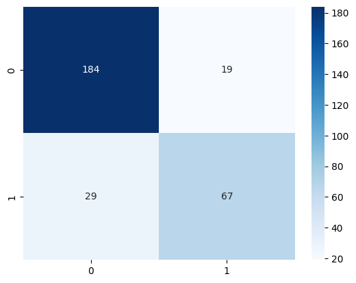

Image Classfication on “Heart Failure Cinical Records” Dataset#
Course Project, UC Irvine, Math 10, S24#
I would like to post my notebook on the course’s website. [Y/n] Y
from ucimlrepo import fetch_ucirepo
hf=fetch_ucirepo(
id=519
)
#url info about this dataset
{x:y for x,y in hf.metadata.items() if "URL" in x.upper()}
{'repository_url': 'https://archive.ics.uci.edu/dataset/519/heart+failure+clinical+records',
'data_url': 'https://archive.ics.uci.edu/static/public/519/data.csv'}
import pandas as pd
type(hf.data)
ucimlrepo.dotdict.dotdict
#ucimlrepo automatically split the data into X and y
#if I want to see the whole df, I have to put them back together
#hf_df=pd.concat([hf.data.features,hf.data.targets],axis=1)
#or
hf_df=pd.read_csv(dict(hf.metadata.items())["data_url"])
#list some data
hf_df[:5]
| age | anaemia | creatinine_phosphokinase | diabetes | ejection_fraction | high_blood_pressure | platelets | serum_creatinine | serum_sodium | sex | smoking | time | death_event | |
|---|---|---|---|---|---|---|---|---|---|---|---|---|---|
| 0 | 75.0 | 0 | 582 | 0 | 20 | 1 | 265000.00 | 1.9 | 130 | 1 | 0 | 4 | 1 |
| 1 | 55.0 | 0 | 7861 | 0 | 38 | 0 | 263358.03 | 1.1 | 136 | 1 | 0 | 6 | 1 |
| 2 | 65.0 | 0 | 146 | 0 | 20 | 0 | 162000.00 | 1.3 | 129 | 1 | 1 | 7 | 1 |
| 3 | 50.0 | 1 | 111 | 0 | 20 | 0 | 210000.00 | 1.9 | 137 | 1 | 0 | 7 | 1 |
| 4 | 65.0 | 1 | 160 | 1 | 20 | 0 | 327000.00 | 2.7 | 116 | 0 | 0 | 8 | 1 |
hf_df[-5:]
| age | anaemia | creatinine_phosphokinase | diabetes | ejection_fraction | high_blood_pressure | platelets | serum_creatinine | serum_sodium | sex | smoking | time | death_event | |
|---|---|---|---|---|---|---|---|---|---|---|---|---|---|
| 294 | 62.0 | 0 | 61 | 1 | 38 | 1 | 155000.0 | 1.1 | 143 | 1 | 1 | 270 | 0 |
| 295 | 55.0 | 0 | 1820 | 0 | 38 | 0 | 270000.0 | 1.2 | 139 | 0 | 0 | 271 | 0 |
| 296 | 45.0 | 0 | 2060 | 1 | 60 | 0 | 742000.0 | 0.8 | 138 | 0 | 0 | 278 | 0 |
| 297 | 45.0 | 0 | 2413 | 0 | 38 | 0 | 140000.0 | 1.4 | 140 | 1 | 1 | 280 | 0 |
| 298 | 50.0 | 0 | 196 | 0 | 45 | 0 | 395000.0 | 1.6 | 136 | 1 | 1 | 285 | 0 |
#I am seeing:
# dataset represent T/F as 1/0
# int was wrote as float
# vary big number in some col
#no missing values
hf_df[hf_df.isna().any(axis=1)]
| age | anaemia | creatinine_phosphokinase | diabetes | ejection_fraction | high_blood_pressure | platelets | serum_creatinine | serum_sodium | sex | smoking | time | death_event |
|---|
#around 32% dead (death_event=1)
sum(hf_df["death_event"])/len(hf_df["death_event"])
0.3210702341137124
Since the task is a binary classification problem, I will do Logistic Regression first.#
Logistic Regression without anything#
import numpy as np
import matplotlib.pyplot as plt
y_str="death_event"
y=hf_df[y_str]
X=hf_df[[x for x in list(hf_df.columns) if x!=y_str]]
import pandas as pd
import seaborn as sns
from sklearn.model_selection import train_test_split
from sklearn.linear_model import LogisticRegression
from sklearn.preprocessing import LabelEncoder
from sklearn.metrics import accuracy_score, confusion_matrix
import matplotlib.pyplot as plt
from sklearn.preprocessing import StandardScaler
model_0=LogisticRegression(penalty=None,max_iter=10**10)
model_0.fit(X,y)
#this is the predict rate without any data spliting
model_0.score(X,y)
0.8394648829431438
def show_conf_mat(model,X,y):
sns.heatmap(
confusion_matrix(y,model.predict(X)),
annot=True,
fmt="d",
cmap="Blues",
xticklabels=model.classes_,
yticklabels=model.classes_,
)
show_conf_mat(model_0,X,y)

Now I will split the data 8:2#
from sklearn.model_selection import train_test_split
SEED=42
#im tried to write X_train and X_test etc.
# my use of _l stand for learn(train), _t stand for test
X_l,X_t,y_l,y_t=train_test_split(X,y,test_size=0.2,random_state=SEED,shuffle=True)
model_1=LogisticRegression(penalty=None,max_iter=10**10)
model_1.fit(X_l,y_l)
#less than 2% acc was lost due to not knowing the full dataset
model_1.score(X_t,y_t),model_0.score(X_t,y_t)-model_1.score(X_t,y_t)
(0.8, -0.01666666666666672)
#There are a lot of FN
#which means that the model think a guy is dead but actually the guy survived
show_conf_mat(model_1,X_t,y_t)
Logistic Regression with Cross Validation#
k_vals=(2,11)
ks=[x for x in range(*k_vals)]
ks
[2, 3, 4, 5, 6, 7, 8, 9, 10]
from sklearn.model_selection import cross_val_score,KFold
model_2=LogisticRegression(penalty=None,max_iter=10**10)
best_info=[0]
for k in ks:
kf=KFold(
n_splits=k,
shuffle=True,
random_state=1
)
scores=cross_val_score(
model_2,
X_l,
y_l,
cv=kf,
)
best=max(scores)
if best>best_info[0]:
best_info=[best,k,list(scores).index(best)]
print(f"{k=} | {scores=}")
print(f"{scores.mean()=} | {np.std(scores)=}")
#as fold 10 getting around 92% is likely because of the pure luck
best_info
k=2 | scores=array([0.84166667, 0.78151261])
scores.mean()=0.8115896358543417 | np.std(scores)=0.030077030812324934
k=3 | scores=array([0.8375 , 0.775 , 0.7721519])
scores.mean()=0.7948839662447257 | np.std(scores)=0.030156510297425575
k=4 | scores=array([0.88333333, 0.85 , 0.78333333, 0.77966102])
scores.mean()=0.8240819209039548 | np.std(scores)=0.04420447035105028
k=5 | scores=array([0.875 , 0.83333333, 0.83333333, 0.79166667, 0.80851064])
scores.mean()=0.8283687943262411 | np.std(scores)=0.028160806711743997
k=6 | scores=array([0.875 , 0.825 , 0.825 , 0.775 , 0.825 ,
0.76923077])
scores.mean()=0.8157051282051282 | np.std(scores)=0.03557114760235953
k=7 | scores=array([0.85714286, 0.88235294, 0.79411765, 0.82352941, 0.82352941,
0.76470588, 0.82352941])
scores.mean()=0.8241296518607442 | np.std(scores)=0.03568274657311369
k=8 | scores=array([0.83333333, 0.9 , 0.83333333, 0.86666667, 0.73333333,
0.86666667, 0.73333333, 0.86206897])
scores.mean()=0.8285919540229885 | np.std(scores)=0.05843004129037457
k=9 | scores=array([0.81481481, 0.88888889, 0.81481481, 0.85185185, 0.85185185,
0.80769231, 0.76923077, 0.76923077, 0.84615385])
scores.mean()=0.8238366571699904 | np.std(scores)=0.03754491434144498
k=10 | scores=array([0.83333333, 0.91666667, 0.83333333, 0.875 , 0.83333333,
0.83333333, 0.79166667, 0.75 , 0.79166667, 0.82608696])
scores.mean()=0.8284420289855072 | np.std(scores)=0.043486185871937776
[0.9166666666666666, 10, 1]
Nerual Network With PyTorch#
!nvidia-smi
Wed Jun 12 20:07:40 2024
+-----------------------------------------------------------------------------------------+
| NVIDIA-SMI 550.78 Driver Version: 550.78 CUDA Version: 12.4 |
|-----------------------------------------+------------------------+----------------------+
| GPU Name Persistence-M | Bus-Id Disp.A | Volatile Uncorr. ECC |
| Fan Temp Perf Pwr:Usage/Cap | Memory-Usage | GPU-Util Compute M. |
| | | MIG M. |
|=========================================+========================+======================|
| 0 NVIDIA GeForce RTX 4060 ... Off | 00000000:01:00.0 Off | N/A |
| N/A 42C P8 3W / 140W | 356MiB / 8188MiB | 0% Default |
| | | N/A |
+-----------------------------------------+------------------------+----------------------+
+-----------------------------------------------------------------------------------------+
| Processes: |
| GPU GI CI PID Type Process name GPU Memory |
| ID ID Usage |
|=========================================================================================|
| 0 N/A N/A 2668 C python3 200MiB |
| 0 N/A N/A 3826 G /usr/bin/gnome-shell 2MiB |
| 0 N/A N/A 144898 C /home/vs/math10_final/.venv/bin/python 144MiB |
+-----------------------------------------------------------------------------------------+
import torch
from torch import nn
import matplotlib.pyplot as plt
import pandas as pd
torch.__version__
SEED=42
device="cuda" if torch.cuda.is_available() else "cpu"
device
'cuda'
#because there are 13 col, the model have to take 12 inputs
inp_size=len(hf_df.columns)-1
import pandas as pd
import torch
import torch.nn as nn
import torch.optim as optim
from sklearn.model_selection import train_test_split
from sklearn.preprocessing import StandardScaler
#normalize the data
scaler=StandardScaler()
X_l=scaler.fit_transform(
X_l
)
X_t=scaler.transform(X_t)
X_l,X_t
(array([[ 1.16420244, 1.13933179, -0.35037003, ..., 0.74293206,
-0.67625223, -1.56416577],
[ 1.16420244, -0.87770745, -0.50593309, ..., 0.74293206,
-0.67625223, 0.37989712],
[-0.03281933, 1.13933179, -0.50064183, ..., 0.74293206,
-0.67625223, 0.4950061 ],
...,
[-0.50609935, -0.87770745, 0.18087256, ..., 0.74293206,
-0.67625223, -0.56655455],
[-1.42476533, -0.87770745, 0.0052027 , ..., 0.74293206,
1.4787382 , 1.42866789],
[ 1.58177789, -0.87770745, 0.33961039, ..., 0.74293206,
1.4787382 , -0.57934444]]),
array([[ 7.46626996e-01, -8.77707451e-01, 5.20270419e-03,
-8.26497787e-01, 1.49345268e-01, -7.36162675e-01,
-2.24743345e+00, 1.32203359e+00, -9.44310219e-02,
7.42932064e-01, 1.47873820e+00, 1.50540721e+00],
[-9.23674793e-01, 1.13933179e+00, -2.95340912e-01,
-8.26497787e-01, -2.80697130e-01, -7.36162675e-01,
1.05843720e+00, -4.90853221e-01, 8.08329548e-01,
7.42932064e-01, 1.47873820e+00, 1.37750834e+00],
[-1.34125024e+00, -8.77707451e-01, 1.97355174e+00,
1.20992460e+00, -7.10739527e-01, -7.36162675e-01,
7.60802546e-01, -2.89421353e-01, 5.82639405e-01,
7.42932064e-01, -6.76252226e-01, -4.21691686e-02],
[ 1.58177789e+00, 1.13933179e+00, -4.80535042e-01,
-8.26497787e-01, -2.80697130e-01, 1.35839541e+00,
1.33481224e+00, 8.07000115e+00, -7.71501449e-01,
7.42932064e-01, 1.47873820e+00, -1.56416577e+00],
[-1.59179551e+00, -8.77707451e-01, -5.02758338e-01,
1.20992460e+00, 1.49345268e-01, -7.36162675e-01,
-2.70288943e-01, -1.88705419e-01, 8.08329548e-01,
7.42932064e-01, -6.76252226e-01, -7.45612977e-01],
[-9.23674793e-01, 1.13933179e+00, 5.01522972e-01,
1.20992460e+00, -7.10739527e-01, -7.36162675e-01,
-3.23437989e-01, -6.92285088e-01, -9.44310219e-02,
-1.34601809e+00, -6.76252226e-01, 1.45424766e+00],
[-8.85238982e-02, 1.13933179e+00, -4.47729225e-01,
-8.26497787e-01, -1.14078192e+00, -7.36162675e-01,
-5.57293791e-01, 3.14874250e-01, -3.20121164e-01,
7.42932064e-01, -6.76252226e-01, -6.43293878e-01],
[-1.34125024e+00, -8.77707451e-01, -3.01690425e-01,
1.20992460e+00, -2.80697130e-01, -7.36162675e-01,
6.24578408e+00, -8.79894853e-02, 1.25970983e+00,
7.42932064e-01, 1.47873820e+00, -5.66554553e-01],
[ 2.41692879e+00, 1.13933179e+00, -5.60962207e-01,
-8.26497787e-01, 1.49345268e-01, 1.35839541e+00,
-6.21072646e-01, 7.17737985e-01, -9.97191591e-01,
7.42932064e-01, 1.47873820e+00, -1.58974555e+00],
[-9.23674793e-01, 1.13933179e+00, -4.89001060e-01,
-8.26497787e-01, -1.57082432e+00, -7.36162675e-01,
-7.80519783e-01, -5.91569154e-01, 5.82639405e-01,
7.42932064e-01, -6.76252226e-01, 1.75258918e-01],
[ 7.46626996e-01, 1.13933179e+00, -5.48263181e-01,
-8.26497787e-01, 1.86951486e+00, -7.36162675e-01,
-7.89523783e-02, -2.89421353e-01, -9.44310219e-02,
-1.34601809e+00, -6.76252226e-01, -6.04924216e-01],
[ 1.33123262e+00, 1.13933179e+00, -1.68350652e-01,
-8.26497787e-01, 5.79387665e-01, -7.36162675e-01,
-4.19106272e-01, 4.15590184e-01, 1.93678026e+00,
7.42932064e-01, -6.76252226e-01, 6.10115090e-01],
[-2.55554077e-01, 1.13933179e+00, -4.57253494e-01,
-8.26497787e-01, -1.14078192e+00, -7.36162675e-01,
-4.61625508e-01, -1.88705419e-01, 1.31259120e-01,
7.42932064e-01, 1.47873820e+00, 4.82216216e-01],
[ 3.29051549e-01, 1.13933179e+00, -2.56185582e-01,
-8.26497787e-01, -2.80697130e-01, 1.35839541e+00,
-2.91548562e-01, -5.91569154e-01, -9.44310219e-02,
-1.34601809e+00, -6.76252226e-01, -1.57278155e-01],
[-8.85238982e-02, 1.13933179e+00, 3.16590085e-02,
-8.26497787e-01, 1.49345268e-01, -7.36162675e-01,
-4.93514936e-01, -7.93001022e-01, 3.56949263e-01,
7.42932064e-01, 1.47873820e+00, -1.00141073e+00],
[-1.34125024e+00, -8.77707451e-01, 7.53995816e+00,
1.20992460e+00, -1.14078192e+00, 1.35839541e+00,
1.35607186e+00, -3.90137287e-01, 5.82639405e-01,
7.42932064e-01, -6.76252226e-01, -9.24671401e-01],
[ 2.45536460e-01, -8.77707451e-01, 1.09308594e+00,
-8.26497787e-01, 1.86951486e+00, -7.36162675e-01,
-2.17139898e-01, -3.90137287e-01, 1.31259120e-01,
7.42932064e-01, -6.76252226e-01, -2.46807368e-01],
[ 1.62021370e-01, -8.77707451e-01, 3.79823973e-01,
-8.26497787e-01, -2.26716912e-02, -7.36162675e-01,
4.41908271e-01, -2.89421353e-01, -7.71501449e-01,
7.42932064e-01, 1.47873820e+00, -5.66554553e-01],
[-1.34125024e+00, -8.77707451e-01, 5.20270419e-03,
-8.26497787e-01, -2.80697130e-01, -7.36162675e-01,
1.30292281e+00, -3.90137287e-01, 1.93678026e+00,
7.42932064e-01, -6.76252226e-01, -9.11881514e-01],
[ 1.58177789e+00, -8.77707451e-01, 2.41192938e-01,
-8.26497787e-01, -2.26716912e-02, -7.36162675e-01,
9.89188559e-03, -2.89421353e-01, -5.45811307e-01,
7.42932064e-01, -6.76252226e-01, -2.97966917e-01],
[-8.85238982e-02, 1.13933179e+00, -3.66243808e-01,
1.20992460e+00, -1.14078192e+00, -7.36162675e-01,
-7.27370738e-01, 3.14874250e-01, 8.08329548e-01,
7.42932064e-01, -6.76252226e-01, -1.57278155e-01],
[-8.85238982e-02, -8.77707451e-01, -5.54612694e-01,
-8.26497787e-01, 1.00943006e+00, 1.35839541e+00,
2.50571706e-01, 9.19169853e-01, 1.48539997e+00,
-1.34601809e+00, -6.76252226e-01, -5.79344441e-01],
[ 2.45536460e-01, -8.77707451e-01, -4.59369999e-01,
-8.26497787e-01, -1.14078192e+00, -7.36162675e-01,
-1.74620661e-01, 1.01988579e+00, -3.20121164e-01,
7.42932064e-01, -6.76252226e-01, 1.04497126e+00],
[-8.40159703e-01, -8.77707451e-01, 8.49687936e-01,
-8.26497787e-01, -1.14078192e+00, 1.35839541e+00,
9.11245684e-02, -4.90853221e-01, -1.44857188e+00,
7.42932064e-01, -6.76252226e-01, -1.20604892e+00],
[ 7.46626996e-01, -8.77707451e-01, -6.43806969e-03,
1.20992460e+00, 5.79387665e-01, 1.35839541e+00,
-8.23039020e-01, -1.88705419e-01, 5.82639405e-01,
7.42932064e-01, 1.47873820e+00, -1.26999836e+00],
[-1.34125024e+00, -8.77707451e-01, 5.20270419e-03,
-8.26497787e-01, -2.26716912e-02, 1.35839541e+00,
1.69622575e+00, -5.91569154e-01, 1.31259120e-01,
-1.34601809e+00, -6.76252226e-01, 1.44145777e+00],
[ 7.46626996e-01, -8.77707451e-01, 2.24128954e+00,
1.20992460e+00, 1.49345268e-01, -7.36162675e-01,
-2.27769707e-01, -3.90137287e-01, 1.31259120e-01,
7.42932064e-01, -6.76252226e-01, 1.46703755e+00],
[-8.85238982e-02, 1.13933179e+00, -5.09107851e-01,
1.20992460e+00, 1.86951486e+00, 1.35839541e+00,
9.11245684e-02, -6.92285088e-01, -9.44310219e-02,
-1.34601809e+00, -6.76252226e-01, -4.89815229e-01],
[-1.09070497e+00, 1.13933179e+00, -4.72069025e-01,
1.20992460e+00, -7.10739527e-01, 1.35839541e+00,
-1.95880279e-01, 2.14158316e-01, -1.44857188e+00,
-1.34601809e+00, -6.76252226e-01, 7.76383627e-01],
[ 1.16420244e+00, -8.77707451e-01, -4.84768051e-01,
-8.26497787e-01, 1.00943006e+00, 1.35839541e+00,
-1.53361043e-01, -2.89421353e-01, 2.61385069e+00,
7.42932064e-01, -6.76252226e-01, 9.81021826e-01],
[-1.34125024e+00, -8.77707451e-01, 5.20270419e-03,
-8.26497787e-01, -2.08687520e+00, -7.36162675e-01,
-1.02500539e+00, -5.91569154e-01, -2.12564230e+00,
7.42932064e-01, -6.76252226e-01, -1.51300622e+00],
[-5.06099345e-01, 1.13933179e+00, -4.20214668e-01,
-8.26497787e-01, 5.79387665e-01, -7.36162675e-01,
9.89188559e-03, -2.08848606e-01, 1.31259120e-01,
7.42932064e-01, 1.47873820e+00, 1.00660160e+00],
[-9.23674793e-01, 1.13933179e+00, -4.42437964e-01,
1.20992460e+00, -7.10739527e-01, -7.36162675e-01,
4.20648653e-01, -1.88705419e-01, 3.56949263e-01,
-1.34601809e+00, -6.76252226e-01, -1.32115791e+00],
[ 1.16420244e+00, -8.77707451e-01, 5.20270419e-03,
1.20992460e+00, -7.10739527e-01, 1.35839541e+00,
9.89188559e-03, 4.45804964e-01, -5.45811307e-01,
-1.34601809e+00, -6.76252226e-01, -1.39789724e+00],
[-9.23674793e-01, -8.77707451e-01, 5.20270419e-03,
1.20992460e+00, -2.26716912e-02, -7.36162675e-01,
5.05687126e-01, 5.16306118e-01, -3.20121164e-01,
7.42932064e-01, 1.47873820e+00, -1.24441859e+00],
[-8.85238982e-02, 1.13933179e+00, -2.77350625e-01,
1.20992460e+00, 1.86951486e+00, -7.36162675e-01,
2.03637965e+00, -2.89421353e-01, -1.22288173e+00,
7.42932064e-01, 1.47873820e+00, -1.56416577e+00],
[ 7.46626996e-01, 1.13933179e+00, -4.59369999e-01,
-8.26497787e-01, 1.86951486e+00, -7.36162675e-01,
9.41509302e-01, -8.79894853e-02, 1.31259120e-01,
-1.34601809e+00, -6.76252226e-01, -5.40974778e-01],
[-1.34125024e+00, -8.77707451e-01, 5.20270419e-03,
-8.26497787e-01, -1.57082432e+00, 1.35839541e+00,
-1.45019776e+00, 2.14158316e-01, -3.20121164e-01,
7.42932064e-01, -6.76252226e-01, 6.10115090e-01],
[-5.06099345e-01, -8.77707451e-01, -5.47204929e-01,
-8.26497787e-01, -2.80697130e-01, -7.36162675e-01,
-3.65957226e-01, -1.88705419e-01, -3.20121164e-01,
7.42932064e-01, 1.47873820e+00, -5.40974778e-01],
[-1.59179551e+00, -8.77707451e-01, 5.20270419e-03,
-8.26497787e-01, 1.86951486e+00, -7.36162675e-01,
9.89188559e-03, -2.08848606e-01, 1.31259120e-01,
-1.34601809e+00, -6.76252226e-01, -6.43293878e-01],
[-8.85238982e-02, 1.13933179e+00, -5.60962207e-01,
-8.26497787e-01, -1.57082432e+00, -7.36162675e-01,
-6.21072646e-01, -6.92285088e-01, 5.82639405e-01,
7.42932064e-01, 1.47873820e+00, -7.58402865e-01],
[-8.85238982e-02, 1.13933179e+00, -5.30272894e-01,
1.20992460e+00, -1.14078192e+00, -7.36162675e-01,
-7.06111119e-01, 1.12060172e+00, -9.97191591e-01,
-1.34601809e+00, -6.76252226e-01, -7.07243315e-01],
[ 3.29051549e-01, 1.13933179e+00, -4.91117564e-01,
1.20992460e+00, 1.86951486e+00, 1.35839541e+00,
-6.31702455e-01, -4.90853221e-01, 8.08329548e-01,
-1.34601809e+00, -6.76252226e-01, -4.89815229e-01],
[ 7.46626996e-01, -8.77707451e-01, -5.13340859e-01,
-8.26497787e-01, 1.86951486e+00, 1.35839541e+00,
5.80095790e-01, -5.91569154e-01, 8.08329548e-01,
-1.34601809e+00, 1.47873820e+00, -7.45612977e-01],
[-6.73129524e-01, 1.13933179e+00, -3.24971973e-01,
1.20992460e+00, -2.80697130e-01, -7.36162675e-01,
-3.76587035e-01, 2.02704512e+00, 1.93678026e+00,
7.42932064e-01, -6.76252226e-01, -3.49126467e-01],
[ 3.29051549e-01, -8.77707451e-01, -4.33971947e-01,
-8.26497787e-01, -7.10739527e-01, -7.36162675e-01,
-3.64331417e-02, -5.91569154e-01, 3.56949263e-01,
-1.34601809e+00, -6.76252226e-01, 6.86854415e-01],
[ 7.46626996e-01, -8.77707451e-01, -3.86350599e-01,
1.20992460e+00, -1.82884976e+00, 1.35839541e+00,
1.34544205e+00, -3.90137287e-01, -9.44310219e-02,
7.42932064e-01, 1.47873820e+00, 7.12434190e-01],
[ 3.29051549e-01, -8.77707451e-01, 3.33260877e-01,
1.20992460e+00, -2.80697130e-01, -7.36162675e-01,
9.89188559e-03, -2.89421353e-01, 1.25970983e+00,
-1.34601809e+00, -6.76252226e-01, 1.58214654e+00],
[-5.06099345e-01, -8.77707451e-01, 5.20270419e-03,
1.20992460e+00, -2.80697130e-01, 1.35839541e+00,
1.15410549e+00, -6.92285088e-01, 8.08329548e-01,
-1.34601809e+00, -6.76252226e-01, 8.27543177e-01],
[ 1.62021370e-01, 1.13933179e+00, -4.81593294e-01,
1.20992460e+00, 1.86951486e+00, -7.36162675e-01,
4.86053317e-02, -1.88705419e-01, 1.93678026e+00,
7.42932064e-01, -6.76252226e-01, 1.88048805e-01],
[ 9.13657175e-01, 1.13933179e+00, 3.87231738e-01,
-8.26497787e-01, -1.14078192e+00, 1.35839541e+00,
8.03321783e-01, 3.14874250e-01, 5.82639405e-01,
7.42932064e-01, 1.47873820e+00, -2.72387142e-01],
[-9.23674793e-01, -8.77707451e-01, 5.20270419e-03,
-8.26497787e-01, 1.00943006e+00, -7.36162675e-01,
-1.16319291e+00, -7.93001022e-01, -5.45811307e-01,
-1.34601809e+00, -6.76252226e-01, 5.07795991e-01],
[-1.72038988e-01, 1.13933179e+00, -3.14389451e-01,
1.20992460e+00, -1.14078192e+00, 1.35839541e+00,
4.20648653e-01, -3.90137287e-01, 1.03401969e+00,
-1.34601809e+00, -6.76252226e-01, -6.94453428e-01],
[-1.75882569e+00, -8.77707451e-01, 4.96492954e-02,
-8.26497787e-01, -2.80697130e-01, -7.36162675e-01,
4.10018843e-01, -3.90137287e-01, 1.25970983e+00,
7.42932064e-01, 1.47873820e+00, 1.04497126e+00],
[ 7.46626996e-01, -8.77707451e-01, 5.20270419e-03,
1.20992460e+00, -2.26716912e-02, -7.36162675e-01,
-2.52274551e+00, -2.89421353e-01, 8.08329548e-01,
7.42932064e-01, -6.76252226e-01, 1.45424766e+00],
[ 3.29051549e-01, -8.77707451e-01, -3.73651573e-01,
1.20992460e+00, 1.00943006e+00, -7.36162675e-01,
-1.20571215e+00, -8.79894853e-02, 1.31259120e-01,
7.42932064e-01, 1.47873820e+00, -7.71192752e-01],
[-5.89614435e-01, -8.77707451e-01, 5.20270419e-03,
1.20992460e+00, -2.26716912e-02, -7.36162675e-01,
1.67159042e-02, 4.15590184e-01, -5.45811307e-01,
7.42932064e-01, -6.76252226e-01, 1.03218138e+00],
[ 1.58177789e+00, -8.77707451e-01, -4.54078738e-01,
1.20992460e+00, -2.26716912e-02, -7.36162675e-01,
-1.20571215e+00, 5.16306118e-01, 1.71109012e+00,
7.42932064e-01, 1.47873820e+00, -1.39789724e+00],
[-1.00718988e+00, -8.77707451e-01, 4.17921051e-01,
1.20992460e+00, -2.80697130e-01, 1.35839541e+00,
5.92351409e-02, -5.91569154e-01, -1.44857188e+00,
-1.34601809e+00, -6.76252226e-01, 6.99644302e-01],
[ 9.13657175e-01, -8.77707451e-01, -2.25496269e-01,
1.20992460e+00, -1.57082432e+00, 1.35839541e+00,
-8.95821875e-02, -8.79894853e-02, -9.44310219e-02,
7.42932064e-01, 1.47873820e+00, -9.37461289e-01]]))
X_l=torch.tensor(X_l,dtype=torch.float32).to(device)
y_l=torch.tensor(y_l,dtype=torch.float32).to(device).unsqueeze(1)
X_t = torch.tensor(X_t, dtype=torch.float32).unsqueeze(1).to(device)
y_t = torch.tensor(y_t.to_numpy(), dtype=torch.float32).unsqueeze(1).to(device)
class HeartFailureNN(nn.Module):
def __init__(self):
super(HeartFailureNN, self).__init__()
self.layer1 = nn.Linear(inp_size, 32)
self.layer2 = nn.Linear(32, 16)
self.output = nn.Linear(16, 1)
self.relu = nn.ReLU()
self.sigmoid = nn.Sigmoid()
def forward(self, x):
x = self.relu(self.layer1(x))
x = self.relu(self.layer2(x))
x = self.sigmoid(self.output(x))
return x
model_3=HeartFailureNN().to(device)
model_3.state_dict()
OrderedDict([('layer1.weight',
tensor([[ 2.2922e-01, 1.7116e-01, -9.3077e-02, -9.1616e-02, 2.2275e-01,
-2.3007e-01, 3.1890e-02, 1.7748e-01, 1.8381e-01, -1.3053e-01,
-1.4603e-02, 4.1606e-02],
[-2.8085e-01, -1.0538e-01, 1.8502e-01, -1.7459e-02, 1.9211e-01,
-4.4997e-02, -1.6611e-01, -2.4092e-01, 2.4254e-01, -1.3782e-01,
-7.3709e-02, 4.9440e-02],
[ 2.0098e-02, -6.7884e-02, 1.2450e-02, -2.4829e-01, 1.5804e-01,
2.2427e-01, -7.8982e-02, -2.0919e-01, 2.7983e-01, -3.3181e-02,
8.7102e-02, 1.2963e-01],
[ 2.5613e-01, -4.7729e-02, -8.6461e-02, 2.5679e-01, 2.8597e-01,
1.5136e-01, 2.8460e-01, 1.5277e-01, -5.8291e-02, 2.1879e-01,
2.4158e-02, 2.2968e-01],
[ 4.1753e-02, 1.7969e-01, 4.8242e-02, 4.6568e-02, -2.0279e-01,
-2.4347e-01, -2.4704e-02, -2.6502e-01, -1.4418e-01, 1.7965e-01,
-2.3586e-01, 8.1565e-02],
[-2.7891e-01, 1.7206e-01, -2.5785e-02, -2.4873e-01, 2.8244e-01,
-2.4949e-01, 1.6958e-01, -2.7877e-01, 9.8072e-02, 1.0169e-01,
-6.7338e-02, 1.1296e-01],
[ 1.2056e-02, 1.3713e-01, 1.2473e-01, -1.8328e-01, 1.5901e-02,
4.2842e-02, 1.8066e-01, 1.4241e-01, -1.3926e-02, -2.0259e-01,
-2.0861e-01, 2.9812e-02],
[-1.8504e-01, -4.4055e-02, 2.0949e-01, 2.7394e-02, -2.6404e-01,
-2.2627e-01, 1.3557e-01, -2.3805e-01, 1.6995e-01, -1.9433e-01,
-2.6464e-01, -2.2572e-02],
[ 1.1152e-01, -1.9490e-01, 1.2100e-01, 3.3853e-02, 5.8822e-02,
1.3180e-01, 3.8797e-02, 1.8920e-01, 2.5211e-01, -1.4696e-01,
1.4074e-01, 1.4404e-01],
[ 2.2004e-01, 1.5028e-01, -8.7056e-02, 9.4089e-02, -2.7881e-01,
2.6406e-01, 7.4161e-03, -1.0224e-01, -2.5340e-01, -1.9560e-01,
-2.0781e-01, -2.2178e-01],
[ 1.3610e-01, -6.1982e-02, 1.2046e-01, -1.0912e-01, 1.8858e-01,
1.7452e-01, 1.3999e-01, 6.1097e-02, 5.6583e-03, 1.4405e-01,
-2.4902e-02, -7.5582e-02],
[ 2.6280e-01, -7.6948e-02, -2.2195e-01, -2.3445e-01, -2.0777e-01,
-1.2450e-02, 2.2259e-01, -7.5717e-02, 1.0698e-01, 5.6350e-03,
1.9516e-01, 1.4356e-01],
[ 1.5255e-01, -1.1269e-01, 2.2399e-01, 2.2950e-01, -1.8591e-02,
-1.4937e-01, 2.4557e-01, -4.1247e-02, -1.7470e-02, 1.9159e-01,
-2.8817e-01, -2.0290e-01],
[-1.0617e-01, -4.1614e-02, -1.1760e-01, -3.2803e-02, -2.7631e-01,
2.3587e-01, -2.5664e-01, 1.7575e-01, -2.1476e-01, 1.2556e-01,
-2.0557e-01, 2.6747e-01],
[-4.7474e-02, -1.6228e-01, 1.4995e-01, -2.5735e-01, -2.5603e-02,
1.3204e-01, -5.8533e-02, 2.8483e-01, 2.1777e-02, 1.7812e-01,
-1.3998e-01, 1.6854e-02],
[ 1.4044e-01, 2.7219e-02, -2.6933e-01, 1.1827e-01, -2.0488e-01,
-1.6318e-01, 2.7501e-01, 6.2147e-03, 3.5243e-02, -1.3790e-01,
2.5126e-01, -4.6583e-02],
[ 5.1457e-02, 2.2490e-01, -1.6779e-01, -7.2829e-02, 2.7296e-01,
2.8333e-01, -7.0932e-02, -1.1297e-01, -1.0611e-01, -8.2073e-02,
-1.8777e-01, -2.3319e-01],
[ 1.4356e-01, 1.1685e-01, -1.4809e-01, 4.6295e-02, -2.8786e-01,
-2.8156e-01, 2.6534e-01, 1.5115e-01, 1.0951e-01, -5.4767e-02,
-1.5352e-03, 8.4666e-02],
[ 9.1542e-02, 1.5486e-06, -1.5656e-01, -4.6717e-02, 1.7426e-01,
1.2075e-01, -1.6180e-01, -2.6076e-01, 1.5258e-01, -1.1592e-01,
-1.3743e-02, 8.6743e-02],
[ 2.2532e-01, -1.6604e-01, -2.5131e-01, 1.3629e-01, 2.5422e-02,
-1.7199e-01, 8.9597e-02, 1.3128e-01, -1.6143e-01, 2.6216e-01,
-3.7319e-02, 1.9186e-01],
[ 1.1678e-01, 2.4223e-01, -1.4849e-01, 1.7106e-01, -3.5642e-02,
-2.6884e-01, -1.9576e-01, 7.6277e-02, -2.8300e-02, 2.0703e-01,
-1.8745e-01, -2.4719e-02],
[-1.3567e-01, 5.6176e-03, -2.2379e-01, -1.7211e-01, 4.6289e-02,
1.1340e-01, -9.4377e-03, 2.6884e-01, -7.7984e-02, 1.4181e-01,
1.6457e-01, 1.5838e-01],
[ 1.5180e-01, -2.3071e-01, -2.1298e-01, -1.1716e-01, 1.8801e-01,
-4.1196e-02, 8.4357e-02, 2.7259e-01, -2.7399e-01, 1.7135e-01,
1.9712e-01, -7.8625e-02],
[-1.4490e-01, 1.0419e-01, 1.2527e-01, 6.3795e-02, 1.9840e-01,
-2.9285e-03, -2.0880e-02, -2.7633e-01, -4.5022e-03, 2.6675e-01,
7.6740e-02, -7.6956e-02],
[-2.0576e-02, 1.4079e-01, -2.2443e-01, -2.5425e-01, -2.1205e-01,
-2.3505e-01, 5.1943e-02, 1.0504e-01, 1.0069e-01, 2.5194e-01,
2.2699e-01, 1.8161e-01],
[ 2.6235e-01, 3.1063e-02, -4.2365e-02, 6.6400e-02, 6.8451e-02,
1.4366e-01, 2.4748e-01, -1.4717e-01, -2.3817e-01, -1.4089e-01,
1.8282e-01, -1.5904e-01],
[ 1.8596e-01, -2.1978e-01, 3.8548e-02, -1.4320e-01, -1.7156e-02,
1.2213e-01, -1.1416e-01, 2.0357e-01, -6.3323e-03, -2.2644e-01,
1.5494e-01, -2.5748e-01],
[-2.4320e-01, 2.2262e-01, 1.5010e-01, -2.3336e-01, 5.1623e-02,
-2.4053e-01, -1.1564e-01, 1.3193e-01, 1.0731e-01, -9.0276e-02,
2.9072e-02, 1.6025e-01],
[ 2.7049e-01, 5.2668e-02, 2.7311e-01, 9.5785e-02, -7.9667e-02,
1.1482e-01, -1.2378e-01, 4.8536e-02, -1.0620e-02, -9.0178e-02,
1.5000e-02, 1.7173e-01],
[-1.3140e-01, -2.5672e-02, -2.6276e-01, -1.5423e-01, -1.8655e-01,
1.3370e-01, 1.6982e-01, -4.5856e-02, 2.1548e-01, 1.8413e-01,
-1.5558e-01, 1.3998e-01],
[ 1.7256e-01, -2.0840e-01, 1.3721e-02, -9.6935e-02, 1.0276e-01,
-4.1685e-02, 3.5669e-02, 1.8701e-02, -2.7238e-01, 2.5471e-01,
-7.5701e-02, 7.7424e-02],
[ 6.9836e-02, -2.6389e-02, -7.1167e-02, 2.4586e-01, 9.9125e-03,
-2.9470e-02, -9.3469e-03, -1.0000e-01, -2.5670e-01, 2.0543e-01,
-2.5952e-01, 1.3137e-01]], device='cuda:0')),
('layer1.bias',
tensor([-0.0886, 0.0411, 0.0627, 0.1634, -0.1887, -0.2666, 0.1526, 0.1626,
0.2846, -0.0813, -0.2582, -0.1629, 0.0146, -0.1577, -0.1936, 0.1467,
-0.2726, -0.0552, 0.0364, 0.2366, -0.0942, 0.0444, 0.0127, 0.0200,
0.2252, 0.1151, 0.1152, 0.1540, 0.1302, -0.2413, 0.1168, 0.1385],
device='cuda:0')),
('layer2.weight',
tensor([[-0.1200, -0.1599, -0.0756, -0.0413, -0.0395, 0.1582, 0.1190, -0.0294,
-0.0567, 0.1274, -0.0705, -0.0731, -0.1281, 0.0982, -0.0276, -0.0380,
0.0866, 0.1285, -0.0095, 0.0941, -0.0772, 0.0654, -0.0094, 0.0631,
-0.0913, 0.0569, 0.1150, -0.0016, -0.1309, -0.0459, -0.1622, 0.1050],
[ 0.1653, 0.0329, 0.0938, 0.0355, 0.1335, 0.0054, 0.1169, -0.0805,
0.0027, 0.0356, 0.1192, -0.0156, -0.1356, 0.0262, 0.0374, -0.0864,
-0.0993, 0.0979, 0.1555, 0.1299, 0.1344, -0.0099, -0.1681, 0.1642,
-0.1376, -0.1281, 0.1436, -0.0401, 0.0227, -0.0009, -0.0044, -0.1481],
[-0.0668, -0.1125, 0.0166, -0.1002, -0.0752, 0.1394, 0.0593, 0.0251,
0.0758, 0.1550, 0.0041, -0.1480, -0.1275, 0.0522, -0.0483, 0.0484,
0.1500, -0.1423, -0.1336, 0.0881, 0.1662, 0.0474, 0.1068, 0.1420,
0.1177, 0.0158, 0.0319, 0.0524, 0.0569, 0.0741, -0.0486, 0.0786],
[ 0.0252, 0.1572, -0.0705, -0.0931, 0.1671, -0.0457, -0.0854, -0.1197,
-0.1355, 0.0841, -0.0034, 0.0502, 0.0421, -0.1732, 0.0733, 0.1073,
0.0112, -0.1413, -0.1222, -0.0768, 0.0511, 0.0621, -0.1556, 0.1066,
0.1100, 0.0768, 0.1635, 0.0179, -0.0088, -0.0205, 0.0612, 0.0782],
[ 0.0715, -0.0172, -0.0122, 0.0707, 0.0390, -0.1061, -0.1661, 0.0072,
0.1611, -0.1321, -0.1448, -0.0905, 0.1153, -0.0320, -0.1605, 0.1312,
0.1116, 0.0865, -0.0338, 0.0499, -0.0574, 0.1269, -0.0373, 0.0309,
-0.1501, 0.0818, -0.0887, 0.0963, -0.0882, 0.0935, 0.1609, -0.1361],
[ 0.1139, -0.1413, -0.0169, 0.0744, -0.0119, -0.1395, 0.0333, 0.1270,
0.0699, -0.0093, 0.0098, -0.1335, -0.1258, 0.0939, -0.0403, -0.0241,
-0.0402, -0.0788, 0.0787, -0.0099, -0.1139, -0.0522, 0.1471, -0.0463,
-0.0187, 0.1732, 0.0557, 0.1283, 0.0961, -0.1151, -0.1534, 0.1647],
[ 0.0736, -0.0811, 0.0689, 0.1484, 0.1643, -0.1641, -0.1074, 0.0913,
-0.1672, 0.0883, 0.1398, -0.1739, -0.1733, -0.0080, 0.0580, 0.0641,
0.1523, 0.0849, -0.0426, 0.0251, -0.0755, 0.1624, -0.1509, 0.0228,
0.0767, -0.0349, 0.1679, 0.0514, 0.0210, -0.0050, 0.0468, -0.0994],
[-0.1709, 0.0605, -0.0884, -0.1126, 0.0710, -0.0542, -0.1277, -0.1406,
0.0619, 0.1300, 0.0114, -0.0858, -0.1760, 0.1100, 0.1620, -0.0190,
0.1079, -0.0210, 0.0166, 0.0517, 0.0362, 0.0122, 0.1283, 0.0569,
-0.0151, -0.1619, -0.1623, 0.1598, 0.0877, -0.0579, -0.1021, 0.1557],
[ 0.1305, 0.0847, 0.0191, -0.0901, -0.1484, 0.0859, -0.0319, 0.0995,
0.1637, 0.1125, 0.1144, 0.0235, -0.1365, -0.0243, 0.0778, 0.0221,
-0.1302, 0.0673, 0.0692, 0.1442, 0.1448, -0.0758, -0.1609, 0.1482,
0.0878, 0.0717, -0.0996, -0.0546, 0.1631, -0.0003, 0.1518, 0.0770],
[ 0.1576, -0.1459, 0.1297, 0.0037, 0.0940, -0.1616, -0.1626, -0.0021,
-0.1095, -0.1695, -0.0439, -0.0440, 0.1559, -0.0678, 0.0791, -0.0803,
0.0078, -0.0874, 0.0428, 0.0132, 0.0751, 0.1143, 0.1100, 0.0071,
-0.0436, 0.1019, -0.1277, -0.0024, 0.0686, -0.1135, 0.1214, -0.0527],
[ 0.0233, -0.0951, -0.0870, -0.0718, 0.0893, 0.0462, 0.1386, 0.0880,
0.1489, -0.0890, -0.1475, 0.0149, 0.1704, 0.0517, -0.1670, 0.1112,
0.1720, -0.0661, 0.0366, 0.0257, 0.1721, -0.1119, -0.0336, 0.0573,
0.1013, 0.0042, -0.0609, -0.0770, 0.1296, 0.1278, 0.0783, 0.0041],
[ 0.0905, 0.0185, -0.1118, 0.1594, -0.0095, -0.1602, -0.0506, -0.1600,
-0.1473, -0.1479, 0.1435, -0.0713, -0.0330, 0.0823, -0.1583, 0.1335,
0.0530, 0.1464, -0.0603, -0.0237, -0.0716, -0.0875, 0.0881, -0.0555,
-0.0630, 0.1403, 0.1479, -0.0418, -0.0494, 0.0203, -0.0287, 0.0595],
[ 0.0133, 0.0639, -0.1751, -0.0269, -0.0603, 0.0576, -0.1172, 0.0585,
-0.0008, 0.0350, 0.0535, 0.0436, 0.0142, 0.0992, 0.1667, 0.0452,
-0.1476, 0.0541, -0.1494, 0.0383, 0.1417, 0.1130, -0.1272, 0.1477,
0.1555, 0.1440, 0.0990, -0.0458, -0.0281, 0.1287, 0.0152, 0.1150],
[ 0.0477, 0.0229, 0.1208, 0.1343, 0.1342, 0.0723, 0.1572, -0.1351,
0.1629, 0.1058, -0.1342, -0.0915, -0.0103, -0.1656, 0.0845, 0.0597,
0.0976, 0.0563, 0.0244, -0.1183, 0.1239, 0.1361, -0.1361, 0.1625,
0.0588, 0.0150, 0.1604, 0.0179, -0.1611, -0.0998, -0.0942, -0.1552],
[ 0.1484, 0.1718, -0.0962, -0.0719, -0.1379, -0.0358, 0.1151, -0.1218,
-0.0922, -0.1632, -0.0489, 0.1725, 0.1094, -0.0046, 0.0734, 0.1527,
0.0993, 0.1538, -0.0794, -0.1512, -0.0762, -0.1732, -0.0082, 0.1076,
0.1149, 0.0343, 0.0058, 0.0125, 0.0320, -0.1636, 0.0797, -0.1142],
[ 0.0346, -0.0631, -0.0095, -0.1010, -0.0787, -0.0316, -0.1295, -0.0914,
0.1307, 0.0124, -0.0303, -0.0649, 0.0121, 0.0707, -0.0673, -0.1432,
-0.0561, -0.1000, 0.1616, 0.0075, 0.0032, 0.0116, -0.0566, -0.1495,
-0.1125, -0.0638, -0.1213, 0.0666, 0.0953, -0.1432, -0.0619, -0.0544]],
device='cuda:0')),
('layer2.bias',
tensor([-0.0021, -0.1047, -0.0269, -0.0528, 0.0936, 0.0146, 0.0897, -0.1447,
-0.1727, -0.1554, -0.0019, -0.0623, -0.1504, 0.0433, -0.0143, 0.0358],
device='cuda:0')),
('output.weight',
tensor([[-0.1879, -0.0180, 0.2389, 0.0558, 0.2346, 0.2328, 0.0621, 0.0352,
0.1764, 0.0967, -0.2126, -0.1112, 0.2139, -0.0339, 0.1071, -0.1764]],
device='cuda:0')),
('output.bias', tensor([0.1674], device='cuda:0'))])
with torch.inference_mode():
untrained_y_pred=model_3(X_t)
untrained_y_pred
tensor([[[0.6110]],
[[0.5938]],
[[0.5459]],
[[0.6435]],
[[0.5528]],
[[0.5590]],
[[0.5610]],
[[0.5899]],
[[0.5955]],
[[0.5637]],
[[0.5577]],
[[0.5635]],
[[0.5780]],
[[0.5533]],
[[0.5728]],
[[0.5615]],
[[0.5605]],
[[0.5734]],
[[0.5577]],
[[0.5487]],
[[0.5576]],
[[0.5514]],
[[0.5855]],
[[0.5635]],
[[0.5745]],
[[0.5457]],
[[0.5580]],
[[0.5566]],
[[0.5659]],
[[0.5654]],
[[0.5638]],
[[0.5829]],
[[0.5533]],
[[0.5739]],
[[0.5661]],
[[0.5917]],
[[0.5614]],
[[0.5822]],
[[0.5721]],
[[0.5491]],
[[0.5701]],
[[0.5642]],
[[0.5611]],
[[0.5734]],
[[0.5728]],
[[0.5537]],
[[0.5878]],
[[0.5758]],
[[0.5642]],
[[0.5578]],
[[0.5675]],
[[0.5485]],
[[0.5609]],
[[0.5872]],
[[0.5628]],
[[0.5678]],
[[0.5670]],
[[0.5647]],
[[0.5765]],
[[0.5780]]], device='cuda:0')
def show_conf_mat(model,X,y):
sns.heatmap(
confusion_matrix(y.to("cpu").squeeze().detach().numpy(),torch.round(torch.sigmoid(model(X))).to("cpu").squeeze().detach().numpy()),
annot=True,
fmt="d",
cmap="Blues",
)
show_conf_mat(model_3,X_t,y_t)
torch.round(untrained_y_pred)
tensor([[[1.]],
[[1.]],
[[1.]],
[[1.]],
[[1.]],
[[1.]],
[[1.]],
[[1.]],
[[1.]],
[[1.]],
[[1.]],
[[1.]],
[[1.]],
[[1.]],
[[1.]],
[[1.]],
[[1.]],
[[1.]],
[[1.]],
[[1.]],
[[1.]],
[[1.]],
[[1.]],
[[1.]],
[[1.]],
[[1.]],
[[1.]],
[[1.]],
[[1.]],
[[1.]],
[[1.]],
[[1.]],
[[1.]],
[[1.]],
[[1.]],
[[1.]],
[[1.]],
[[1.]],
[[1.]],
[[1.]],
[[1.]],
[[1.]],
[[1.]],
[[1.]],
[[1.]],
[[1.]],
[[1.]],
[[1.]],
[[1.]],
[[1.]],
[[1.]],
[[1.]],
[[1.]],
[[1.]],
[[1.]],
[[1.]],
[[1.]],
[[1.]],
[[1.]],
[[1.]]], device='cuda:0')
y_t
tensor([[0.],
[0.],
[1.],
[1.],
[0.],
[0.],
[1.],
[0.],
[1.],
[0.],
[0.],
[1.],
[1.],
[0.],
[0.],
[1.],
[0.],
[0.],
[1.],
[1.],
[0.],
[0.],
[0.],
[1.],
[1.],
[0.],
[0.],
[0.],
[1.],
[0.],
[1.],
[0.],
[0.],
[1.],
[1.],
[1.],
[1.],
[1.],
[0.],
[0.],
[1.],
[1.],
[0.],
[0.],
[0.],
[0.],
[0.],
[0.],
[0.],
[0.],
[1.],
[1.],
[1.],
[0.],
[0.],
[0.],
[0.],
[1.],
[0.],
[1.]], device='cuda:0')
#had sigmoid ready
loss_fn=nn.BCELoss()
#for binary optim
opt=optim.Adam(model_3.parameters(),lr=0.001)
# Training loop
num_epochs = 50000
for epoch in range(num_epochs):
model_3.train()
opt.zero_grad()
outputs = model_3(X_l)
#print(y_l.shape,outputs.shape)
loss = loss_fn(outputs, y_l)
loss.backward()
opt.step()
if (epoch+1) % 200 == 0:
model_3.eval()
with torch.inference_mode():
y_pred=model_3(X_t).squeeze(1)
t_loss=loss_fn(y_pred,y_t)
t_acc=(torch.round(torch.sigmoid(y_pred))==y_t).sum()/len(y_t)
print(f'Epoch [{epoch+1}/{num_epochs}]| Loss: {loss.item()} | Test loss: {t_loss} | Test acc: {t_acc}')
Epoch [200/50000]| Loss: 0.20615744590759277 | Test loss: 0.6159399747848511 | Test acc: 0.4166666865348816
Epoch [400/50000]| Loss: 0.03982704505324364 | Test loss: 1.3452800512313843 | Test acc: 0.4166666865348816
Epoch [600/50000]| Loss: 0.009808346629142761 | Test loss: 1.9476165771484375 | Test acc: 0.4166666865348816
Epoch [800/50000]| Loss: 0.003914010711014271 | Test loss: 2.308140754699707 | Test acc: 0.4166666865348816
Epoch [1000/50000]| Loss: 0.0019957765471190214 | Test loss: 2.579430341720581 | Test acc: 0.4333333671092987
Epoch [1200/50000]| Loss: 0.0012006012257188559 | Test loss: 4.156387805938721 | Test acc: 0.46666669845581055
Epoch [1400/50000]| Loss: 0.0007950253202579916 | Test loss: 4.303135395050049 | Test acc: 0.5
Epoch [1600/50000]| Loss: 0.0005603853496722877 | Test loss: 4.433218955993652 | Test acc: 0.5
Epoch [1800/50000]| Loss: 0.000412351539125666 | Test loss: 4.549786567687988 | Test acc: 0.5333333611488342
Epoch [2000/50000]| Loss: 0.00031356673571281135 | Test loss: 4.654916763305664 | Test acc: 0.550000011920929
Epoch [2200/50000]| Loss: 0.0002446570142637938 | Test loss: 4.75088357925415 | Test acc: 0.550000011920929
Epoch [2400/50000]| Loss: 0.00019458652241155505 | Test loss: 4.8414716720581055 | Test acc: 0.550000011920929
Epoch [2600/50000]| Loss: 0.00015712043386884034 | Test loss: 4.916953086853027 | Test acc: 0.5333333611488342
Epoch [2800/50000]| Loss: 0.00012732668255921453 | Test loss: 6.390190124511719 | Test acc: 0.5333333611488342
Epoch [3000/50000]| Loss: 0.00010508887498872355 | Test loss: 6.458841323852539 | Test acc: 0.5166667103767395
Epoch [3200/50000]| Loss: 8.776828326517716e-05 | Test loss: 6.525074481964111 | Test acc: 0.5166667103767395
Epoch [3400/50000]| Loss: 7.385967182926834e-05 | Test loss: 6.588977336883545 | Test acc: 0.5166667103767395
Epoch [3600/50000]| Loss: 6.250566366361454e-05 | Test loss: 6.650025844573975 | Test acc: 0.5333333611488342
Epoch [3800/50000]| Loss: 5.3246665629558265e-05 | Test loss: 6.7106032371521 | Test acc: 0.550000011920929
Epoch [4000/50000]| Loss: 4.558221553452313e-05 | Test loss: 6.76936674118042 | Test acc: 0.550000011920929
Epoch [4200/50000]| Loss: 3.918914808309637e-05 | Test loss: 6.827228546142578 | Test acc: 0.5666667222976685
Epoch [4400/50000]| Loss: 3.38368809025269e-05 | Test loss: 6.884305000305176 | Test acc: 0.5666667222976685
Epoch [4600/50000]| Loss: 2.931252311100252e-05 | Test loss: 6.940467834472656 | Test acc: 0.5666667222976685
Epoch [4800/50000]| Loss: 2.5463274141657166e-05 | Test loss: 6.996277332305908 | Test acc: 0.5666667222976685
Epoch [5000/50000]| Loss: 2.218194458691869e-05 | Test loss: 7.051356315612793 | Test acc: 0.5666667222976685
Epoch [5200/50000]| Loss: 1.9369299479876645e-05 | Test loss: 7.105686664581299 | Test acc: 0.5666667222976685
Epoch [5400/50000]| Loss: 1.6950303688645363e-05 | Test loss: 7.158790588378906 | Test acc: 0.5666667222976685
Epoch [5600/50000]| Loss: 1.4863081560179126e-05 | Test loss: 7.211725234985352 | Test acc: 0.5833333730697632
Epoch [5800/50000]| Loss: 1.3052418580628e-05 | Test loss: 7.263161659240723 | Test acc: 0.5833333730697632
Epoch [6000/50000]| Loss: 1.1482287845865358e-05 | Test loss: 7.314208507537842 | Test acc: 0.5833333730697632
Epoch [6200/50000]| Loss: 1.0115331861015875e-05 | Test loss: 7.365146160125732 | Test acc: 0.5833333730697632
Epoch [6400/50000]| Loss: 8.919068932300434e-06 | Test loss: 7.414725303649902 | Test acc: 0.5833333730697632
Epoch [6600/50000]| Loss: 7.875146366131958e-06 | Test loss: 7.464669227600098 | Test acc: 0.5833333730697632
Epoch [6800/50000]| Loss: 6.960884547879687e-06 | Test loss: 7.514991283416748 | Test acc: 0.6000000238418579
Epoch [7000/50000]| Loss: 6.156908057164401e-06 | Test loss: 7.565361022949219 | Test acc: 0.6166666746139526
Epoch [7200/50000]| Loss: 5.4499905672855675e-06 | Test loss: 7.614068984985352 | Test acc: 0.6333333849906921
Epoch [7400/50000]| Loss: 4.82959194414434e-06 | Test loss: 7.664480686187744 | Test acc: 0.6166666746139526
Epoch [7600/50000]| Loss: 4.280992470739875e-06 | Test loss: 7.7132673263549805 | Test acc: 0.6166666746139526
Epoch [7800/50000]| Loss: 3.7980782963131787e-06 | Test loss: 7.761932373046875 | Test acc: 0.6333333849906921
Epoch [8000/50000]| Loss: 3.371706725374679e-06 | Test loss: 7.807484149932861 | Test acc: 0.6500000357627869
Epoch [8200/50000]| Loss: 2.9959151106595527e-06 | Test loss: 7.856073379516602 | Test acc: 0.6333333849906921
Epoch [8400/50000]| Loss: 2.6601787794788834e-06 | Test loss: 7.90520715713501 | Test acc: 0.6333333849906921
Epoch [8600/50000]| Loss: 2.3655645691178506e-06 | Test loss: 7.950022220611572 | Test acc: 0.6333333849906921
Epoch [8800/50000]| Loss: 2.102280859617167e-06 | Test loss: 7.9993181228637695 | Test acc: 0.6500000357627869
Epoch [9000/50000]| Loss: 1.8738107883109478e-06 | Test loss: 8.043482780456543 | Test acc: 0.6500000357627869
Epoch [9200/50000]| Loss: 1.6648674545649556e-06 | Test loss: 8.095328330993652 | Test acc: 0.6500000357627869
Epoch [9400/50000]| Loss: 1.477601927035721e-06 | Test loss: 8.141080856323242 | Test acc: 0.6500000357627869
Epoch [9600/50000]| Loss: 1.3110344525557593e-06 | Test loss: 8.187095642089844 | Test acc: 0.6500000357627869
Epoch [9800/50000]| Loss: 1.1655265552690253e-06 | Test loss: 8.232380867004395 | Test acc: 0.6500000357627869
Epoch [10000/50000]| Loss: 1.0369010396971134e-06 | Test loss: 8.27680778503418 | Test acc: 0.6500000357627869
Epoch [10200/50000]| Loss: 9.236156301994924e-07 | Test loss: 8.332098960876465 | Test acc: 0.6500000357627869
Epoch [10400/50000]| Loss: 8.209046882257098e-07 | Test loss: 8.377657890319824 | Test acc: 0.6500000357627869
Epoch [10600/50000]| Loss: 7.33658851004293e-07 | Test loss: 8.421455383300781 | Test acc: 0.6500000357627869
Epoch [10800/50000]| Loss: 6.519133535221044e-07 | Test loss: 8.463788032531738 | Test acc: 0.6500000357627869
Epoch [11000/50000]| Loss: 5.813909069729561e-07 | Test loss: 8.506776809692383 | Test acc: 0.6500000357627869
Epoch [11200/50000]| Loss: 5.179429649615486e-07 | Test loss: 8.546900749206543 | Test acc: 0.6500000357627869
Epoch [11400/50000]| Loss: 4.6397275355047896e-07 | Test loss: 8.5875825881958 | Test acc: 0.6500000357627869
Epoch [11600/50000]| Loss: 4.130965294280031e-07 | Test loss: 8.630277633666992 | Test acc: 0.6666666865348816
Epoch [11800/50000]| Loss: 3.703084132666845e-07 | Test loss: 8.670719146728516 | Test acc: 0.6666666865348816
Epoch [12000/50000]| Loss: 3.303875928395428e-07 | Test loss: 8.712809562683105 | Test acc: 0.6500000357627869
Epoch [12200/50000]| Loss: 2.949266502128012e-07 | Test loss: 8.756936073303223 | Test acc: 0.6500000357627869
Epoch [12400/50000]| Loss: 2.621892463139375e-07 | Test loss: 10.198891639709473 | Test acc: 0.6500000357627869
Epoch [12600/50000]| Loss: 2.3383447000924207e-07 | Test loss: 10.24311351776123 | Test acc: 0.6500000357627869
Epoch [12800/50000]| Loss: 2.0893862995308154e-07 | Test loss: 10.281050682067871 | Test acc: 0.6500000357627869
Epoch [13000/50000]| Loss: 1.873517874173558e-07 | Test loss: 10.324292182922363 | Test acc: 0.6500000357627869
Epoch [13200/50000]| Loss: 1.6544075265301217e-07 | Test loss: 10.36108112335205 | Test acc: 0.6500000357627869
Epoch [13400/50000]| Loss: 1.4810707682499924e-07 | Test loss: 10.405681610107422 | Test acc: 0.6500000357627869
Epoch [13600/50000]| Loss: 1.3415395017091214e-07 | Test loss: 10.441610336303711 | Test acc: 0.6500000357627869
Epoch [13800/50000]| Loss: 1.194849232888373e-07 | Test loss: 10.478506088256836 | Test acc: 0.6500000357627869
Epoch [14000/50000]| Loss: 1.0681625894903846e-07 | Test loss: 10.520624160766602 | Test acc: 0.6500000357627869
Epoch [14200/50000]| Loss: 9.6615181632842e-08 | Test loss: 10.558903694152832 | Test acc: 0.6500000357627869
Epoch [14400/50000]| Loss: 8.45647107894365e-08 | Test loss: 10.60090446472168 | Test acc: 0.6500000357627869
Epoch [14600/50000]| Loss: 7.376637967126953e-08 | Test loss: 10.640356063842773 | Test acc: 0.6500000357627869
Epoch [14800/50000]| Loss: 6.542452979374502e-08 | Test loss: 10.680272102355957 | Test acc: 0.6500000357627869
Epoch [15000/50000]| Loss: 5.9484275283239185e-08 | Test loss: 10.72153091430664 | Test acc: 0.6833333969116211
Epoch [15200/50000]| Loss: 5.493606991535671e-08 | Test loss: 10.761346817016602 | Test acc: 0.6833333969116211
Epoch [15400/50000]| Loss: 4.724689972590568e-08 | Test loss: 12.203948020935059 | Test acc: 0.6833333969116211
Epoch [15600/50000]| Loss: 4.2314542980648184e-08 | Test loss: 12.244400024414062 | Test acc: 0.6666666865348816
Epoch [15800/50000]| Loss: 3.8845140437615555e-08 | Test loss: 12.281681060791016 | Test acc: 0.6666666865348816
Epoch [16000/50000]| Loss: 3.707356910354065e-08 | Test loss: 12.311822891235352 | Test acc: 0.6666666865348816
Epoch [16200/50000]| Loss: 3.325295949707652e-08 | Test loss: 12.343223571777344 | Test acc: 0.6666666865348816
Epoch [16400/50000]| Loss: 2.6252967799678117e-08 | Test loss: 12.382522583007812 | Test acc: 0.6666666865348816
Epoch [16600/50000]| Loss: 2.538564380927255e-08 | Test loss: 12.422088623046875 | Test acc: 0.6666666865348816
Epoch [16800/50000]| Loss: 2.1016896667447327e-08 | Test loss: 12.45760726928711 | Test acc: 0.6666666865348816
Epoch [17000/50000]| Loss: 2.1481977086068582e-08 | Test loss: 12.493753433227539 | Test acc: 0.6666666865348816
Epoch [17200/50000]| Loss: 1.6907060640392046e-08 | Test loss: 12.53577709197998 | Test acc: 0.6666666865348816
Epoch [17400/50000]| Loss: 1.5718711665613228e-08 | Test loss: 12.568955421447754 | Test acc: 0.6666666865348816
Epoch [17600/50000]| Loss: 1.3882702987189077e-08 | Test loss: 12.612834930419922 | Test acc: 0.6666666865348816
Epoch [17800/50000]| Loss: 1.1096873642202354e-08 | Test loss: 12.648948669433594 | Test acc: 0.6666666865348816
Epoch [18000/50000]| Loss: 9.352933538764319e-09 | Test loss: 12.689348220825195 | Test acc: 0.6666666865348816
Epoch [18200/50000]| Loss: 1.0003638806210802e-08 | Test loss: 12.731362342834473 | Test acc: 0.6666666865348816
Epoch [18400/50000]| Loss: 7.273904589766289e-09 | Test loss: 12.771377563476562 | Test acc: 0.6666666865348816
Epoch [18600/50000]| Loss: 1.1152800460934031e-08 | Test loss: 12.801715850830078 | Test acc: 0.6666666865348816
Epoch [18800/50000]| Loss: 6.716116995875154e-09 | Test loss: 12.83680534362793 | Test acc: 0.6666666865348816
Epoch [19000/50000]| Loss: 5.878935560588161e-09 | Test loss: 12.870599746704102 | Test acc: 0.6666666865348816
Epoch [19200/50000]| Loss: 4.6171555467822145e-09 | Test loss: 12.902836799621582 | Test acc: 0.6666666865348816
Epoch [19400/50000]| Loss: 3.766854828057831e-09 | Test loss: 12.934759140014648 | Test acc: 0.6666666865348816
Epoch [19600/50000]| Loss: 5.4646971392458e-09 | Test loss: 12.968114852905273 | Test acc: 0.6666666865348816
Epoch [19800/50000]| Loss: 4.6358774596910735e-09 | Test loss: 13.001200675964355 | Test acc: 0.6500000357627869
Epoch [20000/50000]| Loss: 2.8739075563777305e-09 | Test loss: 13.03464126586914 | Test acc: 0.6500000357627869
Epoch [20200/50000]| Loss: 2.1490684787295322e-09 | Test loss: 13.06644344329834 | Test acc: 0.6500000357627869
Epoch [20400/50000]| Loss: 1.4572341111573905e-09 | Test loss: 13.098254203796387 | Test acc: 0.6500000357627869
Epoch [20600/50000]| Loss: 1.2991251407967752e-09 | Test loss: 13.127968788146973 | Test acc: 0.6500000357627869
Epoch [20800/50000]| Loss: 2.6529269891995e-09 | Test loss: 13.159762382507324 | Test acc: 0.6500000357627869
Epoch [21000/50000]| Loss: 2.030047685508407e-09 | Test loss: 13.189566612243652 | Test acc: 0.6500000357627869
Epoch [21200/50000]| Loss: 9.264308764578288e-10 | Test loss: 13.221129417419434 | Test acc: 0.6500000357627869
Epoch [21400/50000]| Loss: 2.8248745564951605e-09 | Test loss: 13.248001098632812 | Test acc: 0.6500000357627869
Epoch [21600/50000]| Loss: 1.7544116159839973e-09 | Test loss: 13.278014183044434 | Test acc: 0.6500000357627869
Epoch [21800/50000]| Loss: 1.6735752783603175e-09 | Test loss: 13.307363510131836 | Test acc: 0.6500000357627869
Epoch [22000/50000]| Loss: 1.1116674247801939e-09 | Test loss: 13.33376693725586 | Test acc: 0.6500000357627869
Epoch [22200/50000]| Loss: 5.569941174954351e-10 | Test loss: 13.36406135559082 | Test acc: 0.6500000357627869
Epoch [22400/50000]| Loss: 2.4947095500493788e-09 | Test loss: 13.392501831054688 | Test acc: 0.6500000357627869
Epoch [22600/50000]| Loss: 4.629246985743407e-10 | Test loss: 13.416236877441406 | Test acc: 0.6500000357627869
Epoch [22800/50000]| Loss: 4.1576542209043055e-10 | Test loss: 13.446188926696777 | Test acc: 0.6500000357627869
Epoch [23000/50000]| Loss: 3.8393216383880713e-10 | Test loss: 13.470492362976074 | Test acc: 0.6500000357627869
Epoch [23200/50000]| Loss: 3.483631161316225e-10 | Test loss: 13.496055603027344 | Test acc: 0.6500000357627869
Epoch [23400/50000]| Loss: 3.1816854706434583e-10 | Test loss: 13.529071807861328 | Test acc: 0.6500000357627869
Epoch [23600/50000]| Loss: 2.9729874118089583e-10 | Test loss: 13.559581756591797 | Test acc: 0.6500000357627869
Epoch [23800/50000]| Loss: 2.6871846414699974e-10 | Test loss: 13.587803840637207 | Test acc: 0.6500000357627869
Epoch [24000/50000]| Loss: 2.4421797917284493e-10 | Test loss: 13.60767650604248 | Test acc: 0.6500000357627869
Epoch [24200/50000]| Loss: 2.250165609396504e-10 | Test loss: 13.632790565490723 | Test acc: 0.6500000357627869
Epoch [24400/50000]| Loss: 2.0837126468720157e-10 | Test loss: 13.65329647064209 | Test acc: 0.6500000357627869
Epoch [24600/50000]| Loss: 1.9219711933082806e-10 | Test loss: 13.678715705871582 | Test acc: 0.6500000357627869
Epoch [24800/50000]| Loss: 6.767422733311435e-10 | Test loss: 13.703224182128906 | Test acc: 0.6500000357627869
Epoch [25000/50000]| Loss: 1.6487537723985923e-10 | Test loss: 13.727160453796387 | Test acc: 0.6500000357627869
Epoch [25200/50000]| Loss: 1.5267642705651951e-10 | Test loss: 13.758060455322266 | Test acc: 0.6500000357627869
Epoch [25400/50000]| Loss: 1.40359543432389e-10 | Test loss: 13.778833389282227 | Test acc: 0.6500000357627869
Epoch [25600/50000]| Loss: 6.273347397112161e-10 | Test loss: 13.797171592712402 | Test acc: 0.6500000357627869
Epoch [25800/50000]| Loss: 1.1954953693660286e-10 | Test loss: 13.824437141418457 | Test acc: 0.6500000357627869
Epoch [26000/50000]| Loss: 6.095864368838022e-10 | Test loss: 13.842463493347168 | Test acc: 0.6500000357627869
Epoch [26200/50000]| Loss: 1.0380130088805117e-10 | Test loss: 13.858780860900879 | Test acc: 0.6333333849906921
Epoch [26400/50000]| Loss: 9.6996931320259e-11 | Test loss: 13.882829666137695 | Test acc: 0.6333333849906921
Epoch [26600/50000]| Loss: 9.452862798076112e-11 | Test loss: 13.892241477966309 | Test acc: 0.6333333849906921
Epoch [26800/50000]| Loss: 8.48386985663474e-11 | Test loss: 13.92798900604248 | Test acc: 0.6166666746139526
Epoch [27000/50000]| Loss: 7.971395765693501e-11 | Test loss: 13.94847297668457 | Test acc: 0.6166666746139526
Epoch [27200/50000]| Loss: 5.703703620518752e-10 | Test loss: 13.974750518798828 | Test acc: 0.6166666746139526
Epoch [27400/50000]| Loss: 6.940365643304247e-11 | Test loss: 13.981999397277832 | Test acc: 0.6166666746139526
Epoch [27600/50000]| Loss: 6.578225464348719e-11 | Test loss: 14.005589485168457 | Test acc: 0.6166666746139526
Epoch [27800/50000]| Loss: 6.091745857750297e-11 | Test loss: 14.030572891235352 | Test acc: 0.6166666746139526
Epoch [28000/50000]| Loss: 5.76946788954924e-11 | Test loss: 14.052400588989258 | Test acc: 0.6166666746139526
Epoch [28200/50000]| Loss: 5.4179410957644336e-11 | Test loss: 14.067584037780762 | Test acc: 0.6166666746139526
Epoch [28400/50000]| Loss: 5.1510393173082036e-11 | Test loss: 14.088788986206055 | Test acc: 0.6166666746139526
Epoch [28600/50000]| Loss: 4.8111452322086024e-11 | Test loss: 14.102441787719727 | Test acc: 0.6166666746139526
Epoch [28800/50000]| Loss: 4.550021123761461e-11 | Test loss: 14.124162673950195 | Test acc: 0.6166666746139526
Epoch [29000/50000]| Loss: 4.2192270510721386e-11 | Test loss: 14.139208793640137 | Test acc: 0.6166666746139526
Epoch [29200/50000]| Loss: 4.2885712342455307e-11 | Test loss: 14.144719123840332 | Test acc: 0.6166666746139526
Epoch [29400/50000]| Loss: 3.7721766682485836e-11 | Test loss: 14.176400184631348 | Test acc: 0.6166666746139526
Epoch [29600/50000]| Loss: 3.651587712760751e-11 | Test loss: 14.19567584991455 | Test acc: 0.6166666746139526
Epoch [29800/50000]| Loss: 3.3597902238113875e-11 | Test loss: 14.212905883789062 | Test acc: 0.6166666746139526
Epoch [30000/50000]| Loss: 3.079635851888085e-11 | Test loss: 14.239212036132812 | Test acc: 0.6166666746139526
Epoch [30200/50000]| Loss: 3.0378425469601567e-11 | Test loss: 14.248090744018555 | Test acc: 0.6166666746139526
Epoch [30400/50000]| Loss: 2.878879773460241e-11 | Test loss: 14.254645347595215 | Test acc: 0.6166666746139526
Epoch [30600/50000]| Loss: 2.6776034514619518e-11 | Test loss: 14.276941299438477 | Test acc: 0.6166666746139526
Epoch [30800/50000]| Loss: 2.658804253152791e-11 | Test loss: 14.288410186767578 | Test acc: 0.6166666746139526
Epoch [31000/50000]| Loss: 2.530157160174351e-11 | Test loss: 14.309290885925293 | Test acc: 0.6166666746139526
Epoch [31200/50000]| Loss: 2.274235487431664e-11 | Test loss: 14.328934669494629 | Test acc: 0.6166666746139526
Epoch [31400/50000]| Loss: 2.3321735168058133e-11 | Test loss: 14.330151557922363 | Test acc: 0.6166666746139526
Epoch [31600/50000]| Loss: 2.1507240433038533e-11 | Test loss: 14.355047225952148 | Test acc: 0.6166666746139526
Epoch [31800/50000]| Loss: 2.0329311151146e-11 | Test loss: 14.370945930480957 | Test acc: 0.6166666746139526
Epoch [32000/50000]| Loss: 2.0570413428178114e-11 | Test loss: 14.371373176574707 | Test acc: 0.6166666746139526
Epoch [32200/50000]| Loss: 1.8536627094389857e-11 | Test loss: 14.39869499206543 | Test acc: 0.6166666746139526
Epoch [32400/50000]| Loss: 1.9017639893426086e-11 | Test loss: 14.39334774017334 | Test acc: 0.6166666746139526
Epoch [32600/50000]| Loss: 1.7967004620200733e-11 | Test loss: 14.40893268585205 | Test acc: 0.6166666746139526
Epoch [32800/50000]| Loss: 1.6404180097628895e-11 | Test loss: 14.432926177978516 | Test acc: 0.6166666746139526
Epoch [33000/50000]| Loss: 1.6545672817946944e-11 | Test loss: 14.435171127319336 | Test acc: 0.6166666746139526
Epoch [33200/50000]| Loss: 1.5968811342692568e-11 | Test loss: 14.449573516845703 | Test acc: 0.6166666746139526
Epoch [33400/50000]| Loss: 1.482420609877355e-11 | Test loss: 14.46760368347168 | Test acc: 0.6166666746139526
Epoch [33600/50000]| Loss: 1.4650383337033723e-11 | Test loss: 14.470980644226074 | Test acc: 0.6166666746139526
Epoch [33800/50000]| Loss: 1.5175685361135116e-11 | Test loss: 14.48271656036377 | Test acc: 0.6166666746139526
Epoch [34000/50000]| Loss: 1.4240623437411504e-11 | Test loss: 14.484646797180176 | Test acc: 0.6166666746139526
Epoch [34200/50000]| Loss: 1.4454127131302563e-11 | Test loss: 14.490129470825195 | Test acc: 0.6166666746139526
Epoch [34400/50000]| Loss: 1.3421638800359403e-11 | Test loss: 14.506799697875977 | Test acc: 0.6166666746139526
Epoch [34600/50000]| Loss: 1.3027520034958329e-11 | Test loss: 14.515089988708496 | Test acc: 0.6166666746139526
Epoch [34800/50000]| Loss: 1.2783799192839229e-11 | Test loss: 14.525429725646973 | Test acc: 0.6166666746139526
Epoch [35000/50000]| Loss: 1.2091705241246142e-11 | Test loss: 14.537230491638184 | Test acc: 0.6166666746139526
Epoch [35200/50000]| Loss: 1.1682515198285781e-11 | Test loss: 14.538467407226562 | Test acc: 0.6166666746139526
Epoch [35400/50000]| Loss: 1.1189028002733803e-11 | Test loss: 14.549182891845703 | Test acc: 0.6166666746139526
Epoch [35600/50000]| Loss: 1.1145312971139187e-11 | Test loss: 14.557954788208008 | Test acc: 0.6166666746139526
Epoch [35800/50000]| Loss: 1.1052328323379879e-11 | Test loss: 14.56375789642334 | Test acc: 0.6166666746139526
Epoch [36000/50000]| Loss: 1.0184407137070473e-11 | Test loss: 14.579349517822266 | Test acc: 0.6166666746139526
Epoch [36200/50000]| Loss: 1.0722483664848959e-11 | Test loss: 14.583467483520508 | Test acc: 0.6166666746139526
Epoch [36400/50000]| Loss: 9.516934115771924e-12 | Test loss: 14.602983474731445 | Test acc: 0.6166666746139526
Epoch [36600/50000]| Loss: 9.514989490755354e-12 | Test loss: 14.607243537902832 | Test acc: 0.6166666746139526
Epoch [36800/50000]| Loss: 9.836281095187971e-12 | Test loss: 14.608552932739258 | Test acc: 0.6166666746139526
Epoch [37000/50000]| Loss: 9.072338366666877e-12 | Test loss: 14.620014190673828 | Test acc: 0.6166666746139526
Epoch [37200/50000]| Loss: 9.073542264759205e-12 | Test loss: 14.63068675994873 | Test acc: 0.6166666746139526
Epoch [37400/50000]| Loss: 8.775107376846059e-12 | Test loss: 14.645861625671387 | Test acc: 0.6166666746139526
Epoch [37600/50000]| Loss: 8.471316530200834e-12 | Test loss: 14.644025802612305 | Test acc: 0.6166666746139526
Epoch [37800/50000]| Loss: 8.242349511244917e-12 | Test loss: 14.648316383361816 | Test acc: 0.6166666746139526
Epoch [38000/50000]| Loss: 7.927465107970821e-12 | Test loss: 14.665948867797852 | Test acc: 0.6166666746139526
Epoch [38200/50000]| Loss: 8.475518897821388e-12 | Test loss: 14.65312385559082 | Test acc: 0.6166666746139526
Epoch [38400/50000]| Loss: 7.916296090870745e-12 | Test loss: 14.674219131469727 | Test acc: 0.6166666746139526
Epoch [38600/50000]| Loss: 8.22284601520451e-12 | Test loss: 14.667810440063477 | Test acc: 0.6166666746139526
Epoch [38800/50000]| Loss: 7.453120585976247e-12 | Test loss: 14.687384605407715 | Test acc: 0.6166666746139526
Epoch [39000/50000]| Loss: 7.788972591904475e-12 | Test loss: 14.687569618225098 | Test acc: 0.6166666746139526
Epoch [39200/50000]| Loss: 7.733242865515244e-12 | Test loss: 14.696063995361328 | Test acc: 0.6166666746139526
Epoch [39400/50000]| Loss: 7.388064986180165e-12 | Test loss: 14.706647872924805 | Test acc: 0.6166666746139526
Epoch [39600/50000]| Loss: 7.528566312031693e-12 | Test loss: 14.707212448120117 | Test acc: 0.6166666746139526
Epoch [39800/50000]| Loss: 6.803449296988173e-12 | Test loss: 14.723294258117676 | Test acc: 0.6166666746139526
Epoch [40000/50000]| Loss: 6.78350431382313e-12 | Test loss: 14.730762481689453 | Test acc: 0.6166666746139526
Epoch [40200/50000]| Loss: 6.679983389351607e-12 | Test loss: 14.7279634475708 | Test acc: 0.6166666746139526
Epoch [40400/50000]| Loss: 6.7067250190955274e-12 | Test loss: 14.722419738769531 | Test acc: 0.6166666746139526
Epoch [40600/50000]| Loss: 6.73161179576276e-12 | Test loss: 14.717020034790039 | Test acc: 0.6166666746139526
Epoch [40800/50000]| Loss: 6.943880800219793e-12 | Test loss: 14.719932556152344 | Test acc: 0.6166666746139526
Epoch [41000/50000]| Loss: 6.741227367990099e-12 | Test loss: 14.724199295043945 | Test acc: 0.6166666746139526
Epoch [41200/50000]| Loss: 7.161274177824861e-12 | Test loss: 14.729557991027832 | Test acc: 0.6166666746139526
Epoch [41400/50000]| Loss: 6.3571270643436595e-12 | Test loss: 14.745817184448242 | Test acc: 0.6166666746139526
Epoch [41600/50000]| Loss: 5.8956342412208596e-12 | Test loss: 14.759477615356445 | Test acc: 0.6166666746139526
Epoch [41800/50000]| Loss: 5.993733287468217e-12 | Test loss: 14.757428169250488 | Test acc: 0.6166666746139526
Epoch [42000/50000]| Loss: 6.158135199690884e-12 | Test loss: 14.758402824401855 | Test acc: 0.6166666746139526
Epoch [42200/50000]| Loss: 5.981246314207267e-12 | Test loss: 14.769401550292969 | Test acc: 0.6166666746139526
Epoch [42400/50000]| Loss: 5.481477684948777e-12 | Test loss: 14.784106254577637 | Test acc: 0.6166666746139526
Epoch [42600/50000]| Loss: 5.849652359724011e-12 | Test loss: 14.784066200256348 | Test acc: 0.6166666746139526
Epoch [42800/50000]| Loss: 6.1604076874444136e-12 | Test loss: 14.780256271362305 | Test acc: 0.6166666746139526
Epoch [43000/50000]| Loss: 5.526344572931441e-12 | Test loss: 14.791254997253418 | Test acc: 0.6166666746139526
Epoch [43200/50000]| Loss: 5.733287976317225e-12 | Test loss: 14.782875061035156 | Test acc: 0.6166666746139526
Epoch [43400/50000]| Loss: 5.485886918343841e-12 | Test loss: 14.788421630859375 | Test acc: 0.6166666746139526
Epoch [43600/50000]| Loss: 5.6523262632890425e-12 | Test loss: 14.796037673950195 | Test acc: 0.6166666746139526
Epoch [43800/50000]| Loss: 5.811907812652839e-12 | Test loss: 14.788078308105469 | Test acc: 0.6166666746139526
Epoch [44000/50000]| Loss: 4.95633265332196e-12 | Test loss: 14.807668685913086 | Test acc: 0.6166666746139526
Epoch [44200/50000]| Loss: 4.975399866408159e-12 | Test loss: 14.810047149658203 | Test acc: 0.6166666746139526
Epoch [44400/50000]| Loss: 5.009650680398714e-12 | Test loss: 14.81877326965332 | Test acc: 0.6166666746139526
Epoch [44600/50000]| Loss: 4.907942108278718e-12 | Test loss: 14.819985389709473 | Test acc: 0.6166666746139526
Epoch [44800/50000]| Loss: 5.003439502992979e-12 | Test loss: 14.816807746887207 | Test acc: 0.6166666746139526
Epoch [45000/50000]| Loss: 5.285770952878632e-12 | Test loss: 14.823657035827637 | Test acc: 0.6166666746139526
Epoch [45200/50000]| Loss: 4.816436745963548e-12 | Test loss: 14.825916290283203 | Test acc: 0.6166666746139526
Epoch [45400/50000]| Loss: 4.973284371129205e-12 | Test loss: 14.836710929870605 | Test acc: 0.6166666746139526
Epoch [45600/50000]| Loss: 4.754599058215403e-12 | Test loss: 14.84179973602295 | Test acc: 0.6166666746139526
Epoch [45800/50000]| Loss: 4.6662313769874064e-12 | Test loss: 14.849921226501465 | Test acc: 0.6166666746139526
Epoch [46000/50000]| Loss: 5.011198053739285e-12 | Test loss: 14.842015266418457 | Test acc: 0.6166666746139526
Epoch [46200/50000]| Loss: 4.428276322021585e-12 | Test loss: 14.859390258789062 | Test acc: 0.6166666746139526
Epoch [46400/50000]| Loss: 4.680031535919671e-12 | Test loss: 14.854981422424316 | Test acc: 0.6166666746139526
Epoch [46600/50000]| Loss: 4.597318185861621e-12 | Test loss: 14.85905647277832 | Test acc: 0.6166666746139526
Epoch [46800/50000]| Loss: 4.3400474186716664e-12 | Test loss: 14.872050285339355 | Test acc: 0.6166666746139526
Epoch [47000/50000]| Loss: 4.264405235182567e-12 | Test loss: 14.87592887878418 | Test acc: 0.6166666746139526
Epoch [47200/50000]| Loss: 4.353486321440059e-12 | Test loss: 14.880329132080078 | Test acc: 0.6166666746139526
Epoch [47400/50000]| Loss: 4.377165296887142e-12 | Test loss: 14.883623123168945 | Test acc: 0.6166666746139526
Epoch [47600/50000]| Loss: 3.939179711587304e-12 | Test loss: 14.898781776428223 | Test acc: 0.6166666746139526
Epoch [47800/50000]| Loss: 4.543088127917372e-12 | Test loss: 14.880878448486328 | Test acc: 0.6166666746139526
Epoch [48000/50000]| Loss: 3.989512279561902e-12 | Test loss: 14.897659301757812 | Test acc: 0.6166666746139526
Epoch [48200/50000]| Loss: 4.2632338631554134e-12 | Test loss: 14.896625518798828 | Test acc: 0.6166666746139526
Epoch [48400/50000]| Loss: 3.8679311489819845e-12 | Test loss: 14.911261558532715 | Test acc: 0.6166666746139526
Epoch [48600/50000]| Loss: 4.095920217578319e-12 | Test loss: 14.900321960449219 | Test acc: 0.6166666746139526
Epoch [48800/50000]| Loss: 3.901126817418277e-12 | Test loss: 14.90514087677002 | Test acc: 0.6166666746139526
Epoch [49000/50000]| Loss: 4.170296920291694e-12 | Test loss: 14.908403396606445 | Test acc: 0.6166666746139526
Epoch [49200/50000]| Loss: 3.6842287033656e-12 | Test loss: 14.92368221282959 | Test acc: 0.6166666746139526
Epoch [49400/50000]| Loss: 4.1042867889029555e-12 | Test loss: 14.908949851989746 | Test acc: 0.6166666746139526
Epoch [49600/50000]| Loss: 3.7399562613504855e-12 | Test loss: 14.923355102539062 | Test acc: 0.6166666746139526
Epoch [49800/50000]| Loss: 3.972038843669257e-12 | Test loss: 14.908845901489258 | Test acc: 0.6166666746139526
Epoch [50000/50000]| Loss: 4.208068355576744e-12 | Test loss: 14.90880012512207 | Test acc: 0.6166666746139526
show_conf_mat(model_3,X_t,y_t)
#some testing code to test the dim of matrices of the training loop
model_3.eval()
with torch.no_grad():
y_pred = model_3(X_t)
y_pred
tensor([[[1.1749e-21]],
[[3.8824e-23]],
[[1.7553e-15]],
[[1.0000e+00]],
[[1.7950e-16]],
[[2.8648e-15]],
[[1.0000e+00]],
[[1.0000e+00]],
[[1.0000e+00]],
[[1.5038e-12]],
[[6.2817e-15]],
[[6.8943e-19]],
[[1.5233e-15]],
[[5.1181e-15]],
[[5.5409e-13]],
[[1.3733e-23]],
[[1.5237e-14]],
[[1.7051e-07]],
[[2.7596e-20]],
[[5.4328e-13]],
[[1.0000e+00]],
[[1.0000e+00]],
[[1.2664e-03]],
[[3.8322e-12]],
[[9.9992e-01]],
[[3.6692e-22]],
[[5.3668e-19]],
[[1.3105e-14]],
[[1.2365e-14]],
[[5.1813e-24]],
[[2.9832e-09]],
[[1.7931e-22]],
[[1.0000e+00]],
[[1.0000e+00]],
[[1.3017e-07]],
[[1.5817e-04]],
[[1.6261e-15]],
[[1.3738e-05]],
[[2.8454e-11]],
[[1.8070e-14]],
[[1.3996e-10]],
[[1.0000e+00]],
[[2.1376e-05]],
[[9.9893e-01]],
[[1.0000e+00]],
[[7.9655e-16]],
[[1.0000e+00]],
[[1.6864e-18]],
[[7.7240e-21]],
[[1.5570e-18]],
[[1.0000e+00]],
[[4.6589e-15]],
[[5.7829e-09]],
[[1.6513e-25]],
[[1.5362e-22]],
[[2.0423e-14]],
[[2.8846e-15]],
[[9.9998e-01]],
[[1.7517e-17]],
[[1.0000e+00]]], device='cuda:0')
y_t.shape, y_pred.shape
(torch.Size([60, 1]), torch.Size([60, 1, 1]))
# although the training loss went to around 0, the testing acc is not great...
# I think the model is overfiting the entrie time
# the highest test acc I got was 73%
model_4=nn.Sequential(
nn.Linear(
in_features=inp_size,out_features=inp_size
),
nn.ReLU(),
nn.Linear(
in_features=inp_size,out_features=1
)
).to(device)
loss_fn=nn.BCEWithLogitsLoss()#sigmoid build in
opt=torch.optim.SGD(params=model_4.parameters(),lr=0.001)
# Training loop
num_epochs = 50000
for epoch in range(num_epochs):
model_4.train()
opt.zero_grad()
outputs = model_4(X_l)
#print(y_l.shape,outputs.shape)
loss = loss_fn(outputs, y_l)
loss.backward()
opt.step()
if (epoch+1) % 200 == 0:
model_4.eval()
with torch.inference_mode():
y_pred=model_4(X_t).squeeze(1)
t_loss=loss_fn(y_pred,y_t)
t_acc=(torch.round(torch.sigmoid(y_pred))==y_t).sum()/len(y_t)
print(f'Epoch [{epoch+1}/{num_epochs}]| Loss: {loss.item()} | Test loss: {t_loss} | Test acc: {t_acc}')
Epoch [200/50000]| Loss: 0.7396892309188843 | Test loss: 0.7253536581993103 | Test acc: 0.40000003576278687
Epoch [400/50000]| Loss: 0.7162843942642212 | Test loss: 0.7126798629760742 | Test acc: 0.4833333492279053
Epoch [600/50000]| Loss: 0.6965829730033875 | Test loss: 0.7027833461761475 | Test acc: 0.5333333611488342
Epoch [800/50000]| Loss: 0.679774284362793 | Test loss: 0.6949777603149414 | Test acc: 0.5333333611488342
Epoch [1000/50000]| Loss: 0.6652429699897766 | Test loss: 0.6887955069541931 | Test acc: 0.6000000238418579
Epoch [1200/50000]| Loss: 0.6525279879570007 | Test loss: 0.6838710904121399 | Test acc: 0.6000000238418579
Epoch [1400/50000]| Loss: 0.6412969827651978 | Test loss: 0.6798798441886902 | Test acc: 0.5833333730697632
Epoch [1600/50000]| Loss: 0.6312581300735474 | Test loss: 0.6766141653060913 | Test acc: 0.6000000238418579
Epoch [1800/50000]| Loss: 0.6222255825996399 | Test loss: 0.6739140152931213 | Test acc: 0.6000000238418579
Epoch [2000/50000]| Loss: 0.6140072345733643 | Test loss: 0.6715956926345825 | Test acc: 0.6000000238418579
Epoch [2200/50000]| Loss: 0.6063694953918457 | Test loss: 0.6695378422737122 | Test acc: 0.6000000238418579
Epoch [2400/50000]| Loss: 0.5992622375488281 | Test loss: 0.6677345633506775 | Test acc: 0.6000000238418579
Epoch [2600/50000]| Loss: 0.5926132202148438 | Test loss: 0.6660757064819336 | Test acc: 0.6000000238418579
Epoch [2800/50000]| Loss: 0.5863750576972961 | Test loss: 0.6646950244903564 | Test acc: 0.6000000238418579
Epoch [3000/50000]| Loss: 0.580334484577179 | Test loss: 0.6633870601654053 | Test acc: 0.6000000238418579
Epoch [3200/50000]| Loss: 0.5745308995246887 | Test loss: 0.6620970964431763 | Test acc: 0.6000000238418579
Epoch [3400/50000]| Loss: 0.5688847899436951 | Test loss: 0.6607946157455444 | Test acc: 0.6000000238418579
Epoch [3600/50000]| Loss: 0.5633763670921326 | Test loss: 0.6594444513320923 | Test acc: 0.5833333730697632
Epoch [3800/50000]| Loss: 0.5580199956893921 | Test loss: 0.6580381393432617 | Test acc: 0.5833333730697632
Epoch [4000/50000]| Loss: 0.5528206825256348 | Test loss: 0.6566060781478882 | Test acc: 0.5833333730697632
Epoch [4200/50000]| Loss: 0.547629177570343 | Test loss: 0.6550620198249817 | Test acc: 0.5833333730697632
Epoch [4400/50000]| Loss: 0.5424522757530212 | Test loss: 0.6534416675567627 | Test acc: 0.5833333730697632
Epoch [4600/50000]| Loss: 0.537298321723938 | Test loss: 0.6517847776412964 | Test acc: 0.5833333730697632
Epoch [4800/50000]| Loss: 0.532189667224884 | Test loss: 0.6500828862190247 | Test acc: 0.5833333730697632
Epoch [5000/50000]| Loss: 0.5271359086036682 | Test loss: 0.6482961177825928 | Test acc: 0.5833333730697632
Epoch [5200/50000]| Loss: 0.522089958190918 | Test loss: 0.6464494466781616 | Test acc: 0.6000000238418579
Epoch [5400/50000]| Loss: 0.5170531272888184 | Test loss: 0.6445052623748779 | Test acc: 0.6000000238418579
Epoch [5600/50000]| Loss: 0.511976957321167 | Test loss: 0.6424915790557861 | Test acc: 0.6000000238418579
Epoch [5800/50000]| Loss: 0.5069401264190674 | Test loss: 0.6403533220291138 | Test acc: 0.6000000238418579
Epoch [6000/50000]| Loss: 0.5018759369850159 | Test loss: 0.6381059288978577 | Test acc: 0.6000000238418579
Epoch [6200/50000]| Loss: 0.4967987835407257 | Test loss: 0.6357623338699341 | Test acc: 0.6000000238418579
Epoch [6400/50000]| Loss: 0.49185827374458313 | Test loss: 0.6334653496742249 | Test acc: 0.6000000238418579
Epoch [6600/50000]| Loss: 0.48705562949180603 | Test loss: 0.6311294436454773 | Test acc: 0.6000000238418579
Epoch [6800/50000]| Loss: 0.48233547806739807 | Test loss: 0.6287215352058411 | Test acc: 0.6000000238418579
Epoch [7000/50000]| Loss: 0.47760576009750366 | Test loss: 0.6262781023979187 | Test acc: 0.6000000238418579
Epoch [7200/50000]| Loss: 0.4728202521800995 | Test loss: 0.623813271522522 | Test acc: 0.6000000238418579
Epoch [7400/50000]| Loss: 0.4680238962173462 | Test loss: 0.6213484406471252 | Test acc: 0.6000000238418579
Epoch [7600/50000]| Loss: 0.4633120596408844 | Test loss: 0.618866503238678 | Test acc: 0.6333333849906921
Epoch [7800/50000]| Loss: 0.45870599150657654 | Test loss: 0.6163574457168579 | Test acc: 0.6333333849906921
Epoch [8000/50000]| Loss: 0.4542057514190674 | Test loss: 0.6138903498649597 | Test acc: 0.6500000357627869
Epoch [8200/50000]| Loss: 0.44982218742370605 | Test loss: 0.611524224281311 | Test acc: 0.6666666865348816
Epoch [8400/50000]| Loss: 0.44546642899513245 | Test loss: 0.6091405749320984 | Test acc: 0.6666666865348816
Epoch [8600/50000]| Loss: 0.44112178683280945 | Test loss: 0.6068019270896912 | Test acc: 0.6666666865348816
Epoch [8800/50000]| Loss: 0.4368794858455658 | Test loss: 0.6045339107513428 | Test acc: 0.6666666865348816
Epoch [9000/50000]| Loss: 0.43266358971595764 | Test loss: 0.602261483669281 | Test acc: 0.6833333969116211
Epoch [9200/50000]| Loss: 0.42849457263946533 | Test loss: 0.6000149250030518 | Test acc: 0.6833333969116211
Epoch [9400/50000]| Loss: 0.4243742525577545 | Test loss: 0.5978257656097412 | Test acc: 0.6833333969116211
Epoch [9600/50000]| Loss: 0.42029932141304016 | Test loss: 0.5956773161888123 | Test acc: 0.6833333969116211
Epoch [9800/50000]| Loss: 0.4162881374359131 | Test loss: 0.5935574769973755 | Test acc: 0.6833333969116211
Epoch [10000/50000]| Loss: 0.41235095262527466 | Test loss: 0.5914856195449829 | Test acc: 0.6833333969116211
Epoch [10200/50000]| Loss: 0.40855205059051514 | Test loss: 0.5895212888717651 | Test acc: 0.6833333969116211
Epoch [10400/50000]| Loss: 0.4048292636871338 | Test loss: 0.5875906944274902 | Test acc: 0.6833333969116211
Epoch [10600/50000]| Loss: 0.4011887311935425 | Test loss: 0.585712730884552 | Test acc: 0.6833333969116211
Epoch [10800/50000]| Loss: 0.3976222276687622 | Test loss: 0.5838722586631775 | Test acc: 0.7000000476837158
Epoch [11000/50000]| Loss: 0.39411455392837524 | Test loss: 0.5821669101715088 | Test acc: 0.7000000476837158
Epoch [11200/50000]| Loss: 0.39068570733070374 | Test loss: 0.5805732607841492 | Test acc: 0.7000000476837158
Epoch [11400/50000]| Loss: 0.3873482942581177 | Test loss: 0.5789878368377686 | Test acc: 0.7166666984558105
Epoch [11600/50000]| Loss: 0.38405707478523254 | Test loss: 0.5774484276771545 | Test acc: 0.7166666984558105
Epoch [11800/50000]| Loss: 0.38082075119018555 | Test loss: 0.5759648680686951 | Test acc: 0.7166666984558105
Epoch [12000/50000]| Loss: 0.3776426315307617 | Test loss: 0.57452791929245 | Test acc: 0.7166666984558105
Epoch [12200/50000]| Loss: 0.37449702620506287 | Test loss: 0.5731417536735535 | Test acc: 0.7333333492279053
Epoch [12400/50000]| Loss: 0.37141790986061096 | Test loss: 0.5718206167221069 | Test acc: 0.7333333492279053
Epoch [12600/50000]| Loss: 0.36840781569480896 | Test loss: 0.5705723166465759 | Test acc: 0.7333333492279053
Epoch [12800/50000]| Loss: 0.36548343300819397 | Test loss: 0.5693975687026978 | Test acc: 0.7333333492279053
Epoch [13000/50000]| Loss: 0.36264023184776306 | Test loss: 0.5682846307754517 | Test acc: 0.7500000596046448
Epoch [13200/50000]| Loss: 0.35987451672554016 | Test loss: 0.567166268825531 | Test acc: 0.7500000596046448
Epoch [13400/50000]| Loss: 0.3572196066379547 | Test loss: 0.5660492181777954 | Test acc: 0.7500000596046448
Epoch [13600/50000]| Loss: 0.35462772846221924 | Test loss: 0.5649657249450684 | Test acc: 0.7500000596046448
Epoch [13800/50000]| Loss: 0.35210058093070984 | Test loss: 0.5639618039131165 | Test acc: 0.7500000596046448
Epoch [14000/50000]| Loss: 0.3496253788471222 | Test loss: 0.5629955530166626 | Test acc: 0.7500000596046448
Epoch [14200/50000]| Loss: 0.3472071588039398 | Test loss: 0.5620896816253662 | Test acc: 0.7333333492279053
Epoch [14400/50000]| Loss: 0.34484198689460754 | Test loss: 0.5612649321556091 | Test acc: 0.7333333492279053
Epoch [14600/50000]| Loss: 0.3425419330596924 | Test loss: 0.5604904294013977 | Test acc: 0.7333333492279053
Epoch [14800/50000]| Loss: 0.34030306339263916 | Test loss: 0.5597413182258606 | Test acc: 0.7333333492279053
Epoch [15000/50000]| Loss: 0.3381190299987793 | Test loss: 0.5590574741363525 | Test acc: 0.7333333492279053
Epoch [15200/50000]| Loss: 0.3359816372394562 | Test loss: 0.5584991574287415 | Test acc: 0.7333333492279053
Epoch [15400/50000]| Loss: 0.3339412808418274 | Test loss: 0.5581008195877075 | Test acc: 0.7333333492279053
Epoch [15600/50000]| Loss: 0.3319605588912964 | Test loss: 0.5577072501182556 | Test acc: 0.7333333492279053
Epoch [15800/50000]| Loss: 0.33004236221313477 | Test loss: 0.5573683977127075 | Test acc: 0.7333333492279053
Epoch [16000/50000]| Loss: 0.3281855285167694 | Test loss: 0.5570853352546692 | Test acc: 0.7333333492279053
Epoch [16200/50000]| Loss: 0.32638052105903625 | Test loss: 0.5568536520004272 | Test acc: 0.7333333492279053
Epoch [16400/50000]| Loss: 0.32463157176971436 | Test loss: 0.5566710233688354 | Test acc: 0.7333333492279053
Epoch [16600/50000]| Loss: 0.32294154167175293 | Test loss: 0.5565388202667236 | Test acc: 0.7333333492279053
Epoch [16800/50000]| Loss: 0.32130661606788635 | Test loss: 0.5564678907394409 | Test acc: 0.7333333492279053
Epoch [17000/50000]| Loss: 0.31972530484199524 | Test loss: 0.5564514994621277 | Test acc: 0.7500000596046448
Epoch [17200/50000]| Loss: 0.31818887591362 | Test loss: 0.556501030921936 | Test acc: 0.7500000596046448
Epoch [17400/50000]| Loss: 0.31669384241104126 | Test loss: 0.5566003322601318 | Test acc: 0.7500000596046448
Epoch [17600/50000]| Loss: 0.3152198791503906 | Test loss: 0.5567148923873901 | Test acc: 0.7500000596046448
Epoch [17800/50000]| Loss: 0.3137857913970947 | Test loss: 0.5568925738334656 | Test acc: 0.7500000596046448
Epoch [18000/50000]| Loss: 0.31239062547683716 | Test loss: 0.5571036338806152 | Test acc: 0.7500000596046448
Epoch [18200/50000]| Loss: 0.3110295832157135 | Test loss: 0.5573338866233826 | Test acc: 0.7666667103767395
Epoch [18400/50000]| Loss: 0.30968141555786133 | Test loss: 0.5575401186943054 | Test acc: 0.7666667103767395
Epoch [18600/50000]| Loss: 0.3083723187446594 | Test loss: 0.5577476620674133 | Test acc: 0.7666667103767395
Epoch [18800/50000]| Loss: 0.3071056604385376 | Test loss: 0.5579841732978821 | Test acc: 0.7666667103767395
Epoch [19000/50000]| Loss: 0.3058643639087677 | Test loss: 0.5582382678985596 | Test acc: 0.7666667103767395
Epoch [19200/50000]| Loss: 0.30465346574783325 | Test loss: 0.5584443211555481 | Test acc: 0.7833333611488342
Epoch [19400/50000]| Loss: 0.30347877740859985 | Test loss: 0.5586932301521301 | Test acc: 0.7833333611488342
Epoch [19600/50000]| Loss: 0.30232498049736023 | Test loss: 0.5589200258255005 | Test acc: 0.7833333611488342
Epoch [19800/50000]| Loss: 0.30118802189826965 | Test loss: 0.5591540336608887 | Test acc: 0.7833333611488342
Epoch [20000/50000]| Loss: 0.3000739812850952 | Test loss: 0.5594054460525513 | Test acc: 0.7833333611488342
Epoch [20200/50000]| Loss: 0.298978716135025 | Test loss: 0.5596902370452881 | Test acc: 0.7833333611488342
Epoch [20400/50000]| Loss: 0.2979097366333008 | Test loss: 0.5599393248558044 | Test acc: 0.7833333611488342
Epoch [20600/50000]| Loss: 0.2968575060367584 | Test loss: 0.5602415800094604 | Test acc: 0.7833333611488342
Epoch [20800/50000]| Loss: 0.2958175539970398 | Test loss: 0.5605617165565491 | Test acc: 0.7833333611488342
Epoch [21000/50000]| Loss: 0.2948097586631775 | Test loss: 0.5608911514282227 | Test acc: 0.8000000715255737
Epoch [21200/50000]| Loss: 0.2938261032104492 | Test loss: 0.5612170100212097 | Test acc: 0.8000000715255737
Epoch [21400/50000]| Loss: 0.29285669326782227 | Test loss: 0.561514675617218 | Test acc: 0.8000000715255737
Epoch [21600/50000]| Loss: 0.2918936610221863 | Test loss: 0.561774730682373 | Test acc: 0.8000000715255737
Epoch [21800/50000]| Loss: 0.29094162583351135 | Test loss: 0.5620250701904297 | Test acc: 0.8000000715255737
Epoch [22000/50000]| Loss: 0.2900221049785614 | Test loss: 0.5622648596763611 | Test acc: 0.8000000715255737
Epoch [22200/50000]| Loss: 0.2891307771205902 | Test loss: 0.5625988245010376 | Test acc: 0.8000000715255737
Epoch [22400/50000]| Loss: 0.2882610559463501 | Test loss: 0.5629395842552185 | Test acc: 0.7833333611488342
Epoch [22600/50000]| Loss: 0.2874254584312439 | Test loss: 0.5632967948913574 | Test acc: 0.7833333611488342
Epoch [22800/50000]| Loss: 0.2866058349609375 | Test loss: 0.5636627078056335 | Test acc: 0.7833333611488342
Epoch [23000/50000]| Loss: 0.2857993245124817 | Test loss: 0.5640339255332947 | Test acc: 0.7833333611488342
Epoch [23200/50000]| Loss: 0.2850069999694824 | Test loss: 0.5644136667251587 | Test acc: 0.7833333611488342
Epoch [23400/50000]| Loss: 0.28422650694847107 | Test loss: 0.5648161768913269 | Test acc: 0.7833333611488342
Epoch [23600/50000]| Loss: 0.2834591865539551 | Test loss: 0.5652381181716919 | Test acc: 0.7833333611488342
Epoch [23800/50000]| Loss: 0.2827189862728119 | Test loss: 0.5657088160514832 | Test acc: 0.7833333611488342
Epoch [24000/50000]| Loss: 0.28199341893196106 | Test loss: 0.5661766529083252 | Test acc: 0.7833333611488342
Epoch [24200/50000]| Loss: 0.28127846121788025 | Test loss: 0.5666448473930359 | Test acc: 0.7833333611488342
Epoch [24400/50000]| Loss: 0.2805723547935486 | Test loss: 0.5671097040176392 | Test acc: 0.7833333611488342
Epoch [24600/50000]| Loss: 0.2798749804496765 | Test loss: 0.5675912499427795 | Test acc: 0.7833333611488342
Epoch [24800/50000]| Loss: 0.27918586134910583 | Test loss: 0.5680809020996094 | Test acc: 0.7833333611488342
Epoch [25000/50000]| Loss: 0.2785050570964813 | Test loss: 0.5685757398605347 | Test acc: 0.7833333611488342
Epoch [25200/50000]| Loss: 0.27783286571502686 | Test loss: 0.5690765380859375 | Test acc: 0.7833333611488342
Epoch [25400/50000]| Loss: 0.27716952562332153 | Test loss: 0.5695679187774658 | Test acc: 0.7833333611488342
Epoch [25600/50000]| Loss: 0.27652013301849365 | Test loss: 0.5700695514678955 | Test acc: 0.7833333611488342
Epoch [25800/50000]| Loss: 0.2758849859237671 | Test loss: 0.5705510973930359 | Test acc: 0.7666667103767395
Epoch [26000/50000]| Loss: 0.2752629518508911 | Test loss: 0.5710176229476929 | Test acc: 0.7666667103767395
Epoch [26200/50000]| Loss: 0.2746478319168091 | Test loss: 0.5714810490608215 | Test acc: 0.7666667103767395
Epoch [26400/50000]| Loss: 0.27404120564460754 | Test loss: 0.5719493627548218 | Test acc: 0.7666667103767395
Epoch [26600/50000]| Loss: 0.27340397238731384 | Test loss: 0.5725038051605225 | Test acc: 0.7666667103767395
Epoch [26800/50000]| Loss: 0.2727673053741455 | Test loss: 0.5730620622634888 | Test acc: 0.7666667103767395
Epoch [27000/50000]| Loss: 0.27214422821998596 | Test loss: 0.5736016631126404 | Test acc: 0.7666667103767395
Epoch [27200/50000]| Loss: 0.2715388238430023 | Test loss: 0.5741517543792725 | Test acc: 0.7666667103767395
Epoch [27400/50000]| Loss: 0.2709186375141144 | Test loss: 0.5747334957122803 | Test acc: 0.7666667103767395
Epoch [27600/50000]| Loss: 0.2703094482421875 | Test loss: 0.5753298997879028 | Test acc: 0.7666667103767395
Epoch [27800/50000]| Loss: 0.2697094976902008 | Test loss: 0.5759249329566956 | Test acc: 0.7666667103767395
Epoch [28000/50000]| Loss: 0.26913756132125854 | Test loss: 0.5764631032943726 | Test acc: 0.7666667103767395
Epoch [28200/50000]| Loss: 0.26859235763549805 | Test loss: 0.5769997239112854 | Test acc: 0.7666667103767395
Epoch [28400/50000]| Loss: 0.268057644367218 | Test loss: 0.5775638222694397 | Test acc: 0.7666667103767395
Epoch [28600/50000]| Loss: 0.26753848791122437 | Test loss: 0.578177273273468 | Test acc: 0.7666667103767395
Epoch [28800/50000]| Loss: 0.2670256197452545 | Test loss: 0.5787936449050903 | Test acc: 0.7666667103767395
Epoch [29000/50000]| Loss: 0.26651784777641296 | Test loss: 0.5794409513473511 | Test acc: 0.7666667103767395
Epoch [29200/50000]| Loss: 0.26601526141166687 | Test loss: 0.580094039440155 | Test acc: 0.7666667103767395
Epoch [29400/50000]| Loss: 0.2655174136161804 | Test loss: 0.5807397961616516 | Test acc: 0.7666667103767395
Epoch [29600/50000]| Loss: 0.2650246024131775 | Test loss: 0.5813854932785034 | Test acc: 0.7666667103767395
Epoch [29800/50000]| Loss: 0.2645358145236969 | Test loss: 0.5820462703704834 | Test acc: 0.7666667103767395
Epoch [30000/50000]| Loss: 0.264047771692276 | Test loss: 0.5827192068099976 | Test acc: 0.7666667103767395
Epoch [30200/50000]| Loss: 0.26356378197669983 | Test loss: 0.5833614468574524 | Test acc: 0.7666667103767395
Epoch [30400/50000]| Loss: 0.26308363676071167 | Test loss: 0.5839982628822327 | Test acc: 0.7666667103767395
Epoch [30600/50000]| Loss: 0.2626071572303772 | Test loss: 0.5846301317214966 | Test acc: 0.7666667103767395
Epoch [30800/50000]| Loss: 0.2621311545372009 | Test loss: 0.5852629542350769 | Test acc: 0.7666667103767395
Epoch [31000/50000]| Loss: 0.26165446639060974 | Test loss: 0.5859032273292542 | Test acc: 0.7666667103767395
Epoch [31200/50000]| Loss: 0.26118049025535583 | Test loss: 0.5865404009819031 | Test acc: 0.7666667103767395
Epoch [31400/50000]| Loss: 0.26070845127105713 | Test loss: 0.5871719717979431 | Test acc: 0.7666667103767395
Epoch [31600/50000]| Loss: 0.26023992896080017 | Test loss: 0.5877996683120728 | Test acc: 0.7666667103767395
Epoch [31800/50000]| Loss: 0.25978273153305054 | Test loss: 0.5884128212928772 | Test acc: 0.7666667103767395
Epoch [32000/50000]| Loss: 0.2593309283256531 | Test loss: 0.5890154242515564 | Test acc: 0.7666667103767395
Epoch [32200/50000]| Loss: 0.2588815689086914 | Test loss: 0.5896164178848267 | Test acc: 0.7666667103767395
Epoch [32400/50000]| Loss: 0.2584345042705536 | Test loss: 0.5902132987976074 | Test acc: 0.7666667103767395
Epoch [32600/50000]| Loss: 0.25798964500427246 | Test loss: 0.5908074975013733 | Test acc: 0.7833333611488342
Epoch [32800/50000]| Loss: 0.25754448771476746 | Test loss: 0.5913994908332825 | Test acc: 0.7833333611488342
Epoch [33000/50000]| Loss: 0.25709888339042664 | Test loss: 0.5919898748397827 | Test acc: 0.7833333611488342
Epoch [33200/50000]| Loss: 0.25665566325187683 | Test loss: 0.5925742387771606 | Test acc: 0.7833333611488342
Epoch [33400/50000]| Loss: 0.2562144100666046 | Test loss: 0.5931515097618103 | Test acc: 0.7833333611488342
Epoch [33600/50000]| Loss: 0.25575944781303406 | Test loss: 0.5936892628669739 | Test acc: 0.7833333611488342
Epoch [33800/50000]| Loss: 0.25529664754867554 | Test loss: 0.594186544418335 | Test acc: 0.7833333611488342
Epoch [34000/50000]| Loss: 0.25483524799346924 | Test loss: 0.5946810841560364 | Test acc: 0.7833333611488342
Epoch [34200/50000]| Loss: 0.25435635447502136 | Test loss: 0.5952022075653076 | Test acc: 0.7833333611488342
Epoch [34400/50000]| Loss: 0.2538899779319763 | Test loss: 0.5957354307174683 | Test acc: 0.7833333611488342
Epoch [34600/50000]| Loss: 0.253428190946579 | Test loss: 0.5962828397750854 | Test acc: 0.7833333611488342
Epoch [34800/50000]| Loss: 0.2529679834842682 | Test loss: 0.5968312621116638 | Test acc: 0.7833333611488342
Epoch [35000/50000]| Loss: 0.25251051783561707 | Test loss: 0.5973816514015198 | Test acc: 0.7833333611488342
Epoch [35200/50000]| Loss: 0.25205594301223755 | Test loss: 0.5979264378547668 | Test acc: 0.7833333611488342
Epoch [35400/50000]| Loss: 0.25160327553749084 | Test loss: 0.5984665155410767 | Test acc: 0.7833333611488342
Epoch [35600/50000]| Loss: 0.25115278363227844 | Test loss: 0.5990022420883179 | Test acc: 0.7833333611488342
Epoch [35800/50000]| Loss: 0.2507108151912689 | Test loss: 0.5995148420333862 | Test acc: 0.7833333611488342
Epoch [36000/50000]| Loss: 0.25027844309806824 | Test loss: 0.6000276207923889 | Test acc: 0.7833333611488342
Epoch [36200/50000]| Loss: 0.24984820187091827 | Test loss: 0.600541889667511 | Test acc: 0.7833333611488342
Epoch [36400/50000]| Loss: 0.24940675497055054 | Test loss: 0.6010733842849731 | Test acc: 0.7833333611488342
Epoch [36600/50000]| Loss: 0.24896669387817383 | Test loss: 0.6015373468399048 | Test acc: 0.7833333611488342
Epoch [36800/50000]| Loss: 0.2485344260931015 | Test loss: 0.6019799709320068 | Test acc: 0.7833333611488342
Epoch [37000/50000]| Loss: 0.24810218811035156 | Test loss: 0.6024301052093506 | Test acc: 0.7833333611488342
Epoch [37200/50000]| Loss: 0.24767062067985535 | Test loss: 0.6028847694396973 | Test acc: 0.7833333611488342
Epoch [37400/50000]| Loss: 0.2472313493490219 | Test loss: 0.6033376455307007 | Test acc: 0.7833333611488342
Epoch [37600/50000]| Loss: 0.24679359793663025 | Test loss: 0.6037861108779907 | Test acc: 0.7833333611488342
Epoch [37800/50000]| Loss: 0.2463577836751938 | Test loss: 0.6042315363883972 | Test acc: 0.7833333611488342
Epoch [38000/50000]| Loss: 0.24592304229736328 | Test loss: 0.6046890616416931 | Test acc: 0.7833333611488342
Epoch [38200/50000]| Loss: 0.24548937380313873 | Test loss: 0.6051252484321594 | Test acc: 0.7833333611488342
Epoch [38400/50000]| Loss: 0.2450569123029709 | Test loss: 0.6055483222007751 | Test acc: 0.7833333611488342
Epoch [38600/50000]| Loss: 0.24462583661079407 | Test loss: 0.6059564352035522 | Test acc: 0.7833333611488342
Epoch [38800/50000]| Loss: 0.24419595301151276 | Test loss: 0.6063517332077026 | Test acc: 0.7833333611488342
Epoch [39000/50000]| Loss: 0.24376517534255981 | Test loss: 0.6067365407943726 | Test acc: 0.7833333611488342
Epoch [39200/50000]| Loss: 0.24333347380161285 | Test loss: 0.6071245074272156 | Test acc: 0.7833333611488342
Epoch [39400/50000]| Loss: 0.24290204048156738 | Test loss: 0.6075157523155212 | Test acc: 0.7833333611488342
Epoch [39600/50000]| Loss: 0.24247130751609802 | Test loss: 0.6079151630401611 | Test acc: 0.7833333611488342
Epoch [39800/50000]| Loss: 0.2420412302017212 | Test loss: 0.6083150506019592 | Test acc: 0.7833333611488342
Epoch [40000/50000]| Loss: 0.2416089028120041 | Test loss: 0.6087269186973572 | Test acc: 0.7833333611488342
Epoch [40200/50000]| Loss: 0.24117448925971985 | Test loss: 0.6091405749320984 | Test acc: 0.7833333611488342
Epoch [40400/50000]| Loss: 0.24074262380599976 | Test loss: 0.6095303297042847 | Test acc: 0.7833333611488342
Epoch [40600/50000]| Loss: 0.24031184613704681 | Test loss: 0.6099158525466919 | Test acc: 0.7833333611488342
Epoch [40800/50000]| Loss: 0.23988163471221924 | Test loss: 0.6103008389472961 | Test acc: 0.7833333611488342
Epoch [41000/50000]| Loss: 0.2394525408744812 | Test loss: 0.6106768250465393 | Test acc: 0.7833333611488342
Epoch [41200/50000]| Loss: 0.23902395367622375 | Test loss: 0.6110512018203735 | Test acc: 0.7833333611488342
Epoch [41400/50000]| Loss: 0.2385959029197693 | Test loss: 0.6114289164543152 | Test acc: 0.7833333611488342
Epoch [41600/50000]| Loss: 0.23816998302936554 | Test loss: 0.6118028163909912 | Test acc: 0.7833333611488342
Epoch [41800/50000]| Loss: 0.23775045573711395 | Test loss: 0.6121554374694824 | Test acc: 0.7833333611488342
Epoch [42000/50000]| Loss: 0.23733551800251007 | Test loss: 0.6124940514564514 | Test acc: 0.7833333611488342
Epoch [42200/50000]| Loss: 0.23692108690738678 | Test loss: 0.6128337979316711 | Test acc: 0.7833333611488342
Epoch [42400/50000]| Loss: 0.23650790750980377 | Test loss: 0.6131752133369446 | Test acc: 0.7833333611488342
Epoch [42600/50000]| Loss: 0.23609404265880585 | Test loss: 0.613519549369812 | Test acc: 0.7833333611488342
Epoch [42800/50000]| Loss: 0.2356737107038498 | Test loss: 0.6138702034950256 | Test acc: 0.7833333611488342
Epoch [43000/50000]| Loss: 0.2352532297372818 | Test loss: 0.6142221093177795 | Test acc: 0.7833333611488342
Epoch [43200/50000]| Loss: 0.23484276235103607 | Test loss: 0.6145612597465515 | Test acc: 0.7833333611488342
Epoch [43400/50000]| Loss: 0.23443639278411865 | Test loss: 0.6148695945739746 | Test acc: 0.7833333611488342
Epoch [43600/50000]| Loss: 0.23403096199035645 | Test loss: 0.6151883602142334 | Test acc: 0.7833333611488342
Epoch [43800/50000]| Loss: 0.23362675309181213 | Test loss: 0.6155152916908264 | Test acc: 0.7833333611488342
Epoch [44000/50000]| Loss: 0.2332233488559723 | Test loss: 0.6158473491668701 | Test acc: 0.7833333611488342
Epoch [44200/50000]| Loss: 0.23282206058502197 | Test loss: 0.6161672472953796 | Test acc: 0.7833333611488342
Epoch [44400/50000]| Loss: 0.23242494463920593 | Test loss: 0.6164623498916626 | Test acc: 0.7833333611488342
Epoch [44600/50000]| Loss: 0.23203152418136597 | Test loss: 0.6167649626731873 | Test acc: 0.7833333611488342
Epoch [44800/50000]| Loss: 0.23164121806621552 | Test loss: 0.6170760989189148 | Test acc: 0.7833333611488342
Epoch [45000/50000]| Loss: 0.23125047981739044 | Test loss: 0.6173949241638184 | Test acc: 0.7833333611488342
Epoch [45200/50000]| Loss: 0.23086091876029968 | Test loss: 0.6177383065223694 | Test acc: 0.7833333611488342
Epoch [45400/50000]| Loss: 0.23047195374965668 | Test loss: 0.618087649345398 | Test acc: 0.7833333611488342
Epoch [45600/50000]| Loss: 0.23008398711681366 | Test loss: 0.6184391379356384 | Test acc: 0.7833333611488342
Epoch [45800/50000]| Loss: 0.22969844937324524 | Test loss: 0.6187943816184998 | Test acc: 0.7833333611488342
Epoch [46000/50000]| Loss: 0.22931702435016632 | Test loss: 0.6191659569740295 | Test acc: 0.7833333611488342
Epoch [46200/50000]| Loss: 0.22893406450748444 | Test loss: 0.6195374131202698 | Test acc: 0.7833333611488342
Epoch [46400/50000]| Loss: 0.22855252027511597 | Test loss: 0.6199214458465576 | Test acc: 0.7833333611488342
Epoch [46600/50000]| Loss: 0.22817467153072357 | Test loss: 0.6203130483627319 | Test acc: 0.7833333611488342
Epoch [46800/50000]| Loss: 0.2278001457452774 | Test loss: 0.6207051873207092 | Test acc: 0.7833333611488342
Epoch [47000/50000]| Loss: 0.22742851078510284 | Test loss: 0.6210952401161194 | Test acc: 0.7833333611488342
Epoch [47200/50000]| Loss: 0.22705894708633423 | Test loss: 0.6214885115623474 | Test acc: 0.7833333611488342
Epoch [47400/50000]| Loss: 0.22670133411884308 | Test loss: 0.6218993663787842 | Test acc: 0.7833333611488342
Epoch [47600/50000]| Loss: 0.2263471484184265 | Test loss: 0.6223116517066956 | Test acc: 0.7833333611488342
Epoch [47800/50000]| Loss: 0.225997194647789 | Test loss: 0.6227067112922668 | Test acc: 0.7833333611488342
Epoch [48000/50000]| Loss: 0.22564856708049774 | Test loss: 0.6231001615524292 | Test acc: 0.7833333611488342
Epoch [48200/50000]| Loss: 0.22530081868171692 | Test loss: 0.6234947443008423 | Test acc: 0.7833333611488342
Epoch [48400/50000]| Loss: 0.2249508947134018 | Test loss: 0.6239008903503418 | Test acc: 0.7833333611488342
Epoch [48600/50000]| Loss: 0.22460323572158813 | Test loss: 0.6243069171905518 | Test acc: 0.7833333611488342
Epoch [48800/50000]| Loss: 0.22425733506679535 | Test loss: 0.6247220635414124 | Test acc: 0.7833333611488342
Epoch [49000/50000]| Loss: 0.223912313580513 | Test loss: 0.6251250505447388 | Test acc: 0.7833333611488342
Epoch [49200/50000]| Loss: 0.22356851398944855 | Test loss: 0.6255184412002563 | Test acc: 0.7833333611488342
Epoch [49400/50000]| Loss: 0.22322571277618408 | Test loss: 0.6259109377861023 | Test acc: 0.7833333611488342
Epoch [49600/50000]| Loss: 0.222883939743042 | Test loss: 0.6263006925582886 | Test acc: 0.7833333611488342
Epoch [49800/50000]| Loss: 0.22254371643066406 | Test loss: 0.6266777515411377 | Test acc: 0.7833333611488342
Epoch [50000/50000]| Loss: 0.22220684587955475 | Test loss: 0.6270405054092407 | Test acc: 0.7833333611488342
show_conf_mat(model_4,X_t,y_t)
#yeah much better now
#but still overfit
model_5=nn.Sequential(
nn.Linear(
in_features=inp_size,out_features=int(inp_size/3)
),
nn.ReLU(),
nn.Linear(
in_features=int(inp_size/3),out_features=1
)
).to(device)
opt=torch.optim.SGD(params=model_5.parameters(),lr=0.001)
# Training loop
num_epochs = 50000
for epoch in range(num_epochs):
model_5.train()
opt.zero_grad()
outputs = model_5(X_l)
#print(y_l.shape,outputs.shape)
loss = loss_fn(outputs, y_l)
loss.backward()
opt.step()
if (epoch+1) % 200 == 0:
model_5.eval()
with torch.inference_mode():
y_pred=model_5(X_t).squeeze(1)
t_loss=loss_fn(y_pred,y_t)
t_acc=(torch.round(torch.sigmoid(y_pred))==y_t).sum()/len(y_t)
print(f'Epoch [{epoch+1}/{num_epochs}]| Loss: {loss.item()} | Test loss: {t_loss} | Test acc: {t_acc}')
Epoch [200/50000]| Loss: 0.7560911178588867 | Test loss: 0.7397785186767578 | Test acc: 0.36666667461395264
Epoch [400/50000]| Loss: 0.7375684976577759 | Test loss: 0.7294870018959045 | Test acc: 0.36666667461395264
Epoch [600/50000]| Loss: 0.7212160229682922 | Test loss: 0.7207868695259094 | Test acc: 0.3333333432674408
Epoch [800/50000]| Loss: 0.7065902352333069 | Test loss: 0.7134100794792175 | Test acc: 0.46666669845581055
Epoch [1000/50000]| Loss: 0.6935206055641174 | Test loss: 0.7072007656097412 | Test acc: 0.4833333492279053
Epoch [1200/50000]| Loss: 0.6817338466644287 | Test loss: 0.7020383477210999 | Test acc: 0.4833333492279053
Epoch [1400/50000]| Loss: 0.6710180640220642 | Test loss: 0.6976473927497864 | Test acc: 0.5166667103767395
Epoch [1600/50000]| Loss: 0.6612660884857178 | Test loss: 0.6939241886138916 | Test acc: 0.5166667103767395
Epoch [1800/50000]| Loss: 0.6523156762123108 | Test loss: 0.6907390356063843 | Test acc: 0.5666667222976685
Epoch [2000/50000]| Loss: 0.6440286636352539 | Test loss: 0.6879909038543701 | Test acc: 0.5833333730697632
Epoch [2200/50000]| Loss: 0.6363168954849243 | Test loss: 0.6856257915496826 | Test acc: 0.5833333730697632
Epoch [2400/50000]| Loss: 0.6290568709373474 | Test loss: 0.6835211515426636 | Test acc: 0.5833333730697632
Epoch [2600/50000]| Loss: 0.6222092509269714 | Test loss: 0.6815890073776245 | Test acc: 0.5833333730697632
Epoch [2800/50000]| Loss: 0.6156872510910034 | Test loss: 0.6798474192619324 | Test acc: 0.5833333730697632
Epoch [3000/50000]| Loss: 0.6094760894775391 | Test loss: 0.6782435178756714 | Test acc: 0.5833333730697632
Epoch [3200/50000]| Loss: 0.6035303473472595 | Test loss: 0.6768019199371338 | Test acc: 0.5833333730697632
Epoch [3400/50000]| Loss: 0.5977948307991028 | Test loss: 0.6754346489906311 | Test acc: 0.5833333730697632
Epoch [3600/50000]| Loss: 0.5921929478645325 | Test loss: 0.6740583181381226 | Test acc: 0.6000000238418579
Epoch [3800/50000]| Loss: 0.5866926312446594 | Test loss: 0.6725903153419495 | Test acc: 0.6000000238418579
Epoch [4000/50000]| Loss: 0.581325352191925 | Test loss: 0.6709680557250977 | Test acc: 0.6000000238418579
Epoch [4200/50000]| Loss: 0.5761032700538635 | Test loss: 0.6692345142364502 | Test acc: 0.6000000238418579
Epoch [4400/50000]| Loss: 0.5710127949714661 | Test loss: 0.6675294637680054 | Test acc: 0.6000000238418579
Epoch [4600/50000]| Loss: 0.566014289855957 | Test loss: 0.6657917499542236 | Test acc: 0.6000000238418579
Epoch [4800/50000]| Loss: 0.5610502362251282 | Test loss: 0.6640026569366455 | Test acc: 0.6000000238418579
Epoch [5000/50000]| Loss: 0.5561016201972961 | Test loss: 0.6621413230895996 | Test acc: 0.6000000238418579
Epoch [5200/50000]| Loss: 0.5510166883468628 | Test loss: 0.6602166891098022 | Test acc: 0.6000000238418579
Epoch [5400/50000]| Loss: 0.5458566546440125 | Test loss: 0.6581632494926453 | Test acc: 0.6000000238418579
Epoch [5600/50000]| Loss: 0.5406762361526489 | Test loss: 0.6558459997177124 | Test acc: 0.6000000238418579
Epoch [5800/50000]| Loss: 0.535486102104187 | Test loss: 0.6533554196357727 | Test acc: 0.6000000238418579
Epoch [6000/50000]| Loss: 0.5301889777183533 | Test loss: 0.6506770253181458 | Test acc: 0.6000000238418579
Epoch [6200/50000]| Loss: 0.524880051612854 | Test loss: 0.6479291915893555 | Test acc: 0.6000000238418579
Epoch [6400/50000]| Loss: 0.5195128321647644 | Test loss: 0.6451089382171631 | Test acc: 0.6000000238418579
Epoch [6600/50000]| Loss: 0.5140806436538696 | Test loss: 0.6421611905097961 | Test acc: 0.6166666746139526
Epoch [6800/50000]| Loss: 0.5086742043495178 | Test loss: 0.6391310691833496 | Test acc: 0.6166666746139526
Epoch [7000/50000]| Loss: 0.5032263398170471 | Test loss: 0.6360073685646057 | Test acc: 0.6166666746139526
Epoch [7200/50000]| Loss: 0.49759119749069214 | Test loss: 0.6326745748519897 | Test acc: 0.6166666746139526
Epoch [7400/50000]| Loss: 0.4920763671398163 | Test loss: 0.6294547915458679 | Test acc: 0.6166666746139526
Epoch [7600/50000]| Loss: 0.486619234085083 | Test loss: 0.6262049078941345 | Test acc: 0.6166666746139526
Epoch [7800/50000]| Loss: 0.48121708631515503 | Test loss: 0.6229716539382935 | Test acc: 0.6166666746139526
Epoch [8000/50000]| Loss: 0.4758524000644684 | Test loss: 0.619656503200531 | Test acc: 0.6333333849906921
Epoch [8200/50000]| Loss: 0.4704599976539612 | Test loss: 0.6161912679672241 | Test acc: 0.6500000357627869
Epoch [8400/50000]| Loss: 0.4651682674884796 | Test loss: 0.6127257347106934 | Test acc: 0.6500000357627869
Epoch [8600/50000]| Loss: 0.4599951505661011 | Test loss: 0.609295666217804 | Test acc: 0.6500000357627869
Epoch [8800/50000]| Loss: 0.4549139738082886 | Test loss: 0.6059214472770691 | Test acc: 0.6500000357627869
Epoch [9000/50000]| Loss: 0.4498557150363922 | Test loss: 0.6026527881622314 | Test acc: 0.6500000357627869
Epoch [9200/50000]| Loss: 0.4447694420814514 | Test loss: 0.5993411540985107 | Test acc: 0.6500000357627869
Epoch [9400/50000]| Loss: 0.4398060142993927 | Test loss: 0.5960224270820618 | Test acc: 0.6666666865348816
Epoch [9600/50000]| Loss: 0.43482816219329834 | Test loss: 0.5927107930183411 | Test acc: 0.6666666865348816
Epoch [9800/50000]| Loss: 0.4299566149711609 | Test loss: 0.5894688963890076 | Test acc: 0.6666666865348816
Epoch [10000/50000]| Loss: 0.425209105014801 | Test loss: 0.5863003730773926 | Test acc: 0.6833333969116211
Epoch [10200/50000]| Loss: 0.4205630421638489 | Test loss: 0.5832024216651917 | Test acc: 0.6833333969116211
Epoch [10400/50000]| Loss: 0.4160197973251343 | Test loss: 0.5802322030067444 | Test acc: 0.6833333969116211
Epoch [10600/50000]| Loss: 0.41163620352745056 | Test loss: 0.5775032639503479 | Test acc: 0.7000000476837158
Epoch [10800/50000]| Loss: 0.4073444604873657 | Test loss: 0.5748160481452942 | Test acc: 0.7000000476837158
Epoch [11000/50000]| Loss: 0.40318411588668823 | Test loss: 0.5721747279167175 | Test acc: 0.7000000476837158
Epoch [11200/50000]| Loss: 0.39923936128616333 | Test loss: 0.5699878931045532 | Test acc: 0.7000000476837158
Epoch [11400/50000]| Loss: 0.39546093344688416 | Test loss: 0.5680074691772461 | Test acc: 0.7000000476837158
Epoch [11600/50000]| Loss: 0.3918345272541046 | Test loss: 0.5660305023193359 | Test acc: 0.7166666984558105
Epoch [11800/50000]| Loss: 0.38837990164756775 | Test loss: 0.5641863942146301 | Test acc: 0.7166666984558105
Epoch [12000/50000]| Loss: 0.38505470752716064 | Test loss: 0.5626282691955566 | Test acc: 0.7166666984558105
Epoch [12200/50000]| Loss: 0.3818383812904358 | Test loss: 0.5611974596977234 | Test acc: 0.7333333492279053
Epoch [12400/50000]| Loss: 0.37874746322631836 | Test loss: 0.5599026679992676 | Test acc: 0.7333333492279053
Epoch [12600/50000]| Loss: 0.3757457435131073 | Test loss: 0.558777928352356 | Test acc: 0.7333333492279053
Epoch [12800/50000]| Loss: 0.37280744314193726 | Test loss: 0.5577971339225769 | Test acc: 0.7333333492279053
Epoch [13000/50000]| Loss: 0.36996856331825256 | Test loss: 0.556920051574707 | Test acc: 0.7333333492279053
Epoch [13200/50000]| Loss: 0.3672415614128113 | Test loss: 0.5561509728431702 | Test acc: 0.7333333492279053
Epoch [13400/50000]| Loss: 0.36462265253067017 | Test loss: 0.5554900169372559 | Test acc: 0.7166666984558105
Epoch [13600/50000]| Loss: 0.36214345693588257 | Test loss: 0.5549652576446533 | Test acc: 0.7166666984558105
Epoch [13800/50000]| Loss: 0.3598954379558563 | Test loss: 0.5545415878295898 | Test acc: 0.7166666984558105
Epoch [14000/50000]| Loss: 0.3577641248703003 | Test loss: 0.5541985034942627 | Test acc: 0.7166666984558105
Epoch [14200/50000]| Loss: 0.3557203412055969 | Test loss: 0.5537702441215515 | Test acc: 0.7333333492279053
Epoch [14400/50000]| Loss: 0.35378125309944153 | Test loss: 0.5533735752105713 | Test acc: 0.7333333492279053
Epoch [14600/50000]| Loss: 0.35201311111450195 | Test loss: 0.5530809760093689 | Test acc: 0.7500000596046448
Epoch [14800/50000]| Loss: 0.35032185912132263 | Test loss: 0.5528564453125 | Test acc: 0.7500000596046448
Epoch [15000/50000]| Loss: 0.3486570715904236 | Test loss: 0.5526513457298279 | Test acc: 0.7333333492279053
Epoch [15200/50000]| Loss: 0.34703660011291504 | Test loss: 0.5524951219558716 | Test acc: 0.7333333492279053
Epoch [15400/50000]| Loss: 0.3454764783382416 | Test loss: 0.5524016618728638 | Test acc: 0.7333333492279053
Epoch [15600/50000]| Loss: 0.34396761655807495 | Test loss: 0.5523579120635986 | Test acc: 0.7333333492279053
Epoch [15800/50000]| Loss: 0.3425125181674957 | Test loss: 0.5522962808609009 | Test acc: 0.7333333492279053
Epoch [16000/50000]| Loss: 0.3410813808441162 | Test loss: 0.5522893667221069 | Test acc: 0.7333333492279053
Epoch [16200/50000]| Loss: 0.33962592482566833 | Test loss: 0.5523343682289124 | Test acc: 0.7333333492279053
Epoch [16400/50000]| Loss: 0.33822327852249146 | Test loss: 0.5524636507034302 | Test acc: 0.7333333492279053
Epoch [16600/50000]| Loss: 0.33687013387680054 | Test loss: 0.5526617765426636 | Test acc: 0.7333333492279053
Epoch [16800/50000]| Loss: 0.3355659246444702 | Test loss: 0.552909255027771 | Test acc: 0.7333333492279053
Epoch [17000/50000]| Loss: 0.33430594205856323 | Test loss: 0.5531975030899048 | Test acc: 0.7333333492279053
Epoch [17200/50000]| Loss: 0.3330899775028229 | Test loss: 0.5535221099853516 | Test acc: 0.7333333492279053
Epoch [17400/50000]| Loss: 0.3319103717803955 | Test loss: 0.5538384914398193 | Test acc: 0.7333333492279053
Epoch [17600/50000]| Loss: 0.33076611161231995 | Test loss: 0.5540589690208435 | Test acc: 0.7333333492279053
Epoch [17800/50000]| Loss: 0.32965782284736633 | Test loss: 0.5542592406272888 | Test acc: 0.7333333492279053
Epoch [18000/50000]| Loss: 0.3285568654537201 | Test loss: 0.5544142127037048 | Test acc: 0.7500000596046448
Epoch [18200/50000]| Loss: 0.3274754583835602 | Test loss: 0.5545130968093872 | Test acc: 0.7500000596046448
Epoch [18400/50000]| Loss: 0.32640495896339417 | Test loss: 0.5546380877494812 | Test acc: 0.7500000596046448
Epoch [18600/50000]| Loss: 0.3252851963043213 | Test loss: 0.5547718405723572 | Test acc: 0.7500000596046448
Epoch [18800/50000]| Loss: 0.32419371604919434 | Test loss: 0.5549379587173462 | Test acc: 0.7666667103767395
Epoch [19000/50000]| Loss: 0.3231300711631775 | Test loss: 0.5551375150680542 | Test acc: 0.7666667103767395
Epoch [19200/50000]| Loss: 0.32211175560951233 | Test loss: 0.5553796887397766 | Test acc: 0.7666667103767395
Epoch [19400/50000]| Loss: 0.3211212754249573 | Test loss: 0.5556634664535522 | Test acc: 0.7666667103767395
Epoch [19600/50000]| Loss: 0.3201541006565094 | Test loss: 0.5559977889060974 | Test acc: 0.7666667103767395
Epoch [19800/50000]| Loss: 0.319214403629303 | Test loss: 0.5563619136810303 | Test acc: 0.7666667103767395
Epoch [20000/50000]| Loss: 0.3183099627494812 | Test loss: 0.5567554831504822 | Test acc: 0.7666667103767395
Epoch [20200/50000]| Loss: 0.3174455761909485 | Test loss: 0.5572144985198975 | Test acc: 0.7666667103767395
Epoch [20400/50000]| Loss: 0.3166007101535797 | Test loss: 0.5577032566070557 | Test acc: 0.7666667103767395
Epoch [20600/50000]| Loss: 0.31575828790664673 | Test loss: 0.5581567287445068 | Test acc: 0.7666667103767395
Epoch [20800/50000]| Loss: 0.31494617462158203 | Test loss: 0.5586016774177551 | Test acc: 0.7500000596046448
Epoch [21000/50000]| Loss: 0.31415292620658875 | Test loss: 0.5590791702270508 | Test acc: 0.7500000596046448
Epoch [21200/50000]| Loss: 0.313380628824234 | Test loss: 0.5596271753311157 | Test acc: 0.7500000596046448
Epoch [21400/50000]| Loss: 0.31262314319610596 | Test loss: 0.5601832270622253 | Test acc: 0.7500000596046448
Epoch [21600/50000]| Loss: 0.31185266375541687 | Test loss: 0.5606369376182556 | Test acc: 0.7500000596046448
Epoch [21800/50000]| Loss: 0.31109362840652466 | Test loss: 0.5610921382904053 | Test acc: 0.7500000596046448
Epoch [22000/50000]| Loss: 0.31034785509109497 | Test loss: 0.561557412147522 | Test acc: 0.7500000596046448
Epoch [22200/50000]| Loss: 0.309615820646286 | Test loss: 0.5620332360267639 | Test acc: 0.7500000596046448
Epoch [22400/50000]| Loss: 0.3088972270488739 | Test loss: 0.5625184774398804 | Test acc: 0.7500000596046448
Epoch [22600/50000]| Loss: 0.30819055438041687 | Test loss: 0.5630113482475281 | Test acc: 0.7500000596046448
Epoch [22800/50000]| Loss: 0.3074904978275299 | Test loss: 0.5635119676589966 | Test acc: 0.7500000596046448
Epoch [23000/50000]| Loss: 0.30680051445961 | Test loss: 0.5640208125114441 | Test acc: 0.7500000596046448
Epoch [23200/50000]| Loss: 0.3061228394508362 | Test loss: 0.5645402073860168 | Test acc: 0.7500000596046448
Epoch [23400/50000]| Loss: 0.30545592308044434 | Test loss: 0.5650666952133179 | Test acc: 0.7500000596046448
Epoch [23600/50000]| Loss: 0.304800808429718 | Test loss: 0.5656335353851318 | Test acc: 0.7500000596046448
Epoch [23800/50000]| Loss: 0.30415743589401245 | Test loss: 0.5662094354629517 | Test acc: 0.7500000596046448
Epoch [24000/50000]| Loss: 0.3035234808921814 | Test loss: 0.5667901039123535 | Test acc: 0.7500000596046448
Epoch [24200/50000]| Loss: 0.3028988242149353 | Test loss: 0.5673749446868896 | Test acc: 0.7500000596046448
Epoch [24400/50000]| Loss: 0.3022971749305725 | Test loss: 0.5679687857627869 | Test acc: 0.7500000596046448
Epoch [24600/50000]| Loss: 0.30171331763267517 | Test loss: 0.5685548186302185 | Test acc: 0.7500000596046448
Epoch [24800/50000]| Loss: 0.3011375069618225 | Test loss: 0.5691450834274292 | Test acc: 0.7500000596046448
Epoch [25000/50000]| Loss: 0.3005700409412384 | Test loss: 0.5697405934333801 | Test acc: 0.7500000596046448
Epoch [25200/50000]| Loss: 0.30001136660575867 | Test loss: 0.5703400373458862 | Test acc: 0.7500000596046448
Epoch [25400/50000]| Loss: 0.2994605004787445 | Test loss: 0.570943295955658 | Test acc: 0.7500000596046448
Epoch [25600/50000]| Loss: 0.298921138048172 | Test loss: 0.5715500116348267 | Test acc: 0.7500000596046448
Epoch [25800/50000]| Loss: 0.2983429431915283 | Test loss: 0.5722349882125854 | Test acc: 0.7500000596046448
Epoch [26000/50000]| Loss: 0.2977561056613922 | Test loss: 0.5729466080665588 | Test acc: 0.7500000596046448
Epoch [26200/50000]| Loss: 0.29718202352523804 | Test loss: 0.5736566185951233 | Test acc: 0.7500000596046448
Epoch [26400/50000]| Loss: 0.2966185212135315 | Test loss: 0.5743626952171326 | Test acc: 0.7500000596046448
Epoch [26600/50000]| Loss: 0.2960677146911621 | Test loss: 0.575063943862915 | Test acc: 0.7500000596046448
Epoch [26800/50000]| Loss: 0.2955666184425354 | Test loss: 0.57584547996521 | Test acc: 0.7500000596046448
Epoch [27000/50000]| Loss: 0.2950858473777771 | Test loss: 0.5766555666923523 | Test acc: 0.7500000596046448
Epoch [27200/50000]| Loss: 0.2945585250854492 | Test loss: 0.5774851441383362 | Test acc: 0.7500000596046448
Epoch [27400/50000]| Loss: 0.29403817653656006 | Test loss: 0.5782991647720337 | Test acc: 0.7500000596046448
Epoch [27600/50000]| Loss: 0.29354530572891235 | Test loss: 0.5790753364562988 | Test acc: 0.7500000596046448
Epoch [27800/50000]| Loss: 0.29306918382644653 | Test loss: 0.5798248648643494 | Test acc: 0.7500000596046448
Epoch [28000/50000]| Loss: 0.2925984263420105 | Test loss: 0.5805689692497253 | Test acc: 0.7500000596046448
Epoch [28200/50000]| Loss: 0.2921331226825714 | Test loss: 0.5813069939613342 | Test acc: 0.7500000596046448
Epoch [28400/50000]| Loss: 0.2916744351387024 | Test loss: 0.5820372700691223 | Test acc: 0.7500000596046448
Epoch [28600/50000]| Loss: 0.29122045636177063 | Test loss: 0.5827624201774597 | Test acc: 0.7500000596046448
Epoch [28800/50000]| Loss: 0.2907710671424866 | Test loss: 0.5834823846817017 | Test acc: 0.7500000596046448
Epoch [29000/50000]| Loss: 0.2903260290622711 | Test loss: 0.5841977596282959 | Test acc: 0.7500000596046448
Epoch [29200/50000]| Loss: 0.2898853123188019 | Test loss: 0.5849077701568604 | Test acc: 0.7500000596046448
Epoch [29400/50000]| Loss: 0.28944870829582214 | Test loss: 0.5856146812438965 | Test acc: 0.7500000596046448
Epoch [29600/50000]| Loss: 0.28901779651641846 | Test loss: 0.5863333940505981 | Test acc: 0.7500000596046448
Epoch [29800/50000]| Loss: 0.28859350085258484 | Test loss: 0.5870477557182312 | Test acc: 0.7500000596046448
Epoch [30000/50000]| Loss: 0.28817296028137207 | Test loss: 0.5877581238746643 | Test acc: 0.7500000596046448
Epoch [30200/50000]| Loss: 0.2877565920352936 | Test loss: 0.5884668827056885 | Test acc: 0.7500000596046448
Epoch [30400/50000]| Loss: 0.28735530376434326 | Test loss: 0.5892089009284973 | Test acc: 0.7500000596046448
Epoch [30600/50000]| Loss: 0.28695812821388245 | Test loss: 0.5899490118026733 | Test acc: 0.7500000596046448
Epoch [30800/50000]| Loss: 0.28656530380249023 | Test loss: 0.5906891822814941 | Test acc: 0.7500000596046448
Epoch [31000/50000]| Loss: 0.2861763834953308 | Test loss: 0.5914275050163269 | Test acc: 0.7666667103767395
Epoch [31200/50000]| Loss: 0.28579169511795044 | Test loss: 0.592163622379303 | Test acc: 0.7666667103767395
Epoch [31400/50000]| Loss: 0.2854214012622833 | Test loss: 0.5928716063499451 | Test acc: 0.7666667103767395
Epoch [31600/50000]| Loss: 0.2850554585456848 | Test loss: 0.5935762524604797 | Test acc: 0.7666667103767395
Epoch [31800/50000]| Loss: 0.2846929430961609 | Test loss: 0.594280481338501 | Test acc: 0.7666667103767395
Epoch [32000/50000]| Loss: 0.28433525562286377 | Test loss: 0.5949810147285461 | Test acc: 0.7666667103767395
Epoch [32200/50000]| Loss: 0.28398144245147705 | Test loss: 0.5956791043281555 | Test acc: 0.7666667103767395
Epoch [32400/50000]| Loss: 0.28363120555877686 | Test loss: 0.5963757634162903 | Test acc: 0.7666667103767395
Epoch [32600/50000]| Loss: 0.2832844853401184 | Test loss: 0.5970709919929504 | Test acc: 0.7666667103767395
Epoch [32800/50000]| Loss: 0.28294262290000916 | Test loss: 0.597767174243927 | Test acc: 0.7666667103767395
Epoch [33000/50000]| Loss: 0.28260380029678345 | Test loss: 0.5984597206115723 | Test acc: 0.7666667103767395
Epoch [33200/50000]| Loss: 0.28226780891418457 | Test loss: 0.5991348028182983 | Test acc: 0.7500000596046448
Epoch [33400/50000]| Loss: 0.28193604946136475 | Test loss: 0.599756121635437 | Test acc: 0.7500000596046448
Epoch [33600/50000]| Loss: 0.2816142141819 | Test loss: 0.6003643274307251 | Test acc: 0.7500000596046448
Epoch [33800/50000]| Loss: 0.2813066244125366 | Test loss: 0.6009487509727478 | Test acc: 0.7500000596046448
Epoch [34000/50000]| Loss: 0.2810024619102478 | Test loss: 0.6015321612358093 | Test acc: 0.7500000596046448
Epoch [34200/50000]| Loss: 0.280701220035553 | Test loss: 0.6020801663398743 | Test acc: 0.7500000596046448
Epoch [34400/50000]| Loss: 0.28039422631263733 | Test loss: 0.6026380062103271 | Test acc: 0.7500000596046448
Epoch [34600/50000]| Loss: 0.2800839841365814 | Test loss: 0.603206217288971 | Test acc: 0.7500000596046448
Epoch [34800/50000]| Loss: 0.2797764837741852 | Test loss: 0.6037771105766296 | Test acc: 0.7500000596046448
Epoch [35000/50000]| Loss: 0.2794751822948456 | Test loss: 0.6043444871902466 | Test acc: 0.7500000596046448
Epoch [35200/50000]| Loss: 0.2791770398616791 | Test loss: 0.6049110889434814 | Test acc: 0.7500000596046448
Epoch [35400/50000]| Loss: 0.2788810431957245 | Test loss: 0.6054791808128357 | Test acc: 0.7500000596046448
Epoch [35600/50000]| Loss: 0.2785869240760803 | Test loss: 0.6060463190078735 | Test acc: 0.7500000596046448
Epoch [35800/50000]| Loss: 0.27829521894454956 | Test loss: 0.6066116690635681 | Test acc: 0.7500000596046448
Epoch [36000/50000]| Loss: 0.27800631523132324 | Test loss: 0.6071772575378418 | Test acc: 0.7500000596046448
Epoch [36200/50000]| Loss: 0.27770814299583435 | Test loss: 0.6077480912208557 | Test acc: 0.7500000596046448
Epoch [36400/50000]| Loss: 0.27736997604370117 | Test loss: 0.6083331108093262 | Test acc: 0.7500000596046448
Epoch [36600/50000]| Loss: 0.2770332098007202 | Test loss: 0.6089075207710266 | Test acc: 0.7500000596046448
Epoch [36800/50000]| Loss: 0.27669757604599 | Test loss: 0.6094743609428406 | Test acc: 0.7500000596046448
Epoch [37000/50000]| Loss: 0.2763645648956299 | Test loss: 0.6100344657897949 | Test acc: 0.7500000596046448
Epoch [37200/50000]| Loss: 0.2760341465473175 | Test loss: 0.6105878949165344 | Test acc: 0.7500000596046448
Epoch [37400/50000]| Loss: 0.27570638060569763 | Test loss: 0.6111365556716919 | Test acc: 0.7500000596046448
Epoch [37600/50000]| Loss: 0.2753814160823822 | Test loss: 0.6116775870323181 | Test acc: 0.7500000596046448
Epoch [37800/50000]| Loss: 0.2750586271286011 | Test loss: 0.6122178435325623 | Test acc: 0.7500000596046448
Epoch [38000/50000]| Loss: 0.274738073348999 | Test loss: 0.6127552390098572 | Test acc: 0.7500000596046448
Epoch [38200/50000]| Loss: 0.2744353711605072 | Test loss: 0.6133865118026733 | Test acc: 0.7500000596046448
Epoch [38400/50000]| Loss: 0.2741357684135437 | Test loss: 0.6140214800834656 | Test acc: 0.7500000596046448
Epoch [38600/50000]| Loss: 0.2738388180732727 | Test loss: 0.6146547198295593 | Test acc: 0.7500000596046448
Epoch [38800/50000]| Loss: 0.2735441327095032 | Test loss: 0.6152873039245605 | Test acc: 0.7500000596046448
Epoch [39000/50000]| Loss: 0.27325186133384705 | Test loss: 0.6159178614616394 | Test acc: 0.7500000596046448
Epoch [39200/50000]| Loss: 0.2729617655277252 | Test loss: 0.6165479421615601 | Test acc: 0.7500000596046448
Epoch [39400/50000]| Loss: 0.2726835012435913 | Test loss: 0.6171497106552124 | Test acc: 0.7500000596046448
Epoch [39600/50000]| Loss: 0.27241086959838867 | Test loss: 0.6177461743354797 | Test acc: 0.7500000596046448
Epoch [39800/50000]| Loss: 0.2721404433250427 | Test loss: 0.6183617115020752 | Test acc: 0.7500000596046448
Epoch [40000/50000]| Loss: 0.27187231183052063 | Test loss: 0.6189841628074646 | Test acc: 0.7500000596046448
Epoch [40200/50000]| Loss: 0.27160656452178955 | Test loss: 0.6196118593215942 | Test acc: 0.7500000596046448
Epoch [40400/50000]| Loss: 0.27134326100349426 | Test loss: 0.6202436089515686 | Test acc: 0.7500000596046448
Epoch [40600/50000]| Loss: 0.2710820436477661 | Test loss: 0.6208766102790833 | Test acc: 0.7500000596046448
Epoch [40800/50000]| Loss: 0.27082255482673645 | Test loss: 0.6215154528617859 | Test acc: 0.7500000596046448
Epoch [41000/50000]| Loss: 0.27056795358657837 | Test loss: 0.6220763325691223 | Test acc: 0.7500000596046448
Epoch [41200/50000]| Loss: 0.2703157663345337 | Test loss: 0.6226340532302856 | Test acc: 0.7500000596046448
Epoch [41400/50000]| Loss: 0.2700652480125427 | Test loss: 0.6231962442398071 | Test acc: 0.7500000596046448
Epoch [41600/50000]| Loss: 0.26981669664382935 | Test loss: 0.6237604022026062 | Test acc: 0.7500000596046448
Epoch [41800/50000]| Loss: 0.26956987380981445 | Test loss: 0.6243271231651306 | Test acc: 0.7500000596046448
Epoch [42000/50000]| Loss: 0.2693248391151428 | Test loss: 0.6248942613601685 | Test acc: 0.7500000596046448
Epoch [42200/50000]| Loss: 0.26908236742019653 | Test loss: 0.6254974603652954 | Test acc: 0.7500000596046448
Epoch [42400/50000]| Loss: 0.26884254813194275 | Test loss: 0.6261350512504578 | Test acc: 0.7500000596046448
Epoch [42600/50000]| Loss: 0.2686046361923218 | Test loss: 0.626771092414856 | Test acc: 0.7500000596046448
Epoch [42800/50000]| Loss: 0.2683740258216858 | Test loss: 0.6274093985557556 | Test acc: 0.7500000596046448
Epoch [43000/50000]| Loss: 0.2681507468223572 | Test loss: 0.6280397176742554 | Test acc: 0.7500000596046448
Epoch [43200/50000]| Loss: 0.26792868971824646 | Test loss: 0.6286696791648865 | Test acc: 0.7500000596046448
Epoch [43400/50000]| Loss: 0.26770827174186707 | Test loss: 0.6292989253997803 | Test acc: 0.7500000596046448
Epoch [43600/50000]| Loss: 0.26748985052108765 | Test loss: 0.6299290060997009 | Test acc: 0.7500000596046448
Epoch [43800/50000]| Loss: 0.2672727406024933 | Test loss: 0.6305527091026306 | Test acc: 0.7500000596046448
Epoch [44000/50000]| Loss: 0.2670568823814392 | Test loss: 0.6311662197113037 | Test acc: 0.7500000596046448
Epoch [44200/50000]| Loss: 0.2668420076370239 | Test loss: 0.6317794322967529 | Test acc: 0.7500000596046448
Epoch [44400/50000]| Loss: 0.26662829518318176 | Test loss: 0.6323912739753723 | Test acc: 0.7500000596046448
Epoch [44600/50000]| Loss: 0.26641571521759033 | Test loss: 0.6330015063285828 | Test acc: 0.7500000596046448
Epoch [44800/50000]| Loss: 0.26620396971702576 | Test loss: 0.6336125135421753 | Test acc: 0.7333333492279053
Epoch [45000/50000]| Loss: 0.26599356532096863 | Test loss: 0.6342199444770813 | Test acc: 0.7333333492279053
Epoch [45200/50000]| Loss: 0.2657839357852936 | Test loss: 0.6348273158073425 | Test acc: 0.7333333492279053
Epoch [45400/50000]| Loss: 0.2655690908432007 | Test loss: 0.6354296207427979 | Test acc: 0.7333333492279053
Epoch [45600/50000]| Loss: 0.265356183052063 | Test loss: 0.6360315084457397 | Test acc: 0.7333333492279053
Epoch [45800/50000]| Loss: 0.2651445269584656 | Test loss: 0.6366332173347473 | Test acc: 0.7333333492279053
Epoch [46000/50000]| Loss: 0.2649337649345398 | Test loss: 0.6372355222702026 | Test acc: 0.7333333492279053
Epoch [46200/50000]| Loss: 0.2647237479686737 | Test loss: 0.6378411650657654 | Test acc: 0.7333333492279053
Epoch [46400/50000]| Loss: 0.26451507210731506 | Test loss: 0.6384666562080383 | Test acc: 0.7333333492279053
Epoch [46600/50000]| Loss: 0.2643069326877594 | Test loss: 0.6390891075134277 | Test acc: 0.7333333492279053
Epoch [46800/50000]| Loss: 0.2640995979309082 | Test loss: 0.6397084593772888 | Test acc: 0.7333333492279053
Epoch [47000/50000]| Loss: 0.26389285922050476 | Test loss: 0.6403253078460693 | Test acc: 0.7333333492279053
Epoch [47200/50000]| Loss: 0.2636878788471222 | Test loss: 0.640943706035614 | Test acc: 0.7333333492279053
Epoch [47400/50000]| Loss: 0.2634848654270172 | Test loss: 0.6415641903877258 | Test acc: 0.7333333492279053
Epoch [47600/50000]| Loss: 0.26328250765800476 | Test loss: 0.6421798467636108 | Test acc: 0.7333333492279053
Epoch [47800/50000]| Loss: 0.2630806863307953 | Test loss: 0.6427802443504333 | Test acc: 0.7333333492279053
Epoch [48000/50000]| Loss: 0.2628813683986664 | Test loss: 0.643376886844635 | Test acc: 0.7333333492279053
Epoch [48200/50000]| Loss: 0.26268187165260315 | Test loss: 0.6439713835716248 | Test acc: 0.7333333492279053
Epoch [48400/50000]| Loss: 0.26245880126953125 | Test loss: 0.64454185962677 | Test acc: 0.7333333492279053
Epoch [48600/50000]| Loss: 0.26223573088645935 | Test loss: 0.6451171040534973 | Test acc: 0.7333333492279053
Epoch [48800/50000]| Loss: 0.26201412081718445 | Test loss: 0.6456831693649292 | Test acc: 0.7333333492279053
Epoch [49000/50000]| Loss: 0.26180288195610046 | Test loss: 0.6461631059646606 | Test acc: 0.7333333492279053
Epoch [49200/50000]| Loss: 0.26159247756004333 | Test loss: 0.6466406583786011 | Test acc: 0.7333333492279053
Epoch [49400/50000]| Loss: 0.2613827884197235 | Test loss: 0.6471230983734131 | Test acc: 0.7333333492279053
Epoch [49600/50000]| Loss: 0.26117637753486633 | Test loss: 0.6475607752799988 | Test acc: 0.7333333492279053
Epoch [49800/50000]| Loss: 0.26097023487091064 | Test loss: 0.6480023860931396 | Test acc: 0.7166666984558105
Epoch [50000/50000]| Loss: 0.260772168636322 | Test loss: 0.6484280228614807 | Test acc: 0.7166666984558105
show_conf_mat(model_5,X_t,y_t)
# not too overfitting now
# but simple logistic is still better
# I am gonna try all linear model
model_6=nn.Sequential(
nn.Linear(
in_features=inp_size,out_features=int(inp_size/3)
),
nn.Linear(
in_features=int(inp_size/3),out_features=1
)
).to(device)
opt=torch.optim.SGD(params=model_6.parameters(),lr=0.001)
# Training loop
num_epochs = 50000
for epoch in range(num_epochs):
model_6.train()
opt.zero_grad()
outputs = model_6(X_l)
#print(y_l.shape,outputs.shape)
loss = loss_fn(outputs, y_l)
loss.backward()
opt.step()
if (epoch+1) % 200 == 0:
model_6.eval()
with torch.inference_mode():
y_pred=model_6(X_t).squeeze(1)
t_loss=loss_fn(y_pred,y_t)
t_acc=(torch.round(torch.sigmoid(y_pred))==y_t).sum()/len(y_t)
print(f'Epoch [{epoch+1}/{num_epochs}]| Loss: {loss.item()} | Test loss: {t_loss} | Test acc: {t_acc}')
Epoch [200/50000]| Loss: 0.7499671578407288 | Test loss: 0.7256656289100647 | Test acc: 0.46666669845581055
Epoch [400/50000]| Loss: 0.7119472622871399 | Test loss: 0.6999592185020447 | Test acc: 0.4833333492279053
Epoch [600/50000]| Loss: 0.6783512234687805 | Test loss: 0.6777787804603577 | Test acc: 0.5166667103767395
Epoch [800/50000]| Loss: 0.6482564210891724 | Test loss: 0.6583748459815979 | Test acc: 0.5833333730697632
Epoch [1000/50000]| Loss: 0.6210111379623413 | Test loss: 0.641219973564148 | Test acc: 0.6166666746139526
Epoch [1200/50000]| Loss: 0.5961542129516602 | Test loss: 0.6259424090385437 | Test acc: 0.6500000357627869
Epoch [1400/50000]| Loss: 0.5733592510223389 | Test loss: 0.612276554107666 | Test acc: 0.6666666865348816
Epoch [1600/50000]| Loss: 0.5523925423622131 | Test loss: 0.6000297665596008 | Test acc: 0.7000000476837158
Epoch [1800/50000]| Loss: 0.5330833196640015 | Test loss: 0.5890570878982544 | Test acc: 0.7166666984558105
Epoch [2000/50000]| Loss: 0.5153018832206726 | Test loss: 0.579243540763855 | Test acc: 0.7333333492279053
Epoch [2200/50000]| Loss: 0.4989438056945801 | Test loss: 0.5704929828643799 | Test acc: 0.7333333492279053
Epoch [2400/50000]| Loss: 0.4839189350605011 | Test loss: 0.5627195239067078 | Test acc: 0.7333333492279053
Epoch [2600/50000]| Loss: 0.47014492750167847 | Test loss: 0.5558438301086426 | Test acc: 0.7500000596046448
Epoch [2800/50000]| Loss: 0.4575425684452057 | Test loss: 0.5497907400131226 | Test acc: 0.7666667103767395
Epoch [3000/50000]| Loss: 0.4460342824459076 | Test loss: 0.5444881319999695 | Test acc: 0.7666667103767395
Epoch [3200/50000]| Loss: 0.43554309010505676 | Test loss: 0.5398669838905334 | Test acc: 0.7666667103767395
Epoch [3400/50000]| Loss: 0.42599332332611084 | Test loss: 0.5358620882034302 | Test acc: 0.7666667103767395
Epoch [3600/50000]| Loss: 0.4173106551170349 | Test loss: 0.5324117541313171 | Test acc: 0.7833333611488342
Epoch [3800/50000]| Loss: 0.4094233810901642 | Test loss: 0.5294589400291443 | Test acc: 0.7833333611488342
Epoch [4000/50000]| Loss: 0.4022628366947174 | Test loss: 0.5269509553909302 | Test acc: 0.7833333611488342
Epoch [4200/50000]| Loss: 0.39576420187950134 | Test loss: 0.5248396992683411 | Test acc: 0.7833333611488342
Epoch [4400/50000]| Loss: 0.3898667097091675 | Test loss: 0.5230815410614014 | Test acc: 0.7833333611488342
Epoch [4600/50000]| Loss: 0.38451412320137024 | Test loss: 0.5216374397277832 | Test acc: 0.7833333611488342
Epoch [4800/50000]| Loss: 0.37965449690818787 | Test loss: 0.5204721689224243 | Test acc: 0.7833333611488342
Epoch [5000/50000]| Loss: 0.37524041533470154 | Test loss: 0.5195543766021729 | Test acc: 0.7833333611488342
Epoch [5200/50000]| Loss: 0.3712286949157715 | Test loss: 0.5188561677932739 | Test acc: 0.7833333611488342
Epoch [5400/50000]| Loss: 0.3675800561904907 | Test loss: 0.5183524489402771 | Test acc: 0.7833333611488342
Epoch [5600/50000]| Loss: 0.36425918340682983 | Test loss: 0.5180214047431946 | Test acc: 0.7833333611488342
Epoch [5800/50000]| Loss: 0.36123406887054443 | Test loss: 0.5178431868553162 | Test acc: 0.7833333611488342
Epoch [6000/50000]| Loss: 0.35847601294517517 | Test loss: 0.5178003907203674 | Test acc: 0.7833333611488342
Epoch [6200/50000]| Loss: 0.3559591472148895 | Test loss: 0.5178773999214172 | Test acc: 0.7833333611488342
Epoch [6400/50000]| Loss: 0.35366034507751465 | Test loss: 0.5180602669715881 | Test acc: 0.7833333611488342
Epoch [6600/50000]| Loss: 0.351558655500412 | Test loss: 0.5183366537094116 | Test acc: 0.7833333611488342
Epoch [6800/50000]| Loss: 0.3496354818344116 | Test loss: 0.5186954140663147 | Test acc: 0.7833333611488342
Epoch [7000/50000]| Loss: 0.3478739559650421 | Test loss: 0.5191265940666199 | Test acc: 0.7833333611488342
Epoch [7200/50000]| Loss: 0.3462590277194977 | Test loss: 0.5196213722229004 | Test acc: 0.7833333611488342
Epoch [7400/50000]| Loss: 0.34477725625038147 | Test loss: 0.520171582698822 | Test acc: 0.7833333611488342
Epoch [7600/50000]| Loss: 0.34341636300086975 | Test loss: 0.5207701325416565 | Test acc: 0.8000000715255737
Epoch [7800/50000]| Loss: 0.34216544032096863 | Test loss: 0.5214105248451233 | Test acc: 0.8000000715255737
Epoch [8000/50000]| Loss: 0.34101471304893494 | Test loss: 0.5220869183540344 | Test acc: 0.8000000715255737
Epoch [8200/50000]| Loss: 0.3399551510810852 | Test loss: 0.5227941274642944 | Test acc: 0.8000000715255737
Epoch [8400/50000]| Loss: 0.33897891640663147 | Test loss: 0.5235273241996765 | Test acc: 0.8000000715255737
Epoch [8600/50000]| Loss: 0.33807864785194397 | Test loss: 0.5242823362350464 | Test acc: 0.8000000715255737
Epoch [8800/50000]| Loss: 0.33724793791770935 | Test loss: 0.5250551700592041 | Test acc: 0.8000000715255737
Epoch [9000/50000]| Loss: 0.3364807963371277 | Test loss: 0.525842547416687 | Test acc: 0.8166667222976685
Epoch [9200/50000]| Loss: 0.33577194809913635 | Test loss: 0.5266412496566772 | Test acc: 0.8166667222976685
Epoch [9400/50000]| Loss: 0.3351164758205414 | Test loss: 0.5274484753608704 | Test acc: 0.8166667222976685
Epoch [9600/50000]| Loss: 0.33451005816459656 | Test loss: 0.528261661529541 | Test acc: 0.8166667222976685
Epoch [9800/50000]| Loss: 0.3339485824108124 | Test loss: 0.5290785431861877 | Test acc: 0.8166667222976685
Epoch [10000/50000]| Loss: 0.3334285318851471 | Test loss: 0.5298970937728882 | Test acc: 0.8166667222976685
Epoch [10200/50000]| Loss: 0.3329465091228485 | Test loss: 0.5307154655456543 | Test acc: 0.8166667222976685
Epoch [10400/50000]| Loss: 0.33249953389167786 | Test loss: 0.5315319299697876 | Test acc: 0.8166667222976685
Epoch [10600/50000]| Loss: 0.33208486437797546 | Test loss: 0.5323451161384583 | Test acc: 0.8166667222976685
Epoch [10800/50000]| Loss: 0.3316999077796936 | Test loss: 0.533153772354126 | Test acc: 0.8166667222976685
Epoch [11000/50000]| Loss: 0.331342488527298 | Test loss: 0.5339564085006714 | Test acc: 0.8166667222976685
Epoch [11200/50000]| Loss: 0.3310103714466095 | Test loss: 0.5347524285316467 | Test acc: 0.8166667222976685
Epoch [11400/50000]| Loss: 0.33070167899131775 | Test loss: 0.5355404615402222 | Test acc: 0.8166667222976685
Epoch [11600/50000]| Loss: 0.33041471242904663 | Test loss: 0.5363200902938843 | Test acc: 0.8166667222976685
Epoch [11800/50000]| Loss: 0.33014771342277527 | Test loss: 0.5370901823043823 | Test acc: 0.8166667222976685
Epoch [12000/50000]| Loss: 0.32989925146102905 | Test loss: 0.5378506183624268 | Test acc: 0.8166667222976685
Epoch [12200/50000]| Loss: 0.32966798543930054 | Test loss: 0.5386003255844116 | Test acc: 0.8166667222976685
Epoch [12400/50000]| Loss: 0.3294525742530823 | Test loss: 0.5393390655517578 | Test acc: 0.8166667222976685
Epoch [12600/50000]| Loss: 0.3292519748210907 | Test loss: 0.5400665402412415 | Test acc: 0.8166667222976685
Epoch [12800/50000]| Loss: 0.3290649950504303 | Test loss: 0.5407823324203491 | Test acc: 0.8166667222976685
Epoch [13000/50000]| Loss: 0.32889074087142944 | Test loss: 0.5414860248565674 | Test acc: 0.8166667222976685
Epoch [13200/50000]| Loss: 0.32872819900512695 | Test loss: 0.5421775579452515 | Test acc: 0.8166667222976685
Epoch [13400/50000]| Loss: 0.3285766839981079 | Test loss: 0.5428566336631775 | Test acc: 0.8166667222976685
Epoch [13600/50000]| Loss: 0.3284352719783783 | Test loss: 0.5435231328010559 | Test acc: 0.8166667222976685
Epoch [13800/50000]| Loss: 0.3283033072948456 | Test loss: 0.5441769361495972 | Test acc: 0.8166667222976685
Epoch [14000/50000]| Loss: 0.32818007469177246 | Test loss: 0.5448181629180908 | Test acc: 0.8166667222976685
Epoch [14200/50000]| Loss: 0.32806509733200073 | Test loss: 0.5454462170600891 | Test acc: 0.8166667222976685
Epoch [14400/50000]| Loss: 0.3279576897621155 | Test loss: 0.5460617542266846 | Test acc: 0.8166667222976685
Epoch [14600/50000]| Loss: 0.32785728573799133 | Test loss: 0.5466644763946533 | Test acc: 0.8166667222976685
Epoch [14800/50000]| Loss: 0.32776355743408203 | Test loss: 0.5472543835639954 | Test acc: 0.8166667222976685
Epoch [15000/50000]| Loss: 0.32767587900161743 | Test loss: 0.5478318929672241 | Test acc: 0.8166667222976685
Epoch [15200/50000]| Loss: 0.32759392261505127 | Test loss: 0.5483965277671814 | Test acc: 0.8166667222976685
Epoch [15400/50000]| Loss: 0.3275173604488373 | Test loss: 0.5489487648010254 | Test acc: 0.8166667222976685
Epoch [15600/50000]| Loss: 0.3274456858634949 | Test loss: 0.549488365650177 | Test acc: 0.8166667222976685
Epoch [15800/50000]| Loss: 0.32737869024276733 | Test loss: 0.5500158071517944 | Test acc: 0.8166667222976685
Epoch [16000/50000]| Loss: 0.32731595635414124 | Test loss: 0.5505311489105225 | Test acc: 0.8166667222976685
Epoch [16200/50000]| Loss: 0.3272572457790375 | Test loss: 0.5510345101356506 | Test acc: 0.8166667222976685
Epoch [16400/50000]| Loss: 0.32720237970352173 | Test loss: 0.5515260100364685 | Test acc: 0.8166667222976685
Epoch [16600/50000]| Loss: 0.32715094089508057 | Test loss: 0.5520056486129761 | Test acc: 0.8166667222976685
Epoch [16800/50000]| Loss: 0.32710281014442444 | Test loss: 0.5524739027023315 | Test acc: 0.8166667222976685
Epoch [17000/50000]| Loss: 0.32705771923065186 | Test loss: 0.5529309511184692 | Test acc: 0.8166667222976685
Epoch [17200/50000]| Loss: 0.3270155191421509 | Test loss: 0.5533766746520996 | Test acc: 0.8166667222976685
Epoch [17400/50000]| Loss: 0.32697591185569763 | Test loss: 0.5538115501403809 | Test acc: 0.8166667222976685
Epoch [17600/50000]| Loss: 0.3269388973712921 | Test loss: 0.554235577583313 | Test acc: 0.8166667222976685
Epoch [17800/50000]| Loss: 0.32690414786338806 | Test loss: 0.5546488761901855 | Test acc: 0.8166667222976685
Epoch [18000/50000]| Loss: 0.3268716037273407 | Test loss: 0.5550521612167358 | Test acc: 0.8166667222976685
Epoch [18200/50000]| Loss: 0.3268410861492157 | Test loss: 0.5554450154304504 | Test acc: 0.8166667222976685
Epoch [18400/50000]| Loss: 0.3268125057220459 | Test loss: 0.5558276772499084 | Test acc: 0.8166667222976685
Epoch [18600/50000]| Loss: 0.326785683631897 | Test loss: 0.5562006831169128 | Test acc: 0.8166667222976685
Epoch [18800/50000]| Loss: 0.32676056027412415 | Test loss: 0.5565640330314636 | Test acc: 0.8166667222976685
Epoch [19000/50000]| Loss: 0.3267369866371155 | Test loss: 0.5569180250167847 | Test acc: 0.8166667222976685
Epoch [19200/50000]| Loss: 0.3267148435115814 | Test loss: 0.5572628378868103 | Test acc: 0.8166667222976685
Epoch [19400/50000]| Loss: 0.3266941010951996 | Test loss: 0.5575986504554749 | Test acc: 0.8166667222976685
Epoch [19600/50000]| Loss: 0.3266746699810028 | Test loss: 0.5579257011413574 | Test acc: 0.8166667222976685
Epoch [19800/50000]| Loss: 0.32665640115737915 | Test loss: 0.5582441091537476 | Test acc: 0.8166667222976685
Epoch [20000/50000]| Loss: 0.3266392648220062 | Test loss: 0.5585538744926453 | Test acc: 0.8166667222976685
Epoch [20200/50000]| Loss: 0.32662317156791687 | Test loss: 0.5588554739952087 | Test acc: 0.8166667222976685
Epoch [20400/50000]| Loss: 0.3266080915927887 | Test loss: 0.5591490864753723 | Test acc: 0.8166667222976685
Epoch [20600/50000]| Loss: 0.32659393548965454 | Test loss: 0.5594347715377808 | Test acc: 0.8166667222976685
Epoch [20800/50000]| Loss: 0.32658064365386963 | Test loss: 0.5597130656242371 | Test acc: 0.8166667222976685
Epoch [21000/50000]| Loss: 0.3265681564807892 | Test loss: 0.5599837303161621 | Test acc: 0.8166667222976685
Epoch [21200/50000]| Loss: 0.32655641436576843 | Test loss: 0.5602469444274902 | Test acc: 0.8166667222976685
Epoch [21400/50000]| Loss: 0.3265454173088074 | Test loss: 0.5605027675628662 | Test acc: 0.8166667222976685
Epoch [21600/50000]| Loss: 0.32653507590293884 | Test loss: 0.560752272605896 | Test acc: 0.8166667222976685
Epoch [21800/50000]| Loss: 0.32652536034584045 | Test loss: 0.5609943866729736 | Test acc: 0.8166667222976685
Epoch [22000/50000]| Loss: 0.3265163004398346 | Test loss: 0.5612303614616394 | Test acc: 0.8166667222976685
Epoch [22200/50000]| Loss: 0.3265077471733093 | Test loss: 0.5614590048789978 | Test acc: 0.8166667222976685
Epoch [22400/50000]| Loss: 0.32649967074394226 | Test loss: 0.5616820454597473 | Test acc: 0.8166667222976685
Epoch [22600/50000]| Loss: 0.3264921009540558 | Test loss: 0.5618985891342163 | Test acc: 0.8166667222976685
Epoch [22800/50000]| Loss: 0.3264850378036499 | Test loss: 0.562109112739563 | Test acc: 0.8166667222976685
Epoch [23000/50000]| Loss: 0.32647836208343506 | Test loss: 0.5623139142990112 | Test acc: 0.8166667222976685
Epoch [23200/50000]| Loss: 0.32647210359573364 | Test loss: 0.562512993812561 | Test acc: 0.8166667222976685
Epoch [23400/50000]| Loss: 0.32646623253822327 | Test loss: 0.5627070665359497 | Test acc: 0.8166667222976685
Epoch [23600/50000]| Loss: 0.32646068930625916 | Test loss: 0.5628955364227295 | Test acc: 0.8166667222976685
Epoch [23800/50000]| Loss: 0.3264555037021637 | Test loss: 0.5630782842636108 | Test acc: 0.8166667222976685
Epoch [24000/50000]| Loss: 0.3264506161212921 | Test loss: 0.5632568597793579 | Test acc: 0.8166667222976685
Epoch [24200/50000]| Loss: 0.3264460265636444 | Test loss: 0.5634292960166931 | Test acc: 0.8000000715255737
Epoch [24400/50000]| Loss: 0.3264417052268982 | Test loss: 0.5635979771614075 | Test acc: 0.8000000715255737
Epoch [24600/50000]| Loss: 0.32643765211105347 | Test loss: 0.5637610554695129 | Test acc: 0.8000000715255737
Epoch [24800/50000]| Loss: 0.32643380761146545 | Test loss: 0.5639199614524841 | Test acc: 0.8000000715255737
Epoch [25000/50000]| Loss: 0.32643023133277893 | Test loss: 0.5640741586685181 | Test acc: 0.8000000715255737
Epoch [25200/50000]| Loss: 0.3264268636703491 | Test loss: 0.564224123954773 | Test acc: 0.8000000715255737
Epoch [25400/50000]| Loss: 0.326423704624176 | Test loss: 0.5643700361251831 | Test acc: 0.8000000715255737
Epoch [25600/50000]| Loss: 0.32642072439193726 | Test loss: 0.5645114183425903 | Test acc: 0.8000000715255737
Epoch [25800/50000]| Loss: 0.3264179229736328 | Test loss: 0.5646488666534424 | Test acc: 0.8000000715255737
Epoch [26000/50000]| Loss: 0.3264153003692627 | Test loss: 0.5647823810577393 | Test acc: 0.8000000715255737
Epoch [26200/50000]| Loss: 0.3264128267765045 | Test loss: 0.5649127960205078 | Test acc: 0.8000000715255737
Epoch [26400/50000]| Loss: 0.3264105021953583 | Test loss: 0.5650385022163391 | Test acc: 0.8000000715255737
Epoch [26600/50000]| Loss: 0.3264082968235016 | Test loss: 0.5651606321334839 | Test acc: 0.8000000715255737
Epoch [26800/50000]| Loss: 0.32640624046325684 | Test loss: 0.5652799010276794 | Test acc: 0.8000000715255737
Epoch [27000/50000]| Loss: 0.326404333114624 | Test loss: 0.5653960108757019 | Test acc: 0.8000000715255737
Epoch [27200/50000]| Loss: 0.326402485370636 | Test loss: 0.5655078887939453 | Test acc: 0.8000000715255737
Epoch [27400/50000]| Loss: 0.3264007866382599 | Test loss: 0.565617024898529 | Test acc: 0.8000000715255737
Epoch [27600/50000]| Loss: 0.32639914751052856 | Test loss: 0.5657235383987427 | Test acc: 0.8000000715255737
Epoch [27800/50000]| Loss: 0.3263976573944092 | Test loss: 0.5658257603645325 | Test acc: 0.8000000715255737
Epoch [28000/50000]| Loss: 0.32639622688293457 | Test loss: 0.5659258365631104 | Test acc: 0.8000000715255737
Epoch [28200/50000]| Loss: 0.3263948857784271 | Test loss: 0.5660238265991211 | Test acc: 0.8000000715255737
Epoch [28400/50000]| Loss: 0.32639360427856445 | Test loss: 0.5661176443099976 | Test acc: 0.8000000715255737
Epoch [28600/50000]| Loss: 0.32639241218566895 | Test loss: 0.5662091970443726 | Test acc: 0.8000000715255737
Epoch [28800/50000]| Loss: 0.3263913094997406 | Test loss: 0.5662977695465088 | Test acc: 0.8000000715255737
Epoch [29000/50000]| Loss: 0.32639023661613464 | Test loss: 0.5663846731185913 | Test acc: 0.8000000715255737
Epoch [29200/50000]| Loss: 0.32638925313949585 | Test loss: 0.5664690136909485 | Test acc: 0.8000000715255737
Epoch [29400/50000]| Loss: 0.3263883590698242 | Test loss: 0.5665502548217773 | Test acc: 0.8000000715255737
Epoch [29600/50000]| Loss: 0.3263874650001526 | Test loss: 0.566629946231842 | Test acc: 0.8000000715255737
Epoch [29800/50000]| Loss: 0.32638663053512573 | Test loss: 0.5667064189910889 | Test acc: 0.8000000715255737
Epoch [30000/50000]| Loss: 0.32638588547706604 | Test loss: 0.566781222820282 | Test acc: 0.8000000715255737
Epoch [30200/50000]| Loss: 0.32638514041900635 | Test loss: 0.566853404045105 | Test acc: 0.8000000715255737
Epoch [30400/50000]| Loss: 0.32638445496559143 | Test loss: 0.5669233202934265 | Test acc: 0.8000000715255737
Epoch [30600/50000]| Loss: 0.3263838291168213 | Test loss: 0.5669921040534973 | Test acc: 0.8000000715255737
Epoch [30800/50000]| Loss: 0.32638320326805115 | Test loss: 0.5670589804649353 | Test acc: 0.8000000715255737
Epoch [31000/50000]| Loss: 0.3263826072216034 | Test loss: 0.5671242475509644 | Test acc: 0.8000000715255737
Epoch [31200/50000]| Loss: 0.3263821005821228 | Test loss: 0.567186713218689 | Test acc: 0.8000000715255737
Epoch [31400/50000]| Loss: 0.3263815939426422 | Test loss: 0.5672458410263062 | Test acc: 0.8000000715255737
Epoch [31600/50000]| Loss: 0.3263810873031616 | Test loss: 0.5673044919967651 | Test acc: 0.8000000715255737
Epoch [31800/50000]| Loss: 0.3263806700706482 | Test loss: 0.5673620104789734 | Test acc: 0.8000000715255737
Epoch [32000/50000]| Loss: 0.3263802230358124 | Test loss: 0.567417323589325 | Test acc: 0.8000000715255737
Epoch [32200/50000]| Loss: 0.32637983560562134 | Test loss: 0.5674718618392944 | Test acc: 0.8000000715255737
Epoch [32400/50000]| Loss: 0.3263794481754303 | Test loss: 0.5675261616706848 | Test acc: 0.8000000715255737
Epoch [32600/50000]| Loss: 0.32637909054756165 | Test loss: 0.5675767660140991 | Test acc: 0.8000000715255737
Epoch [32800/50000]| Loss: 0.32637879252433777 | Test loss: 0.5676251649856567 | Test acc: 0.8000000715255737
Epoch [33000/50000]| Loss: 0.3263784646987915 | Test loss: 0.5676732659339905 | Test acc: 0.8000000715255737
Epoch [33200/50000]| Loss: 0.3263781666755676 | Test loss: 0.567720890045166 | Test acc: 0.8000000715255737
Epoch [33400/50000]| Loss: 0.32637789845466614 | Test loss: 0.5677666068077087 | Test acc: 0.8000000715255737
Epoch [33600/50000]| Loss: 0.32637763023376465 | Test loss: 0.56781005859375 | Test acc: 0.8000000715255737
Epoch [33800/50000]| Loss: 0.32637739181518555 | Test loss: 0.567852795124054 | Test acc: 0.8000000715255737
Epoch [34000/50000]| Loss: 0.32637715339660645 | Test loss: 0.5678949356079102 | Test acc: 0.8000000715255737
Epoch [34200/50000]| Loss: 0.32637694478034973 | Test loss: 0.5679342150688171 | Test acc: 0.8000000715255737
Epoch [34400/50000]| Loss: 0.326376736164093 | Test loss: 0.5679723620414734 | Test acc: 0.8000000715255737
Epoch [34600/50000]| Loss: 0.3263765573501587 | Test loss: 0.5680098533630371 | Test acc: 0.8000000715255737
Epoch [34800/50000]| Loss: 0.326376348733902 | Test loss: 0.5680468082427979 | Test acc: 0.8000000715255737
Epoch [35000/50000]| Loss: 0.3263762295246124 | Test loss: 0.5680820941925049 | Test acc: 0.8000000715255737
Epoch [35200/50000]| Loss: 0.3263760507106781 | Test loss: 0.5681164264678955 | Test acc: 0.8000000715255737
Epoch [35400/50000]| Loss: 0.32637590169906616 | Test loss: 0.5681504607200623 | Test acc: 0.8000000715255737
Epoch [35600/50000]| Loss: 0.3263757526874542 | Test loss: 0.5681835412979126 | Test acc: 0.8000000715255737
Epoch [35800/50000]| Loss: 0.3263756036758423 | Test loss: 0.5682162642478943 | Test acc: 0.8000000715255737
Epoch [36000/50000]| Loss: 0.32637545466423035 | Test loss: 0.568248450756073 | Test acc: 0.8000000715255737
Epoch [36200/50000]| Loss: 0.3263753652572632 | Test loss: 0.5682790279388428 | Test acc: 0.8000000715255737
Epoch [36400/50000]| Loss: 0.32637524604797363 | Test loss: 0.5683080554008484 | Test acc: 0.8000000715255737
Epoch [36600/50000]| Loss: 0.32637515664100647 | Test loss: 0.5683366656303406 | Test acc: 0.8000000715255737
Epoch [36800/50000]| Loss: 0.32637500762939453 | Test loss: 0.5683635473251343 | Test acc: 0.8000000715255737
Epoch [37000/50000]| Loss: 0.32637494802474976 | Test loss: 0.5683900713920593 | Test acc: 0.8000000715255737
Epoch [37200/50000]| Loss: 0.326374888420105 | Test loss: 0.5684157609939575 | Test acc: 0.8000000715255737
Epoch [37400/50000]| Loss: 0.3263747990131378 | Test loss: 0.5684405565261841 | Test acc: 0.8000000715255737
Epoch [37600/50000]| Loss: 0.32637470960617065 | Test loss: 0.5684636831283569 | Test acc: 0.8000000715255737
Epoch [37800/50000]| Loss: 0.3263746500015259 | Test loss: 0.5684864521026611 | Test acc: 0.8000000715255737
Epoch [38000/50000]| Loss: 0.3263745605945587 | Test loss: 0.5685089230537415 | Test acc: 0.8000000715255737
Epoch [38200/50000]| Loss: 0.32637450098991394 | Test loss: 0.5685309767723083 | Test acc: 0.8000000715255737
Epoch [38400/50000]| Loss: 0.32637444138526917 | Test loss: 0.5685524344444275 | Test acc: 0.8000000715255737
Epoch [38600/50000]| Loss: 0.3263743817806244 | Test loss: 0.5685736536979675 | Test acc: 0.8000000715255737
Epoch [38800/50000]| Loss: 0.3263743221759796 | Test loss: 0.5685949325561523 | Test acc: 0.8000000715255737
Epoch [39000/50000]| Loss: 0.32637426257133484 | Test loss: 0.5686153769493103 | Test acc: 0.8000000715255737
Epoch [39200/50000]| Loss: 0.32637426257133484 | Test loss: 0.5686345100402832 | Test acc: 0.8000000715255737
Epoch [39400/50000]| Loss: 0.32637420296669006 | Test loss: 0.568653404712677 | Test acc: 0.8000000715255737
Epoch [39600/50000]| Loss: 0.3263741135597229 | Test loss: 0.5686718821525574 | Test acc: 0.8000000715255737
Epoch [39800/50000]| Loss: 0.3263741135597229 | Test loss: 0.5686885714530945 | Test acc: 0.8000000715255737
Epoch [40000/50000]| Loss: 0.3263740539550781 | Test loss: 0.5687046051025391 | Test acc: 0.8000000715255737
Epoch [40200/50000]| Loss: 0.32637402415275574 | Test loss: 0.5687207579612732 | Test acc: 0.8000000715255737
Epoch [40400/50000]| Loss: 0.32637399435043335 | Test loss: 0.5687369108200073 | Test acc: 0.8000000715255737
Epoch [40600/50000]| Loss: 0.32637399435043335 | Test loss: 0.5687521696090698 | Test acc: 0.8000000715255737
Epoch [40800/50000]| Loss: 0.3263739347457886 | Test loss: 0.5687671303749084 | Test acc: 0.8000000715255737
Epoch [41000/50000]| Loss: 0.3263739347457886 | Test loss: 0.5687819719314575 | Test acc: 0.8000000715255737
Epoch [41200/50000]| Loss: 0.3263738751411438 | Test loss: 0.5687968134880066 | Test acc: 0.8000000715255737
Epoch [41400/50000]| Loss: 0.3263738453388214 | Test loss: 0.5688109397888184 | Test acc: 0.8000000715255737
Epoch [41600/50000]| Loss: 0.3263738453388214 | Test loss: 0.568824291229248 | Test acc: 0.8000000715255737
Epoch [41800/50000]| Loss: 0.326373815536499 | Test loss: 0.5688377022743225 | Test acc: 0.8000000715255737
Epoch [42000/50000]| Loss: 0.32637378573417664 | Test loss: 0.5688509941101074 | Test acc: 0.8000000715255737
Epoch [42200/50000]| Loss: 0.32637378573417664 | Test loss: 0.5688639879226685 | Test acc: 0.8000000715255737
Epoch [42400/50000]| Loss: 0.32637375593185425 | Test loss: 0.5688768029212952 | Test acc: 0.8000000715255737
Epoch [42600/50000]| Loss: 0.32637375593185425 | Test loss: 0.5688896179199219 | Test acc: 0.8000000715255737
Epoch [42800/50000]| Loss: 0.32637375593185425 | Test loss: 0.5689019560813904 | Test acc: 0.8000000715255737
Epoch [43000/50000]| Loss: 0.3263736665248871 | Test loss: 0.5689139366149902 | Test acc: 0.8000000715255737
Epoch [43200/50000]| Loss: 0.3263736665248871 | Test loss: 0.5689254403114319 | Test acc: 0.8000000715255737
Epoch [43400/50000]| Loss: 0.3263736665248871 | Test loss: 0.5689367651939392 | Test acc: 0.8000000715255737
Epoch [43600/50000]| Loss: 0.3263736665248871 | Test loss: 0.5689468383789062 | Test acc: 0.8000000715255737
Epoch [43800/50000]| Loss: 0.3263736367225647 | Test loss: 0.5689565539360046 | Test acc: 0.8000000715255737
Epoch [44000/50000]| Loss: 0.3263736367225647 | Test loss: 0.5689650774002075 | Test acc: 0.8000000715255737
Epoch [44200/50000]| Loss: 0.3263736069202423 | Test loss: 0.5689725279808044 | Test acc: 0.8000000715255737
Epoch [44400/50000]| Loss: 0.3263736069202423 | Test loss: 0.5689799785614014 | Test acc: 0.8000000715255737
Epoch [44600/50000]| Loss: 0.3263736069202423 | Test loss: 0.5689873695373535 | Test acc: 0.8000000715255737
Epoch [44800/50000]| Loss: 0.3263736069202423 | Test loss: 0.5689947009086609 | Test acc: 0.8000000715255737
Epoch [45000/50000]| Loss: 0.3263735771179199 | Test loss: 0.5690017342567444 | Test acc: 0.8000000715255737
Epoch [45200/50000]| Loss: 0.32637354731559753 | Test loss: 0.5690082907676697 | Test acc: 0.8000000715255737
Epoch [45400/50000]| Loss: 0.32637354731559753 | Test loss: 0.5690147876739502 | Test acc: 0.8000000715255737
Epoch [45600/50000]| Loss: 0.3263735771179199 | Test loss: 0.5690212249755859 | Test acc: 0.8000000715255737
Epoch [45800/50000]| Loss: 0.32637354731559753 | Test loss: 0.5690277218818665 | Test acc: 0.8000000715255737
Epoch [46000/50000]| Loss: 0.32637354731559753 | Test loss: 0.5690341591835022 | Test acc: 0.8000000715255737
Epoch [46200/50000]| Loss: 0.32637354731559753 | Test loss: 0.5690405964851379 | Test acc: 0.8000000715255737
Epoch [46400/50000]| Loss: 0.32637354731559753 | Test loss: 0.5690467953681946 | Test acc: 0.8000000715255737
Epoch [46600/50000]| Loss: 0.32637351751327515 | Test loss: 0.5690531730651855 | Test acc: 0.8000000715255737
Epoch [46800/50000]| Loss: 0.32637354731559753 | Test loss: 0.5690596699714661 | Test acc: 0.8000000715255737
Epoch [47000/50000]| Loss: 0.32637351751327515 | Test loss: 0.569066047668457 | Test acc: 0.8000000715255737
Epoch [47200/50000]| Loss: 0.32637351751327515 | Test loss: 0.5690724849700928 | Test acc: 0.8000000715255737
Epoch [47400/50000]| Loss: 0.32637351751327515 | Test loss: 0.5690789222717285 | Test acc: 0.8000000715255737
Epoch [47600/50000]| Loss: 0.32637351751327515 | Test loss: 0.5690849423408508 | Test acc: 0.8000000715255737
Epoch [47800/50000]| Loss: 0.32637351751327515 | Test loss: 0.5690903663635254 | Test acc: 0.8000000715255737
Epoch [48000/50000]| Loss: 0.32637348771095276 | Test loss: 0.5690958499908447 | Test acc: 0.8000000715255737
Epoch [48200/50000]| Loss: 0.32637348771095276 | Test loss: 0.5691009759902954 | Test acc: 0.8000000715255737
Epoch [48400/50000]| Loss: 0.32637351751327515 | Test loss: 0.5691060423851013 | Test acc: 0.8000000715255737
Epoch [48600/50000]| Loss: 0.32637348771095276 | Test loss: 0.5691110491752625 | Test acc: 0.8000000715255737
Epoch [48800/50000]| Loss: 0.32637348771095276 | Test loss: 0.5691158771514893 | Test acc: 0.8000000715255737
Epoch [49000/50000]| Loss: 0.32637348771095276 | Test loss: 0.5691207647323608 | Test acc: 0.8000000715255737
Epoch [49200/50000]| Loss: 0.32637348771095276 | Test loss: 0.5691255331039429 | Test acc: 0.8000000715255737
Epoch [49400/50000]| Loss: 0.32637348771095276 | Test loss: 0.5691302418708801 | Test acc: 0.8000000715255737
Epoch [49600/50000]| Loss: 0.32637348771095276 | Test loss: 0.5691349506378174 | Test acc: 0.8000000715255737
Epoch [49800/50000]| Loss: 0.32637348771095276 | Test loss: 0.5691392421722412 | Test acc: 0.8000000715255737
Epoch [50000/50000]| Loss: 0.32637348771095276 | Test loss: 0.5691435933113098 | Test acc: 0.8000000715255737
show_conf_mat(model_6,X_t,y_t)
# what if I just do one layer
model_7=nn.Sequential(
nn.Linear(
in_features=inp_size,out_features=1
)
).to(device)
opt=torch.optim.SGD(params=model_7.parameters(),lr=0.001)
# Training loop
num_epochs = 50000
for epoch in range(num_epochs):
model_7.train()
opt.zero_grad()
outputs = model_7(X_l)
#print(y_l.shape,outputs.shape)
loss = loss_fn(outputs, y_l)
loss.backward()
opt.step()
if (epoch+1) % 200 == 0:
model_7.eval()
with torch.inference_mode():
y_pred=model_7(X_t).squeeze(1)
t_loss=loss_fn(y_pred,y_t)
t_acc=(torch.round(torch.sigmoid(y_pred))==y_t).sum()/len(y_t)
print(f'Epoch [{epoch+1}/{num_epochs}]| Loss: {loss.item()} | Test loss: {t_loss} | Test acc: {t_acc}')
Epoch [200/50000]| Loss: 0.7786242365837097 | Test loss: 0.7749572992324829 | Test acc: 0.45000001788139343
Epoch [400/50000]| Loss: 0.7412142753601074 | Test loss: 0.746364414691925 | Test acc: 0.4833333492279053
Epoch [600/50000]| Loss: 0.7077879309654236 | Test loss: 0.7210609912872314 | Test acc: 0.5333333611488342
Epoch [800/50000]| Loss: 0.6779264211654663 | Test loss: 0.6986586451530457 | Test acc: 0.5666667222976685
Epoch [1000/50000]| Loss: 0.6512334942817688 | Test loss: 0.6788042187690735 | Test acc: 0.6333333849906921
Epoch [1200/50000]| Loss: 0.6273439526557922 | Test loss: 0.6611822247505188 | Test acc: 0.6666666865348816
Epoch [1400/50000]| Loss: 0.605926513671875 | Test loss: 0.645514726638794 | Test acc: 0.6333333849906921
Epoch [1600/50000]| Loss: 0.5866852402687073 | Test loss: 0.6315580606460571 | Test acc: 0.6500000357627869
Epoch [1800/50000]| Loss: 0.5693582892417908 | Test loss: 0.6191007494926453 | Test acc: 0.6166666746139526
Epoch [2000/50000]| Loss: 0.5537157654762268 | Test loss: 0.607958972454071 | Test acc: 0.6333333849906921
Epoch [2200/50000]| Loss: 0.539556622505188 | Test loss: 0.5979734063148499 | Test acc: 0.6333333849906921
Epoch [2400/50000]| Loss: 0.5267059803009033 | Test loss: 0.589006245136261 | Test acc: 0.6166666746139526
Epoch [2600/50000]| Loss: 0.5150113701820374 | Test loss: 0.5809379816055298 | Test acc: 0.6166666746139526
Epoch [2800/50000]| Loss: 0.5043404698371887 | Test loss: 0.5736650824546814 | Test acc: 0.6333333849906921
Epoch [3000/50000]| Loss: 0.4945780634880066 | Test loss: 0.5670974850654602 | Test acc: 0.6666666865348816
Epoch [3200/50000]| Loss: 0.4856243133544922 | Test loss: 0.5611571073532104 | Test acc: 0.7000000476837158
Epoch [3400/50000]| Loss: 0.47739169001579285 | Test loss: 0.5557754039764404 | Test acc: 0.7000000476837158
Epoch [3600/50000]| Loss: 0.4698041081428528 | Test loss: 0.5508929491043091 | Test acc: 0.7000000476837158
Epoch [3800/50000]| Loss: 0.4627950191497803 | Test loss: 0.5464575290679932 | Test acc: 0.7000000476837158
Epoch [4000/50000]| Loss: 0.4563058912754059 | Test loss: 0.5424232482910156 | Test acc: 0.7000000476837158
Epoch [4200/50000]| Loss: 0.45028549432754517 | Test loss: 0.5387498736381531 | Test acc: 0.7166666984558105
Epoch [4400/50000]| Loss: 0.4446885883808136 | Test loss: 0.5354017615318298 | Test acc: 0.7333333492279053
Epoch [4600/50000]| Loss: 0.43947532773017883 | Test loss: 0.5323475003242493 | Test acc: 0.7500000596046448
Epoch [4800/50000]| Loss: 0.4346103370189667 | Test loss: 0.5295594334602356 | Test acc: 0.7500000596046448
Epoch [5000/50000]| Loss: 0.43006226420402527 | Test loss: 0.5270125269889832 | Test acc: 0.7666667103767395
Epoch [5200/50000]| Loss: 0.4258032739162445 | Test loss: 0.5246847867965698 | Test acc: 0.7666667103767395
Epoch [5400/50000]| Loss: 0.42180848121643066 | Test loss: 0.5225566625595093 | Test acc: 0.7666667103767395
Epoch [5600/50000]| Loss: 0.4180556833744049 | Test loss: 0.520610511302948 | Test acc: 0.7666667103767395
Epoch [5800/50000]| Loss: 0.41452503204345703 | Test loss: 0.5188306570053101 | Test acc: 0.7833333611488342
Epoch [6000/50000]| Loss: 0.41119858622550964 | Test loss: 0.5172028541564941 | Test acc: 0.7833333611488342
Epoch [6200/50000]| Loss: 0.4080602824687958 | Test loss: 0.5157143473625183 | Test acc: 0.7833333611488342
Epoch [6400/50000]| Loss: 0.4050956964492798 | Test loss: 0.5143537521362305 | Test acc: 0.7833333611488342
Epoch [6600/50000]| Loss: 0.40229156613349915 | Test loss: 0.5131106376647949 | Test acc: 0.7833333611488342
Epoch [6800/50000]| Loss: 0.3996362090110779 | Test loss: 0.5119755864143372 | Test acc: 0.7833333611488342
Epoch [7000/50000]| Loss: 0.3971186876296997 | Test loss: 0.5109401941299438 | Test acc: 0.7666667103767395
Epoch [7200/50000]| Loss: 0.39472928643226624 | Test loss: 0.5099967122077942 | Test acc: 0.7666667103767395
Epoch [7400/50000]| Loss: 0.3924591839313507 | Test loss: 0.5091379284858704 | Test acc: 0.7666667103767395
Epoch [7600/50000]| Loss: 0.3903001546859741 | Test loss: 0.5083576440811157 | Test acc: 0.7666667103767395
Epoch [7800/50000]| Loss: 0.38824474811553955 | Test loss: 0.5076499581336975 | Test acc: 0.7666667103767395
Epoch [8000/50000]| Loss: 0.386286199092865 | Test loss: 0.5070095062255859 | Test acc: 0.7666667103767395
Epoch [8200/50000]| Loss: 0.3844182789325714 | Test loss: 0.5064314007759094 | Test acc: 0.7666667103767395
Epoch [8400/50000]| Loss: 0.3826352059841156 | Test loss: 0.5059112906455994 | Test acc: 0.7833333611488342
Epoch [8600/50000]| Loss: 0.3809317350387573 | Test loss: 0.5054448843002319 | Test acc: 0.7833333611488342
Epoch [8800/50000]| Loss: 0.3793030083179474 | Test loss: 0.505028486251831 | Test acc: 0.7833333611488342
Epoch [9000/50000]| Loss: 0.37774452567100525 | Test loss: 0.5046586394309998 | Test acc: 0.7833333611488342
Epoch [9200/50000]| Loss: 0.3762522041797638 | Test loss: 0.5043320655822754 | Test acc: 0.7833333611488342
Epoch [9400/50000]| Loss: 0.37482213973999023 | Test loss: 0.5040459036827087 | Test acc: 0.7833333611488342
Epoch [9600/50000]| Loss: 0.3734508454799652 | Test loss: 0.5037974119186401 | Test acc: 0.7833333611488342
Epoch [9800/50000]| Loss: 0.3721349835395813 | Test loss: 0.5035840272903442 | Test acc: 0.7833333611488342
Epoch [10000/50000]| Loss: 0.37087148427963257 | Test loss: 0.5034034848213196 | Test acc: 0.7833333611488342
Epoch [10200/50000]| Loss: 0.36965760588645935 | Test loss: 0.5032535791397095 | Test acc: 0.7833333611488342
Epoch [10400/50000]| Loss: 0.3684905767440796 | Test loss: 0.5031322836875916 | Test acc: 0.7833333611488342
Epoch [10600/50000]| Loss: 0.3673679828643799 | Test loss: 0.5030378103256226 | Test acc: 0.7833333611488342
Epoch [10800/50000]| Loss: 0.3662875294685364 | Test loss: 0.502968430519104 | Test acc: 0.7833333611488342
Epoch [11000/50000]| Loss: 0.36524707078933716 | Test loss: 0.5029224753379822 | Test acc: 0.7833333611488342
Epoch [11200/50000]| Loss: 0.36424463987350464 | Test loss: 0.5028985142707825 | Test acc: 0.7833333611488342
Epoch [11400/50000]| Loss: 0.36327826976776123 | Test loss: 0.5028951168060303 | Test acc: 0.7833333611488342
Epoch [11600/50000]| Loss: 0.36234623193740845 | Test loss: 0.5029109716415405 | Test acc: 0.7833333611488342
Epoch [11800/50000]| Loss: 0.36144688725471497 | Test loss: 0.5029449462890625 | Test acc: 0.7833333611488342
Epoch [12000/50000]| Loss: 0.3605786859989166 | Test loss: 0.5029958486557007 | Test acc: 0.7833333611488342
Epoch [12200/50000]| Loss: 0.35974013805389404 | Test loss: 0.5030626058578491 | Test acc: 0.7833333611488342
Epoch [12400/50000]| Loss: 0.35892993211746216 | Test loss: 0.5031442642211914 | Test acc: 0.7833333611488342
Epoch [12600/50000]| Loss: 0.3581467568874359 | Test loss: 0.5032399892807007 | Test acc: 0.8000000715255737
Epoch [12800/50000]| Loss: 0.357389360666275 | Test loss: 0.5033487677574158 | Test acc: 0.8000000715255737
Epoch [13000/50000]| Loss: 0.35665667057037354 | Test loss: 0.5034698843955994 | Test acc: 0.8000000715255737
Epoch [13200/50000]| Loss: 0.35594749450683594 | Test loss: 0.5036025643348694 | Test acc: 0.8000000715255737
Epoch [13400/50000]| Loss: 0.3552609384059906 | Test loss: 0.503745973110199 | Test acc: 0.8000000715255737
Epoch [13600/50000]| Loss: 0.35459598898887634 | Test loss: 0.5038995742797852 | Test acc: 0.8000000715255737
Epoch [13800/50000]| Loss: 0.35395169258117676 | Test loss: 0.5040627121925354 | Test acc: 0.8000000715255737
Epoch [14000/50000]| Loss: 0.35332727432250977 | Test loss: 0.5042349100112915 | Test acc: 0.8000000715255737
Epoch [14200/50000]| Loss: 0.35272184014320374 | Test loss: 0.5044152736663818 | Test acc: 0.8000000715255737
Epoch [14400/50000]| Loss: 0.35213467478752136 | Test loss: 0.5046036839485168 | Test acc: 0.8000000715255737
Epoch [14600/50000]| Loss: 0.3515649735927582 | Test loss: 0.5047993659973145 | Test acc: 0.8000000715255737
Epoch [14800/50000]| Loss: 0.35101211071014404 | Test loss: 0.5050020217895508 | Test acc: 0.8000000715255737
Epoch [15000/50000]| Loss: 0.3504754602909088 | Test loss: 0.5052111744880676 | Test acc: 0.8000000715255737
Epoch [15200/50000]| Loss: 0.3499542474746704 | Test loss: 0.505426287651062 | Test acc: 0.8000000715255737
Epoch [15400/50000]| Loss: 0.349448025226593 | Test loss: 0.5056471228599548 | Test acc: 0.8000000715255737
Epoch [15600/50000]| Loss: 0.3489561975002289 | Test loss: 0.5058732628822327 | Test acc: 0.8000000715255737
Epoch [15800/50000]| Loss: 0.34847816824913025 | Test loss: 0.5061044096946716 | Test acc: 0.8000000715255737
Epoch [16000/50000]| Loss: 0.3480134606361389 | Test loss: 0.5063400268554688 | Test acc: 0.8000000715255737
Epoch [16200/50000]| Loss: 0.3475615382194519 | Test loss: 0.506580114364624 | Test acc: 0.8000000715255737
Epoch [16400/50000]| Loss: 0.3471220135688782 | Test loss: 0.5068241357803345 | Test acc: 0.8000000715255737
Epoch [16600/50000]| Loss: 0.34669438004493713 | Test loss: 0.5070720314979553 | Test acc: 0.8000000715255737
Epoch [16800/50000]| Loss: 0.34627825021743774 | Test loss: 0.5073233246803284 | Test acc: 0.8000000715255737
Epoch [17000/50000]| Loss: 0.3458732068538666 | Test loss: 0.5075778365135193 | Test acc: 0.8000000715255737
Epoch [17200/50000]| Loss: 0.3454788625240326 | Test loss: 0.5078353881835938 | Test acc: 0.8000000715255737
Epoch [17400/50000]| Loss: 0.34509485960006714 | Test loss: 0.5080956816673279 | Test acc: 0.8000000715255737
Epoch [17600/50000]| Loss: 0.3447208106517792 | Test loss: 0.5083586573600769 | Test acc: 0.8000000715255737
Epoch [17800/50000]| Loss: 0.34435638785362244 | Test loss: 0.5086239576339722 | Test acc: 0.8000000715255737
Epoch [18000/50000]| Loss: 0.34400132298469543 | Test loss: 0.5088915228843689 | Test acc: 0.8000000715255737
Epoch [18200/50000]| Loss: 0.3436552584171295 | Test loss: 0.5091609954833984 | Test acc: 0.8166667222976685
Epoch [18400/50000]| Loss: 0.34331783652305603 | Test loss: 0.5094323754310608 | Test acc: 0.8166667222976685
Epoch [18600/50000]| Loss: 0.34298890829086304 | Test loss: 0.5097053050994873 | Test acc: 0.8166667222976685
Epoch [18800/50000]| Loss: 0.3426680862903595 | Test loss: 0.5099799633026123 | Test acc: 0.8166667222976685
Epoch [19000/50000]| Loss: 0.3423551917076111 | Test loss: 0.5102558135986328 | Test acc: 0.8166667222976685
Epoch [19200/50000]| Loss: 0.34204986691474915 | Test loss: 0.5105330944061279 | Test acc: 0.8166667222976685
Epoch [19400/50000]| Loss: 0.3417520225048065 | Test loss: 0.5108113288879395 | Test acc: 0.8166667222976685
Epoch [19600/50000]| Loss: 0.34146130084991455 | Test loss: 0.5110907554626465 | Test acc: 0.8166667222976685
Epoch [19800/50000]| Loss: 0.3411775529384613 | Test loss: 0.5113707780838013 | Test acc: 0.8166667222976685
Epoch [20000/50000]| Loss: 0.3409004807472229 | Test loss: 0.5116517543792725 | Test acc: 0.8166667222976685
Epoch [20200/50000]| Loss: 0.3406299948692322 | Test loss: 0.5119333267211914 | Test acc: 0.8166667222976685
Epoch [20400/50000]| Loss: 0.34036579728126526 | Test loss: 0.5122154355049133 | Test acc: 0.8166667222976685
Epoch [20600/50000]| Loss: 0.340107798576355 | Test loss: 0.5124980807304382 | Test acc: 0.8166667222976685
Epoch [20800/50000]| Loss: 0.3398556709289551 | Test loss: 0.512781023979187 | Test acc: 0.8166667222976685
Epoch [21000/50000]| Loss: 0.33960941433906555 | Test loss: 0.5130643248558044 | Test acc: 0.8166667222976685
Epoch [21200/50000]| Loss: 0.3393687307834625 | Test loss: 0.5133478045463562 | Test acc: 0.8166667222976685
Epoch [21400/50000]| Loss: 0.33913344144821167 | Test loss: 0.5136313438415527 | Test acc: 0.8166667222976685
Epoch [21600/50000]| Loss: 0.3389035165309906 | Test loss: 0.513914942741394 | Test acc: 0.8166667222976685
Epoch [21800/50000]| Loss: 0.3386787176132202 | Test loss: 0.5141986608505249 | Test acc: 0.8166667222976685
Epoch [22000/50000]| Loss: 0.3384588956832886 | Test loss: 0.5144821405410767 | Test acc: 0.8166667222976685
Epoch [22200/50000]| Loss: 0.3382439911365509 | Test loss: 0.5147655010223389 | Test acc: 0.8166667222976685
Epoch [22400/50000]| Loss: 0.3380337655544281 | Test loss: 0.5150486826896667 | Test acc: 0.8166667222976685
Epoch [22600/50000]| Loss: 0.3378280997276306 | Test loss: 0.5153316259384155 | Test acc: 0.8166667222976685
Epoch [22800/50000]| Loss: 0.3376269042491913 | Test loss: 0.5156142711639404 | Test acc: 0.8166667222976685
Epoch [23000/50000]| Loss: 0.33743003010749817 | Test loss: 0.5158963203430176 | Test acc: 0.8166667222976685
Epoch [23200/50000]| Loss: 0.3372374475002289 | Test loss: 0.5161780118942261 | Test acc: 0.8166667222976685
Epoch [23400/50000]| Loss: 0.3370489478111267 | Test loss: 0.5164594054222107 | Test acc: 0.8166667222976685
Epoch [23600/50000]| Loss: 0.3368644416332245 | Test loss: 0.5167403221130371 | Test acc: 0.8166667222976685
Epoch [23800/50000]| Loss: 0.33668383955955505 | Test loss: 0.5170204043388367 | Test acc: 0.8166667222976685
Epoch [24000/50000]| Loss: 0.33650705218315125 | Test loss: 0.5173001289367676 | Test acc: 0.8166667222976685
Epoch [24200/50000]| Loss: 0.33633390069007874 | Test loss: 0.5175791382789612 | Test acc: 0.8166667222976685
Epoch [24400/50000]| Loss: 0.33616432547569275 | Test loss: 0.5178573131561279 | Test acc: 0.8166667222976685
Epoch [24600/50000]| Loss: 0.3359982967376709 | Test loss: 0.5181350708007812 | Test acc: 0.8166667222976685
Epoch [24800/50000]| Loss: 0.33583569526672363 | Test loss: 0.5184118747711182 | Test acc: 0.8166667222976685
Epoch [25000/50000]| Loss: 0.3356764018535614 | Test loss: 0.5186882019042969 | Test acc: 0.8166667222976685
Epoch [25200/50000]| Loss: 0.33552032709121704 | Test loss: 0.5189633369445801 | Test acc: 0.8166667222976685
Epoch [25400/50000]| Loss: 0.3353674113750458 | Test loss: 0.5192378759384155 | Test acc: 0.8166667222976685
Epoch [25600/50000]| Loss: 0.33521759510040283 | Test loss: 0.5195114612579346 | Test acc: 0.8166667222976685
Epoch [25800/50000]| Loss: 0.33507081866264343 | Test loss: 0.5197842717170715 | Test acc: 0.8166667222976685
Epoch [26000/50000]| Loss: 0.3349268436431885 | Test loss: 0.5200563669204712 | Test acc: 0.8166667222976685
Epoch [26200/50000]| Loss: 0.3347858786582947 | Test loss: 0.520327091217041 | Test acc: 0.8166667222976685
Epoch [26400/50000]| Loss: 0.33464759588241577 | Test loss: 0.5205971002578735 | Test acc: 0.8166667222976685
Epoch [26600/50000]| Loss: 0.33451199531555176 | Test loss: 0.5208662748336792 | Test acc: 0.8166667222976685
Epoch [26800/50000]| Loss: 0.3343791663646698 | Test loss: 0.5211342573165894 | Test acc: 0.8166667222976685
Epoch [27000/50000]| Loss: 0.3342488706111908 | Test loss: 0.5214012265205383 | Test acc: 0.8166667222976685
Epoch [27200/50000]| Loss: 0.33412104845046997 | Test loss: 0.5216674208641052 | Test acc: 0.8166667222976685
Epoch [27400/50000]| Loss: 0.3339957594871521 | Test loss: 0.5219324827194214 | Test acc: 0.8166667222976685
Epoch [27600/50000]| Loss: 0.33387288451194763 | Test loss: 0.5221962928771973 | Test acc: 0.8166667222976685
Epoch [27800/50000]| Loss: 0.3337523639202118 | Test loss: 0.5224592089653015 | Test acc: 0.8166667222976685
Epoch [28000/50000]| Loss: 0.33363407850265503 | Test loss: 0.5227211713790894 | Test acc: 0.8166667222976685
Epoch [28200/50000]| Loss: 0.3335181176662445 | Test loss: 0.522982120513916 | Test acc: 0.8166667222976685
Epoch [28400/50000]| Loss: 0.3334042727947235 | Test loss: 0.5232417583465576 | Test acc: 0.8166667222976685
Epoch [28600/50000]| Loss: 0.3332926034927368 | Test loss: 0.5235002040863037 | Test acc: 0.8166667222976685
Epoch [28800/50000]| Loss: 0.3331829905509949 | Test loss: 0.5237575769424438 | Test acc: 0.8166667222976685
Epoch [29000/50000]| Loss: 0.33307549357414246 | Test loss: 0.524013876914978 | Test acc: 0.8166667222976685
Epoch [29200/50000]| Loss: 0.33296993374824524 | Test loss: 0.5242691040039062 | Test acc: 0.8166667222976685
Epoch [29400/50000]| Loss: 0.3328664004802704 | Test loss: 0.5245232582092285 | Test acc: 0.8166667222976685
Epoch [29600/50000]| Loss: 0.33276471495628357 | Test loss: 0.5247762203216553 | Test acc: 0.8166667222976685
Epoch [29800/50000]| Loss: 0.3326648771762848 | Test loss: 0.5250280499458313 | Test acc: 0.8166667222976685
Epoch [30000/50000]| Loss: 0.33256688714027405 | Test loss: 0.5252786874771118 | Test acc: 0.8166667222976685
Epoch [30200/50000]| Loss: 0.33247071504592896 | Test loss: 0.5255282521247864 | Test acc: 0.8166667222976685
Epoch [30400/50000]| Loss: 0.33237624168395996 | Test loss: 0.5257765054702759 | Test acc: 0.8166667222976685
Epoch [30600/50000]| Loss: 0.33228349685668945 | Test loss: 0.5260235071182251 | Test acc: 0.8166667222976685
Epoch [30800/50000]| Loss: 0.33219239115715027 | Test loss: 0.5262694358825684 | Test acc: 0.8166667222976685
Epoch [31000/50000]| Loss: 0.3321029841899872 | Test loss: 0.5265141129493713 | Test acc: 0.8166667222976685
Epoch [31200/50000]| Loss: 0.33201512694358826 | Test loss: 0.5267577171325684 | Test acc: 0.8166667222976685
Epoch [31400/50000]| Loss: 0.3319288492202759 | Test loss: 0.5270000100135803 | Test acc: 0.8166667222976685
Epoch [31600/50000]| Loss: 0.33184412121772766 | Test loss: 0.5272411108016968 | Test acc: 0.8166667222976685
Epoch [31800/50000]| Loss: 0.33176085352897644 | Test loss: 0.5274811387062073 | Test acc: 0.8166667222976685
Epoch [32000/50000]| Loss: 0.331679105758667 | Test loss: 0.5277197957038879 | Test acc: 0.8166667222976685
Epoch [32200/50000]| Loss: 0.33159875869750977 | Test loss: 0.5279574394226074 | Test acc: 0.8166667222976685
Epoch [32400/50000]| Loss: 0.3315197825431824 | Test loss: 0.5281938314437866 | Test acc: 0.8166667222976685
Epoch [32600/50000]| Loss: 0.3314422369003296 | Test loss: 0.5284291505813599 | Test acc: 0.8166667222976685
Epoch [32800/50000]| Loss: 0.33136600255966187 | Test loss: 0.5286632180213928 | Test acc: 0.8166667222976685
Epoch [33000/50000]| Loss: 0.33129116892814636 | Test loss: 0.5288957953453064 | Test acc: 0.8166667222976685
Epoch [33200/50000]| Loss: 0.33121752738952637 | Test loss: 0.5291271209716797 | Test acc: 0.8166667222976685
Epoch [33400/50000]| Loss: 0.33114519715309143 | Test loss: 0.5293574929237366 | Test acc: 0.8166667222976685
Epoch [33600/50000]| Loss: 0.33107414841651917 | Test loss: 0.5295867919921875 | Test acc: 0.8166667222976685
Epoch [33800/50000]| Loss: 0.33100423216819763 | Test loss: 0.5298148989677429 | Test acc: 0.8166667222976685
Epoch [34000/50000]| Loss: 0.3309355080127716 | Test loss: 0.5300418734550476 | Test acc: 0.8166667222976685
Epoch [34200/50000]| Loss: 0.33086806535720825 | Test loss: 0.5302671790122986 | Test acc: 0.8166667222976685
Epoch [34400/50000]| Loss: 0.3308016359806061 | Test loss: 0.5304914116859436 | Test acc: 0.8166667222976685
Epoch [34600/50000]| Loss: 0.3307364284992218 | Test loss: 0.530714750289917 | Test acc: 0.8166667222976685
Epoch [34800/50000]| Loss: 0.3306722640991211 | Test loss: 0.5309370756149292 | Test acc: 0.8166667222976685
Epoch [35000/50000]| Loss: 0.33060920238494873 | Test loss: 0.5311577320098877 | Test acc: 0.8166667222976685
Epoch [35200/50000]| Loss: 0.33054715394973755 | Test loss: 0.5313771963119507 | Test acc: 0.8166667222976685
Epoch [35400/50000]| Loss: 0.33048614859580994 | Test loss: 0.5315955877304077 | Test acc: 0.8166667222976685
Epoch [35600/50000]| Loss: 0.3304261565208435 | Test loss: 0.531813383102417 | Test acc: 0.8166667222976685
Epoch [35800/50000]| Loss: 0.33036723732948303 | Test loss: 0.5320290923118591 | Test acc: 0.8166667222976685
Epoch [36000/50000]| Loss: 0.3303092420101166 | Test loss: 0.5322438478469849 | Test acc: 0.8166667222976685
Epoch [36200/50000]| Loss: 0.33025211095809937 | Test loss: 0.5324577689170837 | Test acc: 0.8166667222976685
Epoch [36400/50000]| Loss: 0.3301960229873657 | Test loss: 0.5326704382896423 | Test acc: 0.8166667222976685
Epoch [36600/50000]| Loss: 0.3301408886909485 | Test loss: 0.5328817367553711 | Test acc: 0.8166667222976685
Epoch [36800/50000]| Loss: 0.3300865888595581 | Test loss: 0.5330919027328491 | Test acc: 0.8166667222976685
Epoch [37000/50000]| Loss: 0.3300330936908722 | Test loss: 0.5333012342453003 | Test acc: 0.8166667222976685
Epoch [37200/50000]| Loss: 0.3299807012081146 | Test loss: 0.5335087776184082 | Test acc: 0.8166667222976685
Epoch [37400/50000]| Loss: 0.3299289643764496 | Test loss: 0.5337157249450684 | Test acc: 0.8166667222976685
Epoch [37600/50000]| Loss: 0.3298780918121338 | Test loss: 0.533921480178833 | Test acc: 0.8166667222976685
Epoch [37800/50000]| Loss: 0.3298281133174896 | Test loss: 0.5341256260871887 | Test acc: 0.8166667222976685
Epoch [38000/50000]| Loss: 0.32977885007858276 | Test loss: 0.5343292355537415 | Test acc: 0.8166667222976685
Epoch [38200/50000]| Loss: 0.32973042130470276 | Test loss: 0.5345312356948853 | Test acc: 0.8166667222976685
Epoch [38400/50000]| Loss: 0.3296827971935272 | Test loss: 0.5347323417663574 | Test acc: 0.8166667222976685
Epoch [38600/50000]| Loss: 0.3296358585357666 | Test loss: 0.5349326729774475 | Test acc: 0.8166667222976685
Epoch [38800/50000]| Loss: 0.32958969473838806 | Test loss: 0.5351308584213257 | Test acc: 0.8166667222976685
Epoch [39000/50000]| Loss: 0.3295443058013916 | Test loss: 0.5353288054466248 | Test acc: 0.8166667222976685
Epoch [39200/50000]| Loss: 0.32949960231781006 | Test loss: 0.5355254411697388 | Test acc: 0.8166667222976685
Epoch [39400/50000]| Loss: 0.3294556140899658 | Test loss: 0.5357204675674438 | Test acc: 0.8166667222976685
Epoch [39600/50000]| Loss: 0.3294122815132141 | Test loss: 0.5359155535697937 | Test acc: 0.8166667222976685
Epoch [39800/50000]| Loss: 0.3293696641921997 | Test loss: 0.536108136177063 | Test acc: 0.8166667222976685
Epoch [40000/50000]| Loss: 0.3293277621269226 | Test loss: 0.536300539970398 | Test acc: 0.8166667222976685
Epoch [40200/50000]| Loss: 0.32928645610809326 | Test loss: 0.5364915132522583 | Test acc: 0.8166667222976685
Epoch [40400/50000]| Loss: 0.32924580574035645 | Test loss: 0.5366815328598022 | Test acc: 0.8166667222976685
Epoch [40600/50000]| Loss: 0.32920581102371216 | Test loss: 0.5368703603744507 | Test acc: 0.8166667222976685
Epoch [40800/50000]| Loss: 0.32916638255119324 | Test loss: 0.5370578765869141 | Test acc: 0.8166667222976685
Epoch [41000/50000]| Loss: 0.32912760972976685 | Test loss: 0.5372452735900879 | Test acc: 0.8166667222976685
Epoch [41200/50000]| Loss: 0.3290894329547882 | Test loss: 0.5374299883842468 | Test acc: 0.8166667222976685
Epoch [41400/50000]| Loss: 0.32905182242393494 | Test loss: 0.5376155972480774 | Test acc: 0.8166667222976685
Epoch [41600/50000]| Loss: 0.32901477813720703 | Test loss: 0.5377984046936035 | Test acc: 0.8166667222976685
Epoch [41800/50000]| Loss: 0.3289783298969269 | Test loss: 0.5379813313484192 | Test acc: 0.8166667222976685
Epoch [42000/50000]| Loss: 0.3289424479007721 | Test loss: 0.5381622314453125 | Test acc: 0.8166667222976685
Epoch [42200/50000]| Loss: 0.3289070725440979 | Test loss: 0.5383431315422058 | Test acc: 0.8166667222976685
Epoch [42400/50000]| Loss: 0.32887235283851624 | Test loss: 0.5385218858718872 | Test acc: 0.8166667222976685
Epoch [42600/50000]| Loss: 0.3288379907608032 | Test loss: 0.5387006402015686 | Test acc: 0.8166667222976685
Epoch [42800/50000]| Loss: 0.32880428433418274 | Test loss: 0.5388774871826172 | Test acc: 0.8166667222976685
Epoch [43000/50000]| Loss: 0.32877102494239807 | Test loss: 0.5390541553497314 | Test acc: 0.8166667222976685
Epoch [43200/50000]| Loss: 0.32873833179473877 | Test loss: 0.5392287373542786 | Test acc: 0.8166667222976685
Epoch [43400/50000]| Loss: 0.3287059962749481 | Test loss: 0.5394036769866943 | Test acc: 0.8166667222976685
Epoch [43600/50000]| Loss: 0.32867431640625 | Test loss: 0.5395761132240295 | Test acc: 0.8166667222976685
Epoch [43800/50000]| Loss: 0.32864299416542053 | Test loss: 0.539749026298523 | Test acc: 0.8166667222976685
Epoch [44000/50000]| Loss: 0.32861220836639404 | Test loss: 0.5399195551872253 | Test acc: 0.8166667222976685
Epoch [44200/50000]| Loss: 0.3285818099975586 | Test loss: 0.5400901436805725 | Test acc: 0.8166667222976685
Epoch [44400/50000]| Loss: 0.3285519480705261 | Test loss: 0.5402588844299316 | Test acc: 0.8166667222976685
Epoch [44600/50000]| Loss: 0.3285224735736847 | Test loss: 0.5404274463653564 | Test acc: 0.8166667222976685
Epoch [44800/50000]| Loss: 0.32849347591400146 | Test loss: 0.5405944585800171 | Test acc: 0.8166667222976685
Epoch [45000/50000]| Loss: 0.32846489548683167 | Test loss: 0.5407606363296509 | Test acc: 0.8166667222976685
Epoch [45200/50000]| Loss: 0.3284366726875305 | Test loss: 0.5409261584281921 | Test acc: 0.8166667222976685
Epoch [45400/50000]| Loss: 0.32840895652770996 | Test loss: 0.5410900115966797 | Test acc: 0.8166667222976685
Epoch [45600/50000]| Loss: 0.32838156819343567 | Test loss: 0.5412542223930359 | Test acc: 0.8166667222976685
Epoch [45800/50000]| Loss: 0.32835471630096436 | Test loss: 0.5414160490036011 | Test acc: 0.8166667222976685
Epoch [46000/50000]| Loss: 0.32832810282707214 | Test loss: 0.5415775179862976 | Test acc: 0.8166667222976685
Epoch [46200/50000]| Loss: 0.3283020257949829 | Test loss: 0.5417379140853882 | Test acc: 0.8166667222976685
Epoch [46400/50000]| Loss: 0.32827624678611755 | Test loss: 0.5418973565101624 | Test acc: 0.8166667222976685
Epoch [46600/50000]| Loss: 0.32825082540512085 | Test loss: 0.5420565009117126 | Test acc: 0.8166667222976685
Epoch [46800/50000]| Loss: 0.32822585105895996 | Test loss: 0.5422133803367615 | Test acc: 0.8166667222976685
Epoch [47000/50000]| Loss: 0.32820114493370056 | Test loss: 0.5423709154129028 | Test acc: 0.8166667222976685
Epoch [47200/50000]| Loss: 0.3281768560409546 | Test loss: 0.5425264835357666 | Test acc: 0.8166667222976685
Epoch [47400/50000]| Loss: 0.32815292477607727 | Test loss: 0.542681097984314 | Test acc: 0.8166667222976685
Epoch [47600/50000]| Loss: 0.3281293213367462 | Test loss: 0.5428354144096375 | Test acc: 0.8166667222976685
Epoch [47800/50000]| Loss: 0.3281061053276062 | Test loss: 0.542988121509552 | Test acc: 0.8166667222976685
Epoch [48000/50000]| Loss: 0.3280831277370453 | Test loss: 0.5431410074234009 | Test acc: 0.8166667222976685
Epoch [48200/50000]| Loss: 0.3280605673789978 | Test loss: 0.5432919859886169 | Test acc: 0.8166667222976685
Epoch [48400/50000]| Loss: 0.3280383050441742 | Test loss: 0.5434419512748718 | Test acc: 0.8166667222976685
Epoch [48600/50000]| Loss: 0.32801637053489685 | Test loss: 0.543592631816864 | Test acc: 0.8166667222976685
Epoch [48800/50000]| Loss: 0.32799476385116577 | Test loss: 0.5437403917312622 | Test acc: 0.8166667222976685
Epoch [49000/50000]| Loss: 0.3279734253883362 | Test loss: 0.54388827085495 | Test acc: 0.8166667222976685
Epoch [49200/50000]| Loss: 0.32795238494873047 | Test loss: 0.5440354943275452 | Test acc: 0.8166667222976685
Epoch [49400/50000]| Loss: 0.327931672334671 | Test loss: 0.5441808700561523 | Test acc: 0.8166667222976685
Epoch [49600/50000]| Loss: 0.32791128754615784 | Test loss: 0.5443267822265625 | Test acc: 0.8166667222976685
Epoch [49800/50000]| Loss: 0.32789114117622375 | Test loss: 0.544471025466919 | Test acc: 0.8166667222976685
Epoch [50000/50000]| Loss: 0.32787126302719116 | Test loss: 0.5446139574050903 | Test acc: 0.8166667222976685
show_conf_mat(model_7,X_t,y_t)
#still not bad
I want to Do some graphs#
note:#
the features were not scaled yet#
import numpy as np
# Get feature importance
importance = model_1.coef_[0]
# Summarize feature importance
for i, j in enumerate(importance):
print('Feature %d: %s, Score: %.5f' % (i, X.columns[i], j))
# Plot feature importance
plt.bar([x for x in range(len(importance))], importance)
plt.show()
Feature 0: age, Score: 0.06319
Feature 1: anaemia, Score: -0.20866
Feature 2: creatinine_phosphokinase, Score: 0.00012
Feature 3: diabetes, Score: 0.53741
Feature 4: ejection_fraction, Score: -0.08143
Feature 5: high_blood_pressure, Score: -0.14597
Feature 6: platelets, Score: -0.00000
Feature 7: serum_creatinine, Score: 0.82379
Feature 8: serum_sodium, Score: 0.00035
Feature 9: sex, Score: -0.68827
Feature 10: smoking, Score: 0.14397
Feature 11: time, Score: -0.02258
scaled version:#
X_l1,X_t1,y_l1,y_t1=train_test_split(X,y,test_size=0.2,random_state=SEED,shuffle=True)
X_l1.shape
(239, 12)
#normalize the data
scaler=StandardScaler()
X_l1=scaler.fit_transform(
X_l1
)
X_t1=scaler.transform(X_t1)
X_l1.shape
(239, 12)
model_8=LogisticRegression()
model_8.fit(X_l1,y_l1)
LogisticRegression()In a Jupyter environment, please rerun this cell to show the HTML representation or trust the notebook.
On GitHub, the HTML representation is unable to render, please try loading this page with nbviewer.org.
LogisticRegression()
#same acc but scaled
model_8.score(X_t1,y_t1)
0.8
# Get feature importance
importance = model_8.coef_[0]
# Summarize feature importance
for i, j in enumerate(importance):
print('Feature %d: %s, Score: %.5f' % (i, X.columns[i], j))
# Plot feature importance
plt.bar([x for x in range(len(importance))], importance)
plt.show()
Feature 0: age, Score: 0.66064
Feature 1: anaemia, Score: -0.05153
Feature 2: creatinine_phosphokinase, Score: 0.11055
Feature 3: diabetes, Score: 0.16412
Feature 4: ejection_fraction, Score: -0.87605
Feature 5: high_blood_pressure, Score: -0.06079
Feature 6: platelets, Score: -0.17025
Feature 7: serum_creatinine, Score: 0.70178
Feature 8: serum_sodium, Score: -0.26049
Feature 9: sex, Score: -0.36242
Feature 10: smoking, Score: 0.07127
Feature 11: time, Score: -1.65188